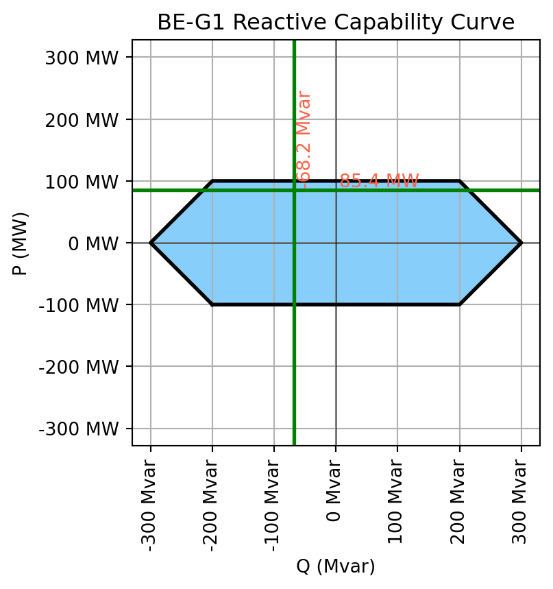
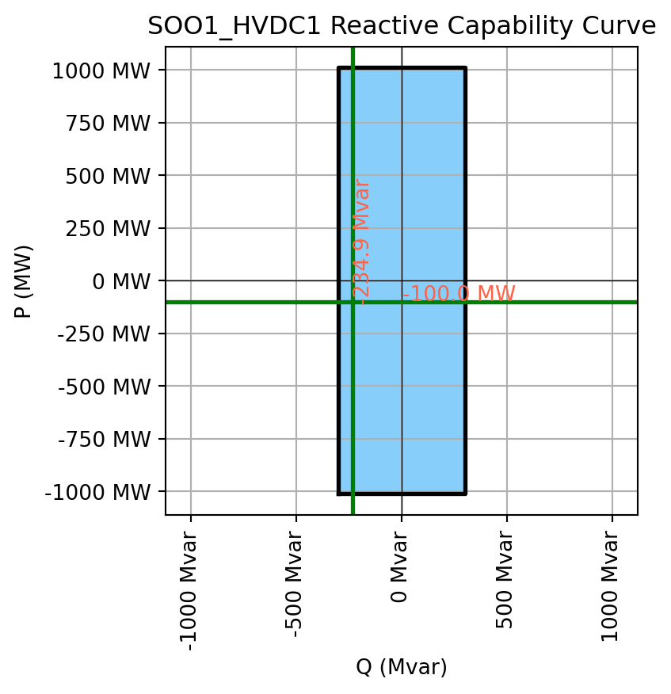

display(lf.get_provider_names())
display(lf.get_default_provider())['DynaFlow', 'OpenLoadFlow']'OpenLoadFlow'Hands-On Power System Analysis with PyPowSyBl
PyPowSyBl delegates power flow computation to solver providers. The default provider is OpenLoadFlow, an open-source Java-based solver developed alongside PowSyBl. This section explores the available solvers, their configuration parameters, and compares their behavior on test grids.
display(lf.get_provider_names())
display(lf.get_default_provider())['DynaFlow', 'OpenLoadFlow']'OpenLoadFlow'# Retrieve full provider parameter metadata
params_info = lf.get_provider_parameters().groupby("category_key").apply(lambda x: x)
params_info| description | type | default | possible_values | ||
|---|---|---|---|---|---|
| category_key | name | ||||
| Automation | simulateAutomationSystems | Automation systems simulation | BOOLEAN | false | |
| DC | dcApproximationType | DC approximation type | STRING | IGNORE_R | [IGNORE_R, IGNORE_G] |
| Debug | alwaysUpdateNetwork | Update network even if Newton-Raphson algorith... | BOOLEAN | false | |
| debugDir | Directory to dump debug files | STRING | |||
| FastRestart | actionableSwitchesIds | List of actionable switches IDs (used with fas... | STRING_LIST | [] | |
| ... | ... | ... | ... | ... | ... |
| VoltageControls | minPlausibleTargetVoltage | Min plausible target voltage | DOUBLE | 0.8 | |
| minRealisticVoltage | Min realistic voltage | DOUBLE | 0.5 | ||
| secondaryVoltageControl | Secondary voltage control simulation | BOOLEAN | false | ||
| voltageTargetPriorities | Voltage target priorities for voltage controls | STRING_LIST | [GENERATOR, TRANSFORMER, SHUNT] | [GENERATOR, TRANSFORMER, SHUNT] | |
| VoltageInit | voltageInitModeOverride | Voltage init mode override | STRING | NONE | [NONE, VOLTAGE_MAGNITUDE, FULL_VOLTAGE] |
80 rows × 4 columns
OpenLoadFlow provides three AC solver types:
print("OpenLoadFlow AC solvers available:",
lf.get_provider_parameters("OpenLoadFlow").loc["acSolverType", "possible_values"])OpenLoadFlow AC solvers available: [FAST_DECOUPLED, NEWTON_KRYLOV, NEWTON_RAPHSON]The DC approximation linearizes the power flow equations by assuming flat voltage magnitudes (\(|V| = 1\) p.u.) and small angle differences (\(\sin(\theta) \approx \theta\)). OpenLoadFlow supports multiple DC approximation types:
print("OpenLoadFlow DC solver approximations:",
lf.get_provider_parameters("OpenLoadFlow").loc["dcApproximationType", "possible_values"])OpenLoadFlow DC solver approximations: [IGNORE_R, IGNORE_G]We now compare all three AC solvers (Newton-Raphson, Fast Decoupled, Newton-Krylov) and the DC approximation on the MicroGrid T4 network. For each solver, we run the power flow and compare: convergence status, iteration count, slack bus mismatch, bus voltage magnitudes, and bus voltage angles.
net = get_microgrid_t4()
solvers = {
"NR": lf.Parameters(provider_parameters={"acSolverType": "NEWTON_RAPHSON"}),
"FD": lf.Parameters(provider_parameters={"acSolverType": "FAST_DECOUPLED"}),
"NK": lf.Parameters(provider_parameters={"acSolverType": "NEWTON_KRYLOV"}),
"DC": lf.Parameters()
}
for p in solvers.values():
p.hvdc_ac_emulation = False
# Create variants
base = net.get_working_variant_id()
for k in solvers:
net.clone_variant(base, f"lf_{k}")
# Run load flows
results = {}
lf_results = {}
for name, params in solvers.items():
net.set_working_variant(f"lf_{name}")
if name == "DC":
res = lf.run_dc(net, params)[0]
else:
res = lf.run_ac(net, params)[0]
buses = net.get_buses()
results[name] = {"v_mag": buses.v_mag.copy(), "v_angle": buses.v_angle.copy()}
lf_results[name] = res
# Load-flow summary
df_loadflow_results = pd.DataFrame({
name: {
"type": "DC" if name == "DC" else "AC",
"status": str(res.status),
"iterations": getattr(res, "iteration_count", None),
"slack_P_MW": (
res.slack_bus_results[0].active_power_mismatch
if getattr(res, "slack_bus_results", None) else None
)
}
for name, res in lf_results.items()
}).T
# Bus voltage magnitudes
df_v_mag = pd.DataFrame({name: r["v_mag"] for name, r in results.items()}).round(2)
df_v_mag_fmt = df_v_mag.copy()
df_v_mag_fmt.index = df_v_mag_fmt.index.astype(str).str[:5]
# Bus voltage angles
df_v_angle = pd.DataFrame({name: r["v_angle"] for name, r in results.items()}).round(2)
df_v_angle_fmt = df_v_angle.copy()
df_v_angle_fmt.index = df_v_angle_fmt.index.astype(str).str[:5]
print("Load Flow Results:")
display(df_loadflow_results)
print("\nBus voltage [kV] results by solver:")
display(df_v_mag_fmt)
print("\nBus angle [deg] results by solver:")
display(df_v_angle_fmt)Load Flow Results:| type | status | iterations | slack_P_MW | |
|---|---|---|---|---|
| NR | AC | ComponentStatus.CONVERGED | 10 | -0.006112 |
| FD | AC | ComponentStatus.CONVERGED | 18 | -0.03512 |
| NK | AC | ComponentStatus.CONVERGED | 16 | 0.0 |
| DC | DC | ComponentStatus.CONVERGED | 0 | -0.0 |
Bus voltage [kV] results by solver:| NR | FD | NK | DC | |
|---|---|---|---|---|
| id | ||||
| 8bbd7 | 115.50 | 115.50 | 115.50 | NaN |
| 469df | 414.81 | 414.81 | 414.71 | NaN |
| 69ef0 | 226.24 | 226.24 | 226.20 | NaN |
| 4ba71 | 10.40 | 10.40 | 10.41 | NaN |
| 929ba | 21.99 | 21.99 | 21.99 | NaN |
| d0486 | 223.35 | 223.35 | 223.23 | NaN |
| b10b1 | 224.18 | 224.18 | 224.13 | NaN |
| c1d5b | 224.28 | 224.28 | 224.25 | NaN |
| c1d5b | 411.06 | 411.06 | 410.97 | NaN |
| 8d8a8 | 16.03 | 16.03 | 16.03 | NaN |
| 2a37d | 16.02 | 16.02 | 16.02 | NaN |
Bus angle [deg] results by solver:| NR | FD | NK | DC | |
|---|---|---|---|---|
| id | ||||
| 8bbd7 | 1.35 | 1.35 | 1.37 | 1.41 |
| 469df | 0.00 | 0.00 | 0.00 | 0.00 |
| 69ef0 | 1.75 | 1.75 | 1.81 | 1.85 |
| 4ba71 | 3.59 | 3.59 | 3.73 | 3.51 |
| 929ba | 1.35 | 1.35 | 1.42 | 1.57 |
| d0486 | 5.26 | 5.26 | 5.39 | 5.37 |
| b10b1 | 0.72 | 0.72 | 0.76 | 0.81 |
| c1d5b | 17.86 | 17.86 | 18.21 | 17.46 |
| c1d5b | 0.17 | 0.17 | 0.24 | 0.10 |
| 8d8a8 | 21.58 | 21.58 | 22.07 | 21.07 |
| 2a37d | 19.57 | 19.57 | 19.99 | 19.14 |
The Newton-Raphson solver uses stopping criteria to decide when the solution has converged. Tighter tolerances produce more accurate results but require more iterations. Here we compare a tight (0.01) vs. loose (1.0) mismatch tolerance across all equation types:
net = get_microgrid_t4()
PARAMS_tight = lf.Parameters(provider_parameters={
"acSolverType": "NEWTON_RAPHSON",
"newtonRaphsonStoppingCriteriaType": "PER_EQUATION_TYPE_CRITERIA",
"maxActivePowerMismatch": "1e-2",
"maxReactivePowerMismatch": "1e-2",
"maxVoltageMismatch": "1e-2",
"maxAngleMismatch": "1e-2",
"maxRatioMismatch": "1e-2",
"maxSusceptanceMismatch": "1e-2",
"maxNewtonRaphsonIterations": "50"
})
PARAMS_loose = lf.Parameters(provider_parameters={
"acSolverType": "NEWTON_RAPHSON",
"newtonRaphsonStoppingCriteriaType": "PER_EQUATION_TYPE_CRITERIA",
"maxActivePowerMismatch": "1.0",
"maxReactivePowerMismatch": "1.0",
"maxVoltageMismatch": "1",
"maxAngleMismatch": "1",
"maxRatioMismatch": "1",
"maxSusceptanceMismatch": "1",
"maxNewtonRaphsonIterations": "50"
})
cases = {"0.01MW tolerance": PARAMS_tight, "1MW tolerance": PARAMS_loose}
base = net.get_working_variant_id()
for k in cases:
net.clone_variant(base, f"conv_{k}")
lf_results = {}
for name, params in cases.items():
net.set_working_variant(f"conv_{name}")
res = lf.run_ac(net, params)[0]
lf_results[name] = res
df_conv = pd.DataFrame({
name: {"status": str(r.status), "iterations": r.iteration_count}
for name, r in lf_results.items()
}).T
display(df_conv)| status | iterations | |
|---|---|---|
| 0.01MW tolerance | ComponentStatus.CONVERGED | 10 |
| 1MW tolerance | ComponentStatus.CONVERGED | 6 |
For large networks (thousands of buses), the choice of linear solver inside Newton-Raphson becomes critical. The Newton-Krylov solver avoids the full Jacobian factorization by using an iterative (GMRES-based) linear solver, which can be faster on very large systems. We benchmark both on the 6,515-bus RTE network:
net = get_rte_6515()
def params(kind, solver):
return lf.Parameters(
voltage_init_mode=lf.VoltageInitMode.UNIFORM_VALUES,
distributed_slack=(kind == "STANDARD"),
use_reactive_limits=(kind == "STANDARD"),
phase_shifter_regulation_on=False,
transformer_voltage_control_on=False,
component_mode=lf.ComponentMode.MAIN_CONNECTED,
provider_parameters={"acSolverType": solver},
)
def bench(kind, solver, runs=10, warmup=2):
p = params(kind, solver)
for _ in range(warmup):
lf.run_ac(net, parameters=p)
times = []
last = None
for _ in range(runs):
t0 = time.perf_counter()
last = lf.run_ac(net, parameters=p)
times.append((time.perf_counter() - t0) * 1000)
cr = last[0]
print(f"{kind} {solver} | status={cr.status} | iters={cr.iteration_count}")
print(f" runs={runs} (warmup={warmup})")
print(f" best : {min(times):.2f} ms")
print(f" median: {stats.median(times):.2f} ms")
print(f" mean : {stats.mean(times):.2f} ms")
for kind in ("BASIC", "STANDARD"):
bench(kind, "NEWTON_RAPHSON", runs=10, warmup=2)
bench(kind, "NEWTON_KRYLOV", runs=10, warmup=2)BASIC NEWTON_RAPHSON | status=ComponentStatus.CONVERGED | iters=4
runs=10 (warmup=2)
best : 174.49 ms
median: 211.39 ms
mean : 213.09 ms
BASIC NEWTON_KRYLOV | status=ComponentStatus.CONVERGED | iters=22
runs=10 (warmup=2)
best : 205.12 ms
median: 221.80 ms
mean : 228.56 ms
STANDARD NEWTON_RAPHSON | status=ComponentStatus.CONVERGED | iters=10
runs=10 (warmup=2)
best : 303.22 ms
median: 307.63 ms
mean : 327.65 ms
STANDARD NEWTON_KRYLOV | status=ComponentStatus.CONVERGED | iters=30
runs=10 (warmup=2)
best : 315.93 ms
median: 317.24 ms
mean : 319.85 msThe initial guess (starting vector) for the Newton-Raphson solver significantly impacts convergence speed and reliability. A good starting point reduces the number of iterations needed and can prevent divergence on difficult cases.
net = get_microgrid_t4()
START_MODES = {
"UNIFORM": lf.Parameters(voltage_init_mode=lf.VoltageInitMode.UNIFORM_VALUES),
"VOLTAGE_MAG": lf.Parameters(
provider_parameters={"voltageInitModeOverride": "VOLTAGE_MAGNITUDE"}
),
"DC_VALUES": lf.Parameters(voltage_init_mode=lf.VoltageInitMode.DC_VALUES),
"FULL_VOLT": lf.Parameters(
provider_parameters={"voltageInitModeOverride": "FULL_VOLTAGE"}
),
}
base = net.get_working_variant_id()
for k in list(START_MODES) + ["PREVIOUS"]:
net.clone_variant(base, f"sv_{k}")
rows = {}
for name, init in START_MODES.items():
net.set_working_variant(f"sv_{name}")
p = lf.Parameters(
voltage_init_mode=init.voltage_init_mode,
provider_parameters={
**getattr(init, "provider_parameters", {}),
"acSolverType": "NEWTON_RAPHSON",
"reportedFeatures": "NEWTON_RAPHSON_LOAD_FLOW",
},
)
p.hvdc_ac_emulation = False
report = rp.ReportNode()
res = lf.run_ac(net, p, report_node=report)[0]
fx0 = None
for line in str(report).splitlines():
if "Newton-Raphson norm |f(x)|=" in line:
fx0 = float(line.split("=")[-1])
break
rows[name] = {"|f(x)| initial": fx0, "iterations": res.iteration_count}
# PREVIOUS_VALUES case
net.set_working_variant("sv_PREVIOUS")
p_prev = lf.Parameters(
voltage_init_mode=lf.VoltageInitMode.UNIFORM_VALUES,
provider_parameters={"acSolverType": "NEWTON_RAPHSON"},
)
p_prev.hvdc_ac_emulation = False
lf.run_ac(net, p_prev)
p_prev2 = lf.Parameters(
voltage_init_mode=lf.VoltageInitMode.PREVIOUS_VALUES,
provider_parameters={
"acSolverType": "NEWTON_RAPHSON",
"reportedFeatures": "NEWTON_RAPHSON_LOAD_FLOW",
},
)
p_prev2.hvdc_ac_emulation = False
report2 = rp.ReportNode()
res2 = lf.run_ac(net, p_prev2, report_node=report2)[0]
fx_prev = None
for line in str(report2).splitlines():
if "Newton-Raphson norm |f(x)|=" in line:
fx_prev = float(line.split("=")[-1])
break
rows["PREVIOUS"] = {"|f(x)| initial": fx_prev, "iterations": res2.iteration_count}
pd.DataFrame(rows).T| |f(x)| initial | iterations | |
|---|---|---|
| UNIFORM | 38.340166 | 10.0 |
| VOLTAGE_MAG | 36.880263 | 9.0 |
| DC_VALUES | 29.096787 | 9.0 |
| FULL_VOLT | 23.700430 | 9.0 |
| PREVIOUS | 0.264289 | 8.0 |
Real generators have operating limits defined by a P-Q capability diagram: the feasible region of active power (P) and reactive power (Q) that the machine can deliver simultaneously. These curves are constrained by rotor current limits, stator current limits, and turbine power limits.
PowSyBl supports these curves natively — when use_reactive_limits=True, the solver enforces them by switching PV buses to PQ when a generator hits its reactive limit.
net = get_microgrid_t4()
gens_micro = net.get_generators()
gens_micro| name | energy_source | target_p | min_p | max_p | min_q | max_q | rated_s | reactive_limits_kind | target_v | target_q | voltage_regulator_on | regulated_element_id | p | q | i | voltage_level_id | bus_id | connected | |
|---|---|---|---|---|---|---|---|---|---|---|---|---|---|---|---|---|---|---|---|
| id | |||||||||||||||||||
| 3a3b27be-b18b-4385-b557-6735d733baf0 | BE-G1 | OTHER | 90.000000 | 50.0 | 200.0 | NaN | NaN | 300.0 | CURVE | 115.50000 | 100.256000 | True | a708c3bc-465d-4fe7-b6ef-6fa6408a62b0 | -90.00000 | 84.484905 | 6588.610081 | 4ba71b59-ee2f-450b-9f7d-cc2f1cc5e386 | 4ba71b59-ee2f-450b-9f7d-cc2f1cc5e386_0 | True |
| 550ebe0d-f2b2-48c1-991f-cebea43a21aa | BE-G2 | OTHER | 118.000000 | 50.0 | 200.0 | -200.0 | 200.0 | 300.0 | MIN_MAX | 21.98700 | 18.720301 | True | 550ebe0d-f2b2-48c1-991f-cebea43a21aa | -118.00000 | -85.603401 | 3828.006882 | 929ba893-c9dc-44d7-b1fd-30834bd3ab85 | 929ba893-c9dc-44d7-b1fd-30834bd3ab85_0 | True |
| 2844585c-0d35-488d-a449-685bcd57afbf | NL-G2 | OTHER | 140.000000 | 130.0 | 250.0 | 0.0 | 200.0 | 250.0 | MIN_MAX | 16.01775 | 77.743000 | True | 2844585c-0d35-488d-a449-685bcd57afbf | -140.00000 | -15.855775 | 5078.477037 | 2a37dc57-2faf-464a-8175-bc415f9a635f | 2a37dc57-2faf-464a-8175-bc415f9a635f_0 | True |
| 1dc9afba-23b5-41a0-8540-b479ed8baf4b | NL-G3 | OTHER | 150.000000 | 130.0 | 250.0 | 0.0 | 200.0 | 250.0 | MIN_MAX | 16.01775 | 83.296000 | True | 1dc9afba-23b5-41a0-8540-b479ed8baf4b | -150.00000 | -15.855775 | 5436.782735 | 2a37dc57-2faf-464a-8175-bc415f9a635f | 2a37dc57-2faf-464a-8175-bc415f9a635f_0 | True |
| 9c3b8f97-7972-477d-9dc8-87365cc0ad0e | NL-G1 | OTHER | 600.492701 | 300.0 | 1000.0 | 0.0 | 600.0 | 1100.0 | MIN_MAX | 16.03350 | 386.922556 | True | 9c3b8f97-7972-477d-9dc8-87365cc0ad0e | -557.88449 | -226.180820 | 21677.083836 | 8d8a82ba-b5b0-4e94-861a-192af055f2b8 | 8d8a82ba-b5b0-4e94-861a-192af055f2b8_0 | True |
g_curve = "3a3b27be-b18b-4385-b557-6735d733baf0" # BE-G1
display(net.get_reactive_capability_curve_points())
lf.run_ac(net, lf.Parameters())
plot_curve(net, g_curve)| p | min_q | max_q | ||
|---|---|---|---|---|
| id | num | |||
| 3a3b27be-b18b-4385-b557-6735d733baf0 | 0 | -100.0 | -200.0 | 200.0 |
| 1 | 0.0 | -300.0 | 300.0 | |
| 2 | 100.0 | -200.0 | 200.0 |

In power flow, one bus must absorb the active power mismatch between total generation and total load+losses — this is the slack bus. The choice of slack bus and how the mismatch is distributed across generators are critical modelling decisions that affect results.
OpenLoadFlow offers multiple strategies for selecting the slack bus automatically. The table below compares them all on the MicroGrid T4 network:
tmp = get_microgrid_t4()
slack_bus_from_ext = tmp.get_buses().index[0]
def run_slack_case(case_name, params):
net = get_microgrid_t4()
res = lf.run_ac(net, params)[0]
return {
"case": case_name,
"status": str(res.status),
"slack_bus": ", ".join([s.id for s in res.slack_bus_results]),
"slack_mismatch_MW": float(res.slack_bus_results[0].active_power_mismatch),
"distributed_P_MW": float(getattr(res, "distributed_active_power", 0.0)),
}
cases = []
# 1) Use CGMES-provided slack bus
cases.append(run_slack_case(
"CGMES slack", lf.Parameters(read_slack_bus=True, distributed_slack=False)))
# 2) First bus
cases.append(run_slack_case(
"First bus", lf.Parameters(read_slack_bus=False, distributed_slack=False,
provider_parameters={"slackBusSelectionMode": "FIRST"})))
# 3) Most meshed bus
cases.append(run_slack_case(
"Most meshed", lf.Parameters(read_slack_bus=False, distributed_slack=False,
provider_parameters={
"slackBusSelectionMode": "MOST_MESHED",
"mostMeshedSlackBusSelectorMaxNominalVoltagePercentile": "95"
})))
# 4) Largest generator
cases.append(run_slack_case(
"Largest generator", lf.Parameters(read_slack_bus=False, distributed_slack=False,
provider_parameters={"slackBusSelectionMode": "LARGEST_GENERATOR"})))
# 5) By name/ID
cases.append(run_slack_case(
"Name/ID", lf.Parameters(read_slack_bus=False, distributed_slack=False,
provider_parameters={
"slackBusSelectionMode": "NAME",
"slackBusesIds": str(slack_bus_from_ext)
})))
# 6) Country filter
cases.append(run_slack_case(
"Country filter NL",
lf.Parameters(read_slack_bus=False, distributed_slack=False,
provider_parameters={"slackBusSelectionMode": "MOST_MESHED",
"slackBusCountryFilter": "NL"})))
pd.DataFrame(cases).set_index("case")| status | slack_bus | slack_mismatch_MW | distributed_P_MW | |
|---|---|---|---|---|
| case | ||||
| CGMES slack | ComponentStatus.CONVERGED | 469df5f7-058f-4451-a998-57a48e8a56fe_0 | -43.036401 | 0.0 |
| First bus | ComponentStatus.CONVERGED | 8bbd7e74-ae20-4dce-8780-c20f8e18c2e0_0 | -42.797128 | 0.0 |
| Most meshed | ComponentStatus.CONVERGED | 469df5f7-058f-4451-a998-57a48e8a56fe_0 | -43.036401 | 0.0 |
| Largest generator | ComponentStatus.CONVERGED | 8d8a82ba-b5b0-4e94-861a-192af055f2b8_0 | -43.393804 | 0.0 |
| Name/ID | ComponentStatus.CONVERGED | c1d5bfea8f8011e08e4d00247eb1f55e_0 | -43.325931 | 0.0 |
| Country filter NL | ComponentStatus.CONVERGED | c1d5bfde8f8011e08e4d00247eb1f55e_0 | -43.083804 | 0.0 |
The reference bus sets the angle origin (\(\theta = 0°\)) for the power flow solution. By default it coincides with the slack bus, but OpenLoadFlow allows setting it independently — for example, using the generator with the highest reference priority (as specified in CGMES data).
def run_reference_bus_case(case_name, reference_mode):
net = get_microgrid_t4()
params = lf.Parameters(
provider_parameters={
"referenceBusSelectionMode": reference_mode,
"writeReferenceTerminals": "true"
}
)
res = lf.run_ac(net, params)[0]
return {
"case": case_name,
"referenceBusSelectionMode": reference_mode,
"reference_bus": res.reference_bus_id,
"slack_buses": ", ".join([s.id for s in res.slack_bus_results])
}
pd.DataFrame([
run_reference_bus_case("Reference = FIRST_SLACK", "FIRST_SLACK"),
run_reference_bus_case("Reference = GENERATOR_REFERENCE_PRIORITY", "GENERATOR_REFERENCE_PRIORITY"),
]).set_index("case")| referenceBusSelectionMode | reference_bus | slack_buses | |
|---|---|---|---|
| case | |||
| Reference = FIRST_SLACK | FIRST_SLACK | 469df5f7-058f-4451-a998-57a48e8a56fe_0 | 469df5f7-058f-4451-a998-57a48e8a56fe_0 |
| Reference = GENERATOR_REFERENCE_PRIORITY | GENERATOR_REFERENCE_PRIORITY | 8d8a82ba-b5b0-4e94-861a-192af055f2b8_0 | 469df5f7-058f-4451-a998-57a48e8a56fe_0 |
A PV bus is a bus where a generator controls the voltage magnitude to a setpoint (\(V_{target}\)). The active power \(P\) is specified, and the solver determines the reactive power \(Q\) needed to maintain the target voltage. When multiple generators regulate the same bus, their reactive power is shared:
net = get_microgrid_t4()
lf.run_ac(net, lf.Parameters())
gens = net.get_generators(attributes=["name", "bus_id", "voltage_level_id", "p", "q",
"voltage_regulator_on", "target_v", "target_p"])
gens_vctrl = gens[gens["voltage_regulator_on"] == True].copy()
display(gens_vctrl[["name", "bus_id", "target_v", "p", "q"]].sort_values(["bus_id", "name"]))
pv_ctrl = gens[gens.voltage_regulator_on].copy()
pv_buses = pv_ctrl.groupby("bus_id").agg(
controllers=("name", lambda x: ", ".join(x)),
targets_kV=("target_v", lambda x: ", ".join([f"{v:.3f}" for v in x])),
)
display(pv_buses)| name | bus_id | target_v | p | q | |
|---|---|---|---|---|---|
| id | |||||
| 2844585c-0d35-488d-a449-685bcd57afbf | NL-G2 | 2a37dc57-2faf-464a-8175-bc415f9a635f_0 | 16.01775 | -134.301585 | -12.181032 |
| 1dc9afba-23b5-41a0-8540-b479ed8baf4b | NL-G3 | 2a37dc57-2faf-464a-8175-bc415f9a635f_0 | 16.01775 | -144.301585 | -12.181032 |
| 3a3b27be-b18b-4385-b557-6735d733baf0 | BE-G1 | 4ba71b59-ee2f-450b-9f7d-cc2f1cc5e386_0 | 115.50000 | -85.441268 | 68.194460 |
| 9c3b8f97-7972-477d-9dc8-87365cc0ad0e | NL-G1 | 8d8a82ba-b5b0-4e94-861a-192af055f2b8_0 | 16.03350 | -577.699041 | -220.037574 |
| 550ebe0d-f2b2-48c1-991f-cebea43a21aa | BE-G2 | 929ba893-c9dc-44d7-b1fd-30834bd3ab85_0 | 21.98700 | -113.441268 | -81.062810 |
| controllers | targets_kV | |
|---|---|---|
| bus_id | ||
| 2a37dc57-2faf-464a-8175-bc415f9a635f_0 | NL-G2, NL-G3 | 16.018, 16.018 |
| 4ba71b59-ee2f-450b-9f7d-cc2f1cc5e386_0 | BE-G1 | 115.500 |
| 8d8a82ba-b5b0-4e94-861a-192af055f2b8_0 | NL-G1 | 16.034 |
| 929ba893-c9dc-44d7-b1fd-30834bd3ab85_0 | BE-G2 | 21.987 |
When distributed_slack=True, the active power imbalance (difference between generation and load+losses) is distributed across participating generators. Two common weighting strategies are:
participation_factor parameterdef run_mismatch_case(case_name, balance_type):
net = get_microgrid_t4()
g60 = "9c3b8f97-7972-477d-9dc8-87365cc0ad0e" # NL-G1
g30 = "2844585c-0d35-488d-a449-685bcd57afbf" # NL-G2
g10 = "1dc9afba-23b5-41a0-8540-b479ed8baf4b" # NL-G3
apc = net.get_extensions("activePowerControl")
apc["participation_factor"] = 0.0
apc.loc[[g60, g30, g10], "participation_factor"] = [0.6, 0.3, 0.1]
apc.loc[[g60, g30, g10], "participate"] = True
net.update_extensions("activePowerControl", apc)
load_id = net.get_loads().index[0]
p0 = float(net.get_loads().loc[load_id, "p0"])
net.update_loads(id=load_id, p0=p0 + 20.0)
params = lf.Parameters(distributed_slack=True, balance_type=balance_type)
res = lf.run_ac(net, params)[0]
g = net.get_generators(attributes=["name", "p", "target_p", "max_p"]).copy()
apc = net.get_extensions("activePowerControl")[["participate", "participation_factor"]]
g = g.join(apc, how="left")
g["case"] = case_name
return g[["case", "name", "participate", "participation_factor", "max_p", "p", "target_p"]], res
t1, r1 = run_mismatch_case(
"PF weights (participation_factor)",
lf.BalanceType.PROPORTIONAL_TO_GENERATION_PARTICIPATION_FACTOR
)
display(t1.sort_values(["case", "participation_factor"], ascending=[True, False]))
print("Case 1 distributed P (MW):", float(r1.distributed_active_power),
" slack mismatch (MW):", float(r1.slack_bus_results[0].active_power_mismatch))
t2, r2 = run_mismatch_case(
"Pmax weights (max_p)",
lf.BalanceType.PROPORTIONAL_TO_GENERATION_P_MAX
)
display(t2.sort_values(["case", "participation_factor"], ascending=[True, False]))
print("Case 2 distributed P (MW):", float(r2.distributed_active_power),
" slack mismatch (MW):", float(r2.slack_bus_results[0].active_power_mismatch))| case | name | participate | participation_factor | max_p | p | target_p | |
|---|---|---|---|---|---|---|---|
| id | |||||||
| 9c3b8f97-7972-477d-9dc8-87365cc0ad0e | PF weights (participation_factor) | NL-G1 | True | 0.6 | 1000.0 | -587.146955 | 600.492701 |
| 2844585c-0d35-488d-a449-685bcd57afbf | PF weights (participation_factor) | NL-G2 | True | 0.3 | 250.0 | -133.327127 | 140.000000 |
| 1dc9afba-23b5-41a0-8540-b479ed8baf4b | PF weights (participation_factor) | NL-G3 | True | 0.1 | 250.0 | -147.775709 | 150.000000 |
| 3a3b27be-b18b-4385-b557-6735d733baf0 | PF weights (participation_factor) | BE-G1 | True | 0.0 | 200.0 | -90.000000 | 90.000000 |
| 550ebe0d-f2b2-48c1-991f-cebea43a21aa | PF weights (participation_factor) | BE-G2 | True | 0.0 | 200.0 | -118.000000 | 118.000000 |
Case 1 distributed P (MW): -22.242910005562443 slack mismatch (MW): -0.9279882354255586| case | name | participate | participation_factor | max_p | p | target_p | |
|---|---|---|---|---|---|---|---|
| id | |||||||
| 9c3b8f97-7972-477d-9dc8-87365cc0ad0e | Pmax weights (max_p) | NL-G1 | True | 0.6 | 1000.0 | -588.741854 | 600.492701 |
| 2844585c-0d35-488d-a449-685bcd57afbf | Pmax weights (max_p) | NL-G2 | True | 0.3 | 250.0 | -137.062288 | 140.000000 |
| 1dc9afba-23b5-41a0-8540-b479ed8baf4b | Pmax weights (max_p) | NL-G3 | True | 0.1 | 250.0 | -147.062288 | 150.000000 |
| 3a3b27be-b18b-4385-b557-6735d733baf0 | Pmax weights (max_p) | BE-G1 | True | 0.0 | 200.0 | -87.649831 | 90.000000 |
| 550ebe0d-f2b2-48c1-991f-cebea43a21aa | Pmax weights (max_p) | BE-G2 | True | 0.0 | 200.0 | -115.649831 | 118.000000 |
Case 2 distributed P (MW): -22.32660975202584 slack mismatch (MW): -0.8779123209590077The distributed slack mechanism is an outer loop that iteratively adjusts generator outputs after each Newton-Raphson solve until the slack bus mismatch is below a threshold. Here we compare distributed_slack=False (all mismatch on slack bus) vs distributed_slack=True (mismatch shared among generators):
net = get_microgrid_t4()
display(net.get_extensions("activePowerControl")[["participate", "participation_factor"]])
load_id = net.get_loads().index[0]
def run_case(label, distributed):
net2 = get_microgrid_t4()
net2.update_loads(id=load_id, p0=float(net2.get_loads().loc[load_id, "p0"]) + 20.0)
res = lf.run_ac(net2, lf.Parameters(
read_slack_bus=True,
distributed_slack=distributed,
balance_type=lf.BalanceType.PROPORTIONAL_TO_GENERATION_PARTICIPATION_FACTOR
))[0]
return pd.DataFrame([{
"case": label,
"slack_buses": ", ".join([s.id for s in res.slack_bus_results]),
"slack_mismatch_MW": float(res.slack_bus_results[0].active_power_mismatch),
"distributed_P_MW": float(res.distributed_active_power),
}])
display(pd.concat([
run_case("distributed_slack = False", False),
run_case("distributed_slack = True (PF factors)", True),
], ignore_index=True))| participate | participation_factor | |
|---|---|---|
| id | ||
| 3a3b27be-b18b-4385-b557-6735d733baf0 | True | 0.0 |
| 550ebe0d-f2b2-48c1-991f-cebea43a21aa | True | 0.0 |
| 2844585c-0d35-488d-a449-685bcd57afbf | True | 0.0 |
| 1dc9afba-23b5-41a0-8540-b479ed8baf4b | True | 0.0 |
| 9c3b8f97-7972-477d-9dc8-87365cc0ad0e | True | 1.0 |
| case | slack_buses | slack_mismatch_MW | distributed_P_MW | |
|---|---|---|---|---|
| 0 | distributed_slack = False | 469df5f7-058f-4451-a998-57a48e8a56fe_0 | -22.992114 | 0.00000 |
| 1 | distributed_slack = True (PF factors) | 469df5f7-058f-4451-a998-57a48e8a56fe_0 | -0.935019 | -22.24291 |
In some cases, the mismatch can also be distributed on loads rather than generators. This is useful for modelling demand response. PyPowSyBl supports PROPORTIONAL_TO_LOAD balance type, with an option to keep the power factor constant:
# Case A: PF not forced
net = get_relicapgrid_belgovia()
load_id = net.get_loads().index[0]
net.update_loads(id=load_id, p0=float(net.get_loads().loc[load_id, "p0"]) + 20.0)
params = lf.Parameters(
distributed_slack=True,
balance_type=lf.BalanceType.PROPORTIONAL_TO_LOAD,
provider_parameters={"loadPowerFactorConstant": "false"},
)
lf.run_ac(net, params)
print("\n--- Slack on loads (PF not forced) ---")
display(net.get_loads()[["p0", "q0", "p", "q"]])
# Case B: PF constant
net = get_relicapgrid_belgovia()
load_id = net.get_loads().index[0]
net.update_loads(id=load_id, p0=float(net.get_loads().loc[load_id, "p0"]) + 20.0)
params = lf.Parameters(
distributed_slack=True,
balance_type=lf.BalanceType.PROPORTIONAL_TO_LOAD,
provider_parameters={"loadPowerFactorConstant": "true"},
)
lf.run_ac(net, params)
print("\n--- Slack on loads (PF constant) ---")
display(net.get_loads()[["p0", "q0", "p", "q"]])
--- Slack on loads (PF not forced) ---| p0 | q0 | p | q | |
|---|---|---|---|---|
| id | ||||
| b1480a00-b427-4001-a26c-51954d2bb7e9 | 20.424262 | 0.0000 | 18.632479 | 0.0000 |
| 1c6beed6-1acf-42e7-ba55-0cc9f04bddd8 | 84.852200 | 37.4774 | 77.408274 | 37.4774 |
| cb459405-cc14-4215-a45c-416789205904 | 113.205000 | 89.9997 | 103.273736 | 89.9997 |
--- Slack on loads (PF constant) ---| p0 | q0 | p | q | |
|---|---|---|---|---|
| id | ||||
| b1480a00-b427-4001-a26c-51954d2bb7e9 | 20.424262 | 0.0000 | 18.632479 | 0.000000 |
| 1c6beed6-1acf-42e7-ba55-0cc9f04bddd8 | 84.852200 | 37.4774 | 77.408274 | 34.189577 |
| cb459405-cc14-4215-a45c-416789205904 | 113.205000 | 89.9997 | 103.273736 | 82.104194 |
What happens when generators cannot absorb the full mismatch (e.g., they are all at their limits)? OpenLoadFlow offers three failure behaviors:
net = get_microgrid_t4()
base = net.get_working_variant_id()
# Freeze generators at target_p (no room to move)
g = net.get_generators()[["target_p", "min_p", "max_p"]].copy()
g["min_p"] = g["target_p"]
g["max_p"] = g["target_p"]
net.update_generators(g[["min_p", "max_p"]])
net.clone_variant(base, "FAIL")
net.clone_variant(base, "LEAVE_ON_SLACK_BUS")
net.clone_variant(base, "DISTRIBUTE_ON_REFERENCE_GENERATOR")
# FAIL
net.set_working_variant("FAIL")
load_id = net.get_loads().index[0]
net.update_loads(id=load_id, p0=float(net.get_loads().loc[load_id, "p0"]) + 10.0)
params = lf.Parameters(distributed_slack=True,
balance_type=lf.BalanceType.PROPORTIONAL_TO_GENERATION_P_MAX,
provider_parameters={"slackDistributionFailureBehavior": "FAIL"})
res = lf.run_ac(net, params)[0]
print("--- FAIL ---")
print("status:", res.status)
print("slack mismatch (MW):", float(res.slack_bus_results[0].active_power_mismatch))
# LEAVE_ON_SLACK_BUS
net.set_working_variant("LEAVE_ON_SLACK_BUS")
load_id = net.get_loads().index[0]
net.update_loads(id=load_id, p0=float(net.get_loads().loc[load_id, "p0"]) + 10.0)
params = lf.Parameters(distributed_slack=True,
balance_type=lf.BalanceType.PROPORTIONAL_TO_GENERATION_P_MAX,
provider_parameters={"slackDistributionFailureBehavior": "LEAVE_ON_SLACK_BUS"})
res = lf.run_ac(net, params)[0]
print("\n--- LEAVE_ON_SLACK_BUS ---")
print("status:", res.status)
print("slack mismatch (MW):", float(res.slack_bus_results[0].active_power_mismatch))
# DISTRIBUTE_ON_REFERENCE_GENERATOR
net.set_working_variant("DISTRIBUTE_ON_REFERENCE_GENERATOR")
load_id = net.get_loads().index[0]
net.update_loads(id=load_id, p0=float(net.get_loads().loc[load_id, "p0"]) + 10.0)
params = lf.Parameters(distributed_slack=True,
balance_type=lf.BalanceType.PROPORTIONAL_TO_GENERATION_P_MAX,
provider_parameters={"slackDistributionFailureBehavior": "DISTRIBUTE_ON_REFERENCE_GENERATOR"})
res = lf.run_ac(net, params)[0]
print("\n--- DISTRIBUTE_ON_REFERENCE_GENERATOR ---")
print("status:", res.status)
print("slack mismatch (MW):", float(res.slack_bus_results[0].active_power_mismatch))--- FAIL ---
status: ComponentStatus.FAILED
slack mismatch (MW): -32.31502634935368
--- LEAVE_ON_SLACK_BUS ---
status: ComponentStatus.CONVERGED
slack mismatch (MW): -33.04836396304761
--- DISTRIBUTE_ON_REFERENCE_GENERATOR ---
status: ComponentStatus.FAILED
slack mismatch (MW): -32.31502634935368When multiple generators regulate the same bus voltage, their reactive power contributions must be coordinated. OpenLoadFlow distributes \(Q\) based on the reactive dispatch mode. Here we demonstrate two cases: both generators regulating the same bus, and only one regulating:
net = get_microgrid_t4()
gens = net.get_generators()
pv_bus = gens.bus_id.value_counts().idxmax()
pv_gens = gens[gens.bus_id == pv_bus].index.tolist()
g1, g2 = pv_gens[:2]
rows = []
# Case 1: both regulate (no limits)
net.update_generators(pd.DataFrame({"voltage_regulator_on": True}, index=[g1, g2]))
params = lf.Parameters(use_reactive_limits=False,
provider_parameters={"acSolverType": "NEWTON_RAPHSON"})
params.hvdc_ac_emulation = False
lf.run_ac(net, params)
df = net.get_generators()[["q", "target_q"]].loc[[g1, g2]]
df["case"] = "both regulating (no limits)"
rows.append(df)
# Case 2: single generator regulates (no limits)
net.update_generators(pd.DataFrame({"voltage_regulator_on": [False, True]}, index=[g1, g2]))
params = lf.Parameters(use_reactive_limits=False,
provider_parameters={"acSolverType": "NEWTON_RAPHSON"})
params.hvdc_ac_emulation = False
lf.run_ac(net, params)
df = net.get_generators()[["q", "target_q"]].loc[[g1, g2]]
df["case"] = "single regulating (no limits)"
rows.append(df)
display(pd.concat(rows))| q | target_q | case | |
|---|---|---|---|
| id | |||
| 2844585c-0d35-488d-a449-685bcd57afbf | -6.83229 | 77.743 | both regulating (no limits) |
| 1dc9afba-23b5-41a0-8540-b479ed8baf4b | -6.83229 | 83.296 | both regulating (no limits) |
| 2844585c-0d35-488d-a449-685bcd57afbf | -77.74300 | 77.743 | single regulating (no limits) |
| 1dc9afba-23b5-41a0-8540-b479ed8baf4b | 64.07842 | 83.296 | single regulating (no limits) |
The Q_EQUAL_PROPORTION mode distributes reactive power proportionally to each generator’s reactive capability range (\(Q_{max} - Q_{min}\)). Here we modify one generator’s \(Q_{max}\) to observe how the sharing changes:
net = get_microgrid_t4()
crc = net.get_extensions("coordinatedReactiveControl")
net.remove_extensions("coordinatedReactiveControl", ids=list(crc.index))
gens = net.get_generators()
bus_id = gens.bus_id.value_counts().idxmax()
g1, g2 = gens[gens.bus_id == bus_id].index[:2]
net.update_generators(pd.DataFrame({"voltage_regulator_on": True}, index=[g1, g2]))
net.update_generators(id=[g1, g2], target_v=[17, 17])
net.update_generators(id=[g1], max_q=[300.0], min_q=[-100])
params = lf.Parameters(use_reactive_limits=True,
provider_parameters={"reactivePowerDispatchMode": "Q_EQUAL_PROPORTION"})
lf.run_ac(net, params)
res = net.get_generators()[["name", "bus_id", "q", "min_q", "max_q"]].loc[[g1, g2]].copy()
res["q_share"] = res["q"] / res["q"].sum()
res| name | bus_id | q | min_q | max_q | q_share | |
|---|---|---|---|---|---|---|
| id | ||||||
| 2844585c-0d35-488d-a449-685bcd57afbf | NL-G2 | 2a37dc57-2faf-464a-8175-bc415f9a635f_0 | -246.822841 | -100.0 | 300.0 | 0.666667 |
| 1dc9afba-23b5-41a0-8540-b479ed8baf4b | NL-G3 | 2a37dc57-2faf-464a-8175-bc415f9a635f_0 | -123.411421 | 0.0 | 200.0 | 0.333333 |
PowSyBl provides detailed iteration-by-iteration reporting via ReportNode. This lets you inspect the convergence behavior of the Newton-Raphson solver: initial mismatch \(|f(x)|\), how it decreases at each iteration, and any outer-loop adjustments (reactive limits, PV→PQ switching).
We demonstrate four convergence scenarios:
PARAMS_REPORTED_LF_FAST_CV = lf.Parameters(
use_reactive_limits=False,
provider_parameters={
'referenceBusSelectionMode': 'GENERATOR_REFERENCE_PRIORITY',
"reportedFeatures": "NEWTON_RAPHSON_LOAD_FLOW",
"voltageInitModeOverride": "FULL_VOLTAGE",
}
)
PARAMS_REPORTED_LF_SLOW_CV = lf.Parameters(
use_reactive_limits=False,
provider_parameters={
"reportedFeatures": "NEWTON_RAPHSON_LOAD_FLOW",
"voltageInitModeOverride": "NONE",
"stateVectorScalingMode": "MAX_VOLTAGE_CHANGE",
"maxVoltageChangeStateVectorScalingMaxDv": "0.01",
}
)
PARAMS_REPORTED_LF_BAD_CV = lf.Parameters(
use_reactive_limits=True,
provider_parameters={
"reportedFeatures": "NEWTON_RAPHSON_LOAD_FLOW",
"voltageInitModeOverride": "NONE",
}
)Full voltage initialization + no reactive limits = clean convergence.
report = rp.ReportNode('demo', 'demo')
net_microgrid = get_microgrid_t4()
lf_results = lf.run_ac(net_microgrid, PARAMS_REPORTED_LF_FAST_CV, report_node=report)
print(f"Load Flow converged: {lf_results}")
print(f"Report: {report}")Load Flow converged: [ComponentResult(connected_component_num=0, synchronous_component_num=0, status=CONVERGED, status_text=Converged, iteration_count=5, reference_bus_id='8d8a82ba-b5b0-4e94-861a-192af055f2b8_0', slack_bus_results=[SlackBusResult(id='469df5f7-058f-4451-a998-57a48e8a56fe_0', active_power_mismatch=-0.2793451406140733)], distributed_active_power=-42.302868899696264)]
Report: + demo
+ Load flow on network 'urn:uuid:19d9a263-529d-4f6c-8221-3a8a45de347b+urn:uuid:96adadbe-902b-4cd6-9fc8-01a56ecbee79'
+ Network CC0 SC0
+ Network info
Network has 12 buses and 17 branches
Network balance: active generation=1098.4927010000001 MW, active load=987.0 MW, reactive generation=0.0 MVar, reactive load=660.0 MVar
Angle reference bus: 8d8a82ba-b5b0-4e94-861a-192af055f2b8_0
Slack bus: 469df5f7-058f-4451-a998-57a48e8a56fe_0
Slack bus active power (-111.49270099999997 MW) distributed in 2 distribution iteration(s)
DC load flow completed (solverSuccess=true, outerloopStatus=STABLE)
+ Newton-Raphson on Network CC0 SC0
No outer loops have been launched
+ Initial mismatch
Newton-Raphson norm |f(x)|=23.700430023781973
+ Largest P mismatch: 131.41767243887938 MW
Bus Id: c1d5bfde8f8011e08e4d00247eb1f55e_0 (nominalVoltage=400.0kV)
Bus V: 1.0808418603991614 pu, -0.3661132342903649 rad
Bus injection: 31.417672438879386 MW, 1445.8179161336182 MVar
+ Largest Q mismatch: 1735.8179161336182 MVar
Bus Id: c1d5bfde8f8011e08e4d00247eb1f55e_0 (nominalVoltage=400.0kV)
Bus V: 1.0808418603991614 pu, -0.3661132342903649 rad
Bus injection: 31.417672438879386 MW, 1445.8179161336182 MVar
+ Largest V mismatch: 0.0 p.u.
Bus Id: 8d8a82ba-b5b0-4e94-861a-192af055f2b8_0 (nominalVoltage=15.75kV)
Bus V: 1.018 pu, 0.0 rad
Bus injection: 572.5713403729352 MW, 5.38285970206837 MVar
+ Iteration 1 mismatch
Newton-Raphson norm |f(x)|=0.7444022718125612
+ Largest P mismatch: 7.3080071802569595 MW
Bus Id: c1d5bfde8f8011e08e4d00247eb1f55e_0 (nominalVoltage=400.0kV)
Bus V: 1.0336675326930513 pu, -0.37945046449262637 rad
Bus injection: -92.69199281974304 MW, -216.78046052487412 MVar
+ Largest Q mismatch: 73.21953947512587 MVar
Bus Id: c1d5bfde8f8011e08e4d00247eb1f55e_0 (nominalVoltage=400.0kV)
Bus V: 1.0336675326930513 pu, -0.37945046449262637 rad
Bus injection: -92.69199281974304 MW, -216.78046052487412 MVar
+ Largest V mismatch: 0.0 p.u.
Bus Id: 8d8a82ba-b5b0-4e94-861a-192af055f2b8_0 (nominalVoltage=15.75kV)
Bus V: 1.018 pu, 0.0 rad
Bus injection: 599.6938341864105 MW, 198.50999098787042 MVar
+ Iteration 2 mismatch
Newton-Raphson norm |f(x)|=0.003916170927638706
+ Largest P mismatch: 0.07716783807634187 MW
Bus Id: 8bbd7e74-ae20-4dce-8780-c20f8e18c2e0_0 (nominalVoltage=110.0kV)
Bus V: 1.05 pu, -0.35992272296139066 rad
Bus injection: -199.92283216192365 MW, -90.00534697026707 MVar
+ Largest Q mismatch: 0.3785880971654887 MVar
Bus Id: c1d5bfde8f8011e08e4d00247eb1f55e_0 (nominalVoltage=400.0kV)
Bus V: 1.0284184934322067 pu, -0.3802365858827598 rad
Bus injection: -99.9601260598602 MW, -289.6214119028345 MVar
+ Largest V mismatch: 0.0 p.u.
Bus Id: 8d8a82ba-b5b0-4e94-861a-192af055f2b8_0 (nominalVoltage=15.75kV)
Bus V: 1.018 pu, 0.0 rad
Bus injection: 600.4903055015786 MW, 212.2405362269725 MVar
+ Iteration 3 mismatch
Newton-Raphson norm |f(x)|=1.017747806187189E-7
+ Largest P mismatch: 2.054016123853586E-6 MW
Bus Id: 4ba71b59-ee2f-450b-9f7d-cc2f1cc5e386_0 (nominalVoltage=10.5kV)
Bus V: 0.9746158655230985 pu, -0.3177762603756952 rad
Bus injection: 90.00000205401612 MW, -99.85802917383727 MVar
+ Largest Q mismatch: 9.844544157644464E-6 MVar
Bus Id: c1d5bfde8f8011e08e4d00247eb1f55e_0 (nominalVoltage=400.0kV)
Bus V: 1.0283923794372731 pu, -0.38024095157304244 rad
Bus injection: -99.99999892047875 MW, -289.99999015545586 MVar
+ Largest V mismatch: 0.0 p.u.
Bus Id: 8d8a82ba-b5b0-4e94-861a-192af055f2b8_0 (nominalVoltage=15.75kV)
Bus V: 1.018 pu, 0.0 rad
Bus injection: 600.4927009596564 MW, 212.30230594997215 MVar
+ Outer loop DistributedSlack
+ Outer loop iteration 1
Slack bus active power (-42.302868899696264 MW) distributed in 1 distribution iteration(s)
+ Newton-Raphson on Network CC0 SC0
Newton-Raphson of outer loop iteration 1 of type DistributedSlack
+ Initial mismatch
Newton-Raphson norm |f(x)|=0.25676867887275134
+ Largest P mismatch: 22.264667801601767 MW
Bus Id: 8d8a82ba-b5b0-4e94-861a-192af055f2b8_0 (nominalVoltage=15.75kV)
Bus V: 1.018 pu, 0.0 rad
Bus injection: 600.4927009596564 MW, 212.30230594997215 MVar
+ Largest Q mismatch: 9.844544157644464E-6 MVar
Bus Id: c1d5bfde8f8011e08e4d00247eb1f55e_0 (nominalVoltage=400.0kV)
Bus V: 1.0283923794372731 pu, -0.38024095157304244 rad
Bus injection: -99.99999892047875 MW, -289.99999015545586 MVar
+ Largest V mismatch: 0.0 p.u.
Bus Id: 8d8a82ba-b5b0-4e94-861a-192af055f2b8_0 (nominalVoltage=15.75kV)
Bus V: 1.018 pu, 0.0 rad
Bus injection: 600.4927009596564 MW, 212.30230594997215 MVar
+ Iteration 1 mismatch
Newton-Raphson norm |f(x)|=0.0014694213586177289
+ Largest P mismatch: -0.0059273991277919436 MW
Bus Id: 8bbd7e74-ae20-4dce-8780-c20f8e18c2e0_0 (nominalVoltage=110.0kV)
Bus V: 1.05 pu, -0.3519309013567827 rad
Bus injection: -200.00592739912778 MW, -89.99379157348932 MVar
+ Largest Q mismatch: 0.11476140680648506 MVar
Bus Id: c1d5bfea8f8011e08e4d00247eb1f55e_0 (nominalVoltage=220.0kV)
Bus V: 1.0206556794725157 pu, -0.06494413274087735 rad
Bus injection: -486.0035376356494 MW, -229.8852385931935 MVar
+ Largest V mismatch: 0.0 p.u.
Bus Id: 8d8a82ba-b5b0-4e94-861a-192af055f2b8_0 (nominalVoltage=15.75kV)
Bus V: 1.018 pu, 0.0 rad
Bus injection: 578.2231858375854 MW, 209.7809276702555 MVar
+ Iteration 2 mismatch
Newton-Raphson norm |f(x)|=1.2911395223134324E-8
+ Largest P mismatch: 5.096697286433027E-7 MW
Bus Id: 8bbd7e74-ae20-4dce-8780-c20f8e18c2e0_0 (nominalVoltage=110.0kV)
Bus V: 1.05 pu, -0.3519351503715913 rad
Bus injection: -199.99999949033028 MW, -90.0000000100333 MVar
+ Largest Q mismatch: 8.040559773547784E-7 MVar
Bus Id: c1d5bfea8f8011e08e4d00247eb1f55e_0 (nominalVoltage=220.0kV)
Bus V: 1.020648801122689 pu, -0.06494503616810726 rad
Bus injection: -486.000000094691 MW, -229.999999195944 MVar
+ Largest V mismatch: 0.0 p.u.
Bus Id: 8d8a82ba-b5b0-4e94-861a-192af055f2b8_0 (nominalVoltage=15.75kV)
Bus V: 1.018 pu, 0.0 rad
Bus injection: 578.2280331039368 MW, 209.8410418134038 MVar
Outer loop VoltageMonitoring
Outer loop DistributedSlack
Outer loop VoltageMonitoring
AC load flow completed successfully (solverStatus=CONVERGED, outerloopStatus=STABLE)
Flat-start + low state vector scaling slows convergence.
report = rp.ReportNode('demo', 'demo')
lf_results = lf.run_ac(net_microgrid, PARAMS_REPORTED_LF_SLOW_CV, report_node=report)
print(f"Load Flow converged: {lf_results}")
print(f"Report: {report}")Load Flow converged: [ComponentResult(connected_component_num=0, synchronous_component_num=0, status=CONVERGED, status_text=Converged, iteration_count=15, reference_bus_id='469df5f7-058f-4451-a998-57a48e8a56fe_0', slack_bus_results=[SlackBusResult(id='469df5f7-058f-4451-a998-57a48e8a56fe_0', active_power_mismatch=-0.2793371192722376)], distributed_active_power=-42.30287697176451)]
Report: + demo
+ Load flow on network 'urn:uuid:19d9a263-529d-4f6c-8221-3a8a45de347b+urn:uuid:96adadbe-902b-4cd6-9fc8-01a56ecbee79'
+ Network CC0 SC0
+ Network info
Network has 12 buses and 17 branches
Network balance: active generation=1098.4927010000001 MW, active load=987.0 MW, reactive generation=0.0 MVar, reactive load=660.0 MVar
Angle reference bus: 469df5f7-058f-4451-a998-57a48e8a56fe_0
Slack bus: 469df5f7-058f-4451-a998-57a48e8a56fe_0
+ Newton-Raphson on Network CC0 SC0
No outer loops have been launched
+ Initial mismatch
Newton-Raphson norm |f(x)|=38.34016625868386
+ Largest P mismatch: 1886.7553564852678 MW
Bus Id: c1d5bfde8f8011e08e4d00247eb1f55e_0 (nominalVoltage=400.0kV)
Bus V: 1.0 pu, 0.0 rad
Bus injection: 1786.7553564852678 MW, 1379.810942346333 MVar
+ Largest Q mismatch: -2450.1421972337534 MVar
Bus Id: 469df5f7-058f-4451-a998-57a48e8a56fe_0 (nominalVoltage=380.0kV)
Bus V: 1.0 pu, 0.0 rad
Bus injection: 205.1567412638199 MW, -2450.1421972337534 MVar
+ Largest V mismatch: -0.050000000000000044 p.u.
Bus Id: 8bbd7e74-ae20-4dce-8780-c20f8e18c2e0_0 (nominalVoltage=110.0kV)
Bus V: 1.0 pu, 0.0 rad
Bus injection: -342.11729451284936 MW, 78.19181206433261 MVar
+ Iteration 1 mismatch
Step size: 0.0476764710052523 (max voltage change: 11 Vmagnitude and 3 Vangle changes outside configured thresholds)
Newton-Raphson norm |f(x)|=36.504624511698275
+ Largest P mismatch: 1796.1386979575916 MW
Bus Id: c1d5bfde8f8011e08e4d00247eb1f55e_0 (nominalVoltage=400.0kV)
Bus V: 1.0030159040172084 pu, 2.0255144256617195E-4 rad
Bus injection: 1696.1386979575916 MW, 1300.7383356143396 MVar
+ Largest Q mismatch: -2332.53913569155 MVar
Bus Id: 469df5f7-058f-4451-a998-57a48e8a56fe_0 (nominalVoltage=380.0kV)
Bus V: 1.0057918461045083 pu, 0.0 rad
Bus injection: 190.2940576299441 MW, -2332.53913569155 MVar
+ Largest V mismatch: -0.04761617644973737 p.u.
Bus Id: 8bbd7e74-ae20-4dce-8780-c20f8e18c2e0_0 (nominalVoltage=110.0kV)
Bus V: 1.0023838235502627 pu, 0.001644943698734856 rad
Bus injection: -335.16005637967925 MW, 70.14592096437599 MVar
+ Iteration 2 mismatch
Step size: 0.056275167782663234 (max voltage change: 11 Vmagnitude and 3 Vangle changes outside configured thresholds)
Newton-Raphson norm |f(x)|=34.44157225448421
+ Largest P mismatch: 1694.2975113410378 MW
Bus Id: c1d5bfde8f8011e08e4d00247eb1f55e_0 (nominalVoltage=400.0kV)
Bus V: 1.0061803668818077 pu, 4.2907096742988065E-4 rad
Bus injection: 1594.2975113410378 MW, 1211.8987151015604 MVar
+ Largest Q mismatch: -2200.323041045961 MVar
Bus Id: 469df5f7-058f-4451-a998-57a48e8a56fe_0 (nominalVoltage=380.0kV)
Bus V: 1.0121071033218523 pu, 0.0 rad
Bus injection: 174.00872972601903 MW, -2200.323041045961 MVar
+ Largest V mismatch: -0.044936568130859555 p.u.
Bus Id: 8bbd7e74-ae20-4dce-8780-c20f8e18c2e0_0 (nominalVoltage=110.0kV)
Bus V: 1.0050634318691405 pu, 0.0034180129194294325 rad
Bus injection: -327.3408142520261 MW, 61.10073743475253 MVar
+ Iteration 3 mismatch
Step size: 0.0687315859018074 (max voltage change: 11 Vmagnitude and 3 Vangle changes outside configured thresholds)
Newton-Raphson norm |f(x)|=32.06394326013407
+ Largest P mismatch: 1576.9342730554836 MW
Bus Id: c1d5bfde8f8011e08e4d00247eb1f55e_0 (nominalVoltage=400.0kV)
Bus V: 1.0095487005342685 pu, 6.884579061897447E-4 rad
Bus injection: 1476.9342730554836 MW, 1109.5738548705701 MVar
+ Largest Q mismatch: -2047.8884855350946 MVar
Bus Id: 469df5f7-058f-4451-a998-57a48e8a56fe_0 (nominalVoltage=380.0kV)
Bus V: 1.0191457303245401 pu, 0.0 rad
Bus injection: 155.74828818303249 MW, -2047.8884855350946 MVar
+ Largest V mismatch: -0.041848006538240945 p.u.
Bus Id: 8bbd7e74-ae20-4dce-8780-c20f8e18c2e0_0 (nominalVoltage=110.0kV)
Bus V: 1.008151993461759 pu, 0.005369874611039848 rad
Bus injection: -318.32820115313353 MW, 50.67334065828781 MVar
+ Iteration 4 mismatch
Step size: 0.08858361093219827 (max voltage change: 11 Vmagnitude and 3 Vangle changes outside configured thresholds)
Newton-Raphson norm |f(x)|=29.210492253337495
+ Largest P mismatch: 1436.087340354585 MW
Bus Id: c1d5bfde8f8011e08e4d00247eb1f55e_0 (nominalVoltage=400.0kV)
Bus V: 1.0132228859307273 pu, 9.971813067715621E-4 rad
Bus injection: 1336.087340354585 MW, 986.8979645289595 MVar
+ Largest Q mismatch: -1864.8412601453124 MVar
Bus Id: 469df5f7-058f-4451-a998-57a48e8a56fe_0 (nominalVoltage=380.0kV)
Bus V: 1.0272779280544113 pu, 0.0 rad
Bus injection: 134.48705222497543 MW, -1864.8412601453124 MVar
+ Largest V mismatch: -0.03814095900876935 p.u.
Bus Id: 8bbd7e74-ae20-4dce-8780-c20f8e18c2e0_0 (nominalVoltage=110.0kV)
Bus V: 1.0118590409912307 pu, 0.007594557532951356 rad
Bus injection: -307.50654883238167 MW, 38.154135599632525 MVar
+ Iteration 5 mismatch
Step size: 0.12505405244409462 (max voltage change: 11 Vmagnitude and 3 Vangle changes outside configured thresholds)
Newton-Raphson norm |f(x)|=25.539375828174855
+ Largest P mismatch: 1254.8711495478394 MW
Bus Id: c1d5bfde8f8011e08e4d00247eb1f55e_0 (nominalVoltage=400.0kV)
Bus V: 1.017405795648606 pu, 0.001390007949882221 rad
Bus injection: 1154.8711495478394 MW, 829.3839495203325 MVar
+ Largest Q mismatch: -1629.0972033145244 MVar
Bus Id: 469df5f7-058f-4451-a998-57a48e8a56fe_0 (nominalVoltage=380.0kV)
Bus V: 1.0372779280544113 pu, 0.0 rad
Bus injection: 108.0633980806327 MW, -1629.0972033145244 MVar
+ Largest V mismatch: -0.03337127752061875 p.u.
Bus Id: 8bbd7e74-ae20-4dce-8780-c20f8e18c2e0_0 (nominalVoltage=110.0kV)
Bus V: 1.0166287224793813 pu, 0.010288201819980887 rad
Bus injection: -293.56480797809365 MW, 22.036926094561203 MVar
+ Iteration 6 mismatch
Step size: 0.15153380169995326 (max voltage change: 11 Vmagnitude and 3 Vangle changes outside configured thresholds)
Newton-Raphson norm |f(x)|=21.6533709754405
+ Largest P mismatch: 1063.2584159783596 MW
Bus Id: c1d5bfde8f8011e08e4d00247eb1f55e_0 (nominalVoltage=400.0kV)
Bus V: 1.0211259681666185 pu, 0.0017999677344705824 rad
Bus injection: 963.2584159783596 MW, 662.2085370967205 MVar
+ Largest Q mismatch: -1379.6106099555573 MVar
Bus Id: 469df5f7-058f-4451-a998-57a48e8a56fe_0 (nominalVoltage=380.0kV)
Bus V: 1.0472779280544113 pu, 0.0 rad
Bus injection: 81.39380792984042 MW, -1379.6106099555573 MVar
+ Largest V mismatch: -0.028314400970335107 p.u.
Bus Id: 8bbd7e74-ae20-4dce-8780-c20f8e18c2e0_0 (nominalVoltage=110.0kV)
Bus V: 1.021685599029665 pu, 0.012931600655258219 rad
Bus injection: -278.9139825878149 MW, 4.963313274283765 MVar
+ Iteration 7 mismatch
Step size: 0.1900357123962066 (max voltage change: 10 Vmagnitude and 3 Vangle changes outside configured thresholds)
Newton-Raphson norm |f(x)|=17.525458383030447
+ Largest P mismatch: 859.9554006708745 MW
Bus Id: c1d5bfde8f8011e08e4d00247eb1f55e_0 (nominalVoltage=400.0kV)
Bus V: 1.0243141742100357 pu, 0.0022283593330315204 rad
Bus injection: 759.9554006708745 MW, 484.0545211617925 MVar
+ Largest Q mismatch: -1114.7131397761173 MVar
Bus Id: 469df5f7-058f-4451-a998-57a48e8a56fe_0 (nominalVoltage=380.0kV)
Bus V: 1.0572779280544113 pu, 0.0 rad
Bus injection: 54.44616520046009 MW, -1114.7131397761173 MVar
+ Largest V mismatch: -0.022933653610865523 p.u.
Bus Id: 8bbd7e74-ae20-4dce-8780-c20f8e18c2e0_0 (nominalVoltage=110.0kV)
Bus V: 1.0270663463891345 pu, 0.015526996851746223 rad
Bus injection: -263.47574272374516 MW, -13.18577450750631 MVar
+ Iteration 8 mismatch
Step size: 0.25100988121398965 (max voltage change: 6 Vmagnitude and 0 Vangle changes outside configured thresholds)
Newton-Raphson norm |f(x)|=13.117295963271802
+ Largest P mismatch: 643.1261512377458 MW
Bus Id: c1d5bfde8f8011e08e4d00247eb1f55e_0 (nominalVoltage=400.0kV)
Bus V: 1.0268716424481439 pu, 0.0026772899144681906 rad
Bus injection: 543.1261512377458 MW, 293.01124809137224 MVar
+ Largest Q mismatch: -832.0685413061196 MVar
Bus Id: 469df5f7-058f-4451-a998-57a48e8a56fe_0 (nominalVoltage=380.0kV)
Bus V: 1.0672779280544114 pu, 0.0 rad
Bus injection: 27.188766542435527 MW, -832.0685413061196 MVar
+ Largest V mismatch: -0.017177079942199303 p.u.
Bus Id: 8bbd7e74-ae20-4dce-8780-c20f8e18c2e0_0 (nominalVoltage=110.0kV)
Bus V: 1.0328229200578007 pu, 0.01807648780663779 rad
Bus injection: -247.13871849706175 MW, -32.577835642669314 MVar
+ Iteration 9 mismatch
Step size: 0.36172144108290216 (max voltage change: 6 Vmagnitude and 0 Vangle changes outside configured thresholds)
Newton-Raphson norm |f(x)|=8.368976529799543
+ Largest P mismatch: 409.8996008051556 MW
Bus Id: c1d5bfde8f8011e08e4d00247eb1f55e_0 (nominalVoltage=400.0kV)
Bus V: 1.0286440507044194 pu, 0.003150353014971431 rad
Bus injection: 309.8996008051556 MW, 85.99481693852661 MVar
+ Largest Q mismatch: -528.1020848093265 MVar
Bus Id: 469df5f7-058f-4451-a998-57a48e8a56fe_0 (nominalVoltage=380.0kV)
Bus V: 1.0772779280544114 pu, 0.0 rad
Bus injection: -0.40610663984135664 MW, -528.1020848093265 MVar
+ Largest V mismatch: -0.010963761831910723 p.u.
Bus Id: 8bbd7e74-ae20-4dce-8780-c20f8e18c2e0_0 (nominalVoltage=110.0kV)
Bus V: 1.0390362381680893 pu, 0.020581832475297393 rad
Bus injection: -229.73021204723744 MW, -53.470903991735064 MVar
+ Iteration 10 mismatch
Step size: 0.48291266111084025 (max voltage change: 5 Vmagnitude and 0 Vangle changes outside configured thresholds)
Newton-Raphson norm |f(x)|=4.33067437752675
+ Largest P mismatch: 211.93871791323863 MW
Bus Id: c1d5bfde8f8011e08e4d00247eb1f55e_0 (nominalVoltage=400.0kV)
Bus V: 1.0291836074406788 pu, 0.0035417636132171184 rad
Bus injection: 111.93871791323863 MW, -92.67484278229826 MVar
+ Largest Q mismatch: -271.15116134051567 MVar
Bus Id: 469df5f7-058f-4451-a998-57a48e8a56fe_0 (nominalVoltage=380.0kV)
Bus V: 1.0850371021924818 pu, 0.0 rad
Bus injection: -21.99477502333501 MW, -271.15116134051567 MVar
+ Largest V mismatch: -0.00566922242987733 p.u.
Bus Id: 8bbd7e74-ae20-4dce-8780-c20f8e18c2e0_0 (nominalVoltage=110.0kV)
Bus V: 1.0443307775701227 pu, 0.02249187919741077 rad
Bus injection: -215.19407273478873 MW, -71.19549757361918 MVar
+ Iteration 11 mismatch
Step size: 0.6451996543061801 (max voltage change: 1 Vmagnitude and 0 Vangle changes outside configured thresholds)
Newton-Raphson norm |f(x)|=1.540679195447002
+ Largest P mismatch: 75.36786523669996 MW
Bus Id: c1d5bfde8f8011e08e4d00247eb1f55e_0 (nominalVoltage=400.0kV)
Bus V: 1.0289108572714505 pu, 0.0038042668041942747 rad
Bus injection: -24.63213476330005 MW, -218.5454943413905 MVar
+ Largest Q mismatch: -95.39026503591788 MVar
Bus Id: 469df5f7-058f-4451-a998-57a48e8a56fe_0 (nominalVoltage=380.0kV)
Bus V: 1.0899039492378084 pu, 0.0 rad
Bus injection: -35.59546833541404 MW, -95.39026503591788 MVar
+ Largest V mismatch: -0.002011442077935577 p.u.
Bus Id: 8bbd7e74-ae20-4dce-8780-c20f8e18c2e0_0 (nominalVoltage=110.0kV)
Bus V: 1.0479885579220645 pu, 0.023673743838264615 rad
Bus injection: -205.3346431952494 MW, -83.36690524734571 MVar
+ Iteration 12 mismatch
Newton-Raphson norm |f(x)|=0.0072989307930317595
+ Largest P mismatch: 0.09814628216093801 MW
Bus Id: c1d5bfde8f8011e08e4d00247eb1f55e_0 (nominalVoltage=400.0kV)
Bus V: 1.0284395389603995 pu, 0.003944683274119374 rad
Bus injection: -99.90185371783906 MW, -289.54274984461597 MVar
+ Largest Q mismatch: 0.5108795081267381 MVar
Bus Id: c1d5bfea8f8011e08e4d00247eb1f55e_0 (nominalVoltage=220.0kV)
Bus V: 1.0205371769361753 pu, 0.3167106781969012 rad
Bus injection: -486.05361795064283 MW, -229.48912049187325 MVar
+ Largest V mismatch: 0.0 p.u.
Bus Id: 8d8a82ba-b5b0-4e94-861a-192af055f2b8_0 (nominalVoltage=15.75kV)
Bus V: 1.018 pu, 0.3841765286124195 rad
Bus injection: 600.5005575144997 MW, 212.01777816495303 MVar
+ Iteration 13 mismatch
Newton-Raphson norm |f(x)|=3.4928419657155654E-7
+ Largest P mismatch: 1.5745445658410517E-5 MW
Bus Id: 8bbd7e74-ae20-4dce-8780-c20f8e18c2e0_0 (nominalVoltage=110.0kV)
Bus V: 1.05 pu, 0.02425130145369305 rad
Bus injection: -199.99998425455433 MW, -90.00000037903769 MVar
+ Largest Q mismatch: 2.1611524125830783E-5 MVar
Bus Id: c1d5bfde8f8011e08e4d00247eb1f55e_0 (nominalVoltage=400.0kV)
Bus V: 1.0283923807507498 pu, 0.003944110234751924 rad
Bus injection: -99.99999311416967 MW, -289.9999783884759 MVar
+ Largest V mismatch: 0.0 p.u.
Bus Id: 8d8a82ba-b5b0-4e94-861a-192af055f2b8_0 (nominalVoltage=15.75kV)
Bus V: 1.018 pu, 0.38418506123618595 rad
Bus injection: 600.492700747144 MW, 212.30229697771813 MVar
+ Outer loop DistributedSlack
+ Outer loop iteration 1
Slack bus active power (-42.302876971764505 MW) distributed in 1 distribution iteration(s)
+ Newton-Raphson on Network CC0 SC0
Newton-Raphson of outer loop iteration 1 of type DistributedSlack
+ Initial mismatch
Newton-Raphson norm |f(x)|=0.2567687057574736
+ Largest P mismatch: 22.264671837546324 MW
Bus Id: 8d8a82ba-b5b0-4e94-861a-192af055f2b8_0 (nominalVoltage=15.75kV)
Bus V: 1.018 pu, 0.38418506123618595 rad
Bus injection: 600.492700747144 MW, 212.30229697771813 MVar
+ Largest Q mismatch: 2.1611524125830783E-5 MVar
Bus Id: c1d5bfde8f8011e08e4d00247eb1f55e_0 (nominalVoltage=400.0kV)
Bus V: 1.0283923807507498 pu, 0.003944110234751924 rad
Bus injection: -99.99999311416967 MW, -289.9999783884759 MVar
+ Largest V mismatch: 0.0 p.u.
Bus Id: 8d8a82ba-b5b0-4e94-861a-192af055f2b8_0 (nominalVoltage=15.75kV)
Bus V: 1.018 pu, 0.38418506123618595 rad
Bus injection: 600.492700747144 MW, 212.30229697771813 MVar
+ Iteration 1 mismatch
Newton-Raphson norm |f(x)|=0.0014694215900156117
+ Largest P mismatch: -0.005927356731660893 MW
Bus Id: 8bbd7e74-ae20-4dce-8780-c20f8e18c2e0_0 (nominalVoltage=110.0kV)
Bus V: 1.05 pu, 0.023846677285136328 rad
Bus injection: -200.00592735673166 MW, -89.99379159417047 MVar
+ Largest Q mismatch: 0.11476142744943907 MVar
Bus Id: c1d5bfea8f8011e08e4d00247eb1f55e_0 (nominalVoltage=220.0kV)
Bus V: 1.020655679499992 pu, 0.31083344486782116 rad
Bus injection: -486.0035375974557 MW, -229.88523857255055 MVar
+ Largest V mismatch: 0.0 p.u.
Bus Id: 8d8a82ba-b5b0-4e94-861a-192af055f2b8_0 (nominalVoltage=15.75kV)
Bus V: 1.018 pu, 0.3757775771299874 rad
Bus injection: 578.2231816100581 MW, 209.78092720772193 MVar
+ Iteration 2 mismatch
Newton-Raphson norm |f(x)|=1.2911397240449253E-8
+ Largest P mismatch: 5.096683741712127E-7 MW
Bus Id: 8bbd7e74-ae20-4dce-8780-c20f8e18c2e0_0 (nominalVoltage=110.0kV)
Bus V: 1.05 pu, 0.02384561833251911 rad
Bus injection: -199.99999949033162 MW, -90.00000001003134 MVar
+ Largest Q mismatch: 8.040596188862992E-7 MVar
Bus Id: c1d5bfea8f8011e08e4d00247eb1f55e_0 (nominalVoltage=220.0kV)
Bus V: 1.020648801148925 pu, 0.3108357314915409 rad
Bus injection: -486.00000009469 MW, -229.99999919594038 MVar
+ Largest V mismatch: 0.0 p.u.
Bus Id: 8d8a82ba-b5b0-4e94-861a-192af055f2b8_0 (nominalVoltage=15.75kV)
Bus V: 1.018 pu, 0.37578076717863507 rad
Bus injection: 578.2280288554801 MW, 209.8410413605528 MVar
Outer loop VoltageMonitoring
Outer loop DistributedSlack
Outer loop VoltageMonitoring
AC load flow completed successfully (solverStatus=CONVERGED, outerloopStatus=STABLE)
Reactive limit enforcement and PV-to-PQ switching cause multiple outer loops.
report = rp.ReportNode('demo', 'demo')
lf_results = lf.run_ac(net_microgrid, PARAMS_REPORTED_LF_BAD_CV, report_node=report)
print(f"Load Flow converged: {lf_results}")
print(f"Report: {report}")Load Flow converged: [ComponentResult(connected_component_num=0, synchronous_component_num=0, status=CONVERGED, status_text=Converged, iteration_count=10, reference_bus_id='469df5f7-058f-4451-a998-57a48e8a56fe_0', slack_bus_results=[SlackBusResult(id='469df5f7-058f-4451-a998-57a48e8a56fe_0', active_power_mismatch=-0.006112050704313969)], distributed_active_power=-43.30795376321507)]
Report: + demo
+ Load flow on network 'urn:uuid:19d9a263-529d-4f6c-8221-3a8a45de347b+urn:uuid:96adadbe-902b-4cd6-9fc8-01a56ecbee79'
+ Network CC0 SC0
+ Network info
Network has 12 buses and 17 branches
Network balance: active generation=1098.4927010000001 MW, active load=987.0 MW, reactive generation=0.0 MVar, reactive load=660.0 MVar
Angle reference bus: 469df5f7-058f-4451-a998-57a48e8a56fe_0
Slack bus: 469df5f7-058f-4451-a998-57a48e8a56fe_0
+ Newton-Raphson on Network CC0 SC0
No outer loops have been launched
+ Initial mismatch
Newton-Raphson norm |f(x)|=38.34016625868386
+ Largest P mismatch: 1886.7553564852678 MW
Bus Id: c1d5bfde8f8011e08e4d00247eb1f55e_0 (nominalVoltage=400.0kV)
Bus V: 1.0 pu, 0.0 rad
Bus injection: 1786.7553564852678 MW, 1379.810942346333 MVar
+ Largest Q mismatch: -2450.1421972337534 MVar
Bus Id: 469df5f7-058f-4451-a998-57a48e8a56fe_0 (nominalVoltage=380.0kV)
Bus V: 1.0 pu, 0.0 rad
Bus injection: 205.1567412638199 MW, -2450.1421972337534 MVar
+ Largest V mismatch: -0.050000000000000044 p.u.
Bus Id: 8bbd7e74-ae20-4dce-8780-c20f8e18c2e0_0 (nominalVoltage=110.0kV)
Bus V: 1.0 pu, 0.0 rad
Bus injection: -342.11729451284936 MW, 78.19181206433261 MVar
+ Iteration 1 mismatch
Newton-Raphson norm |f(x)|=7.179049610230225
+ Largest P mismatch: 264.2374386953988 MW
Bus Id: c1d5bfea8f8011e08e4d00247eb1f55e_0 (nominalVoltage=220.0kV)
Bus V: 1.0452396527411567 pu, 0.35980496106012244 rad
Bus injection: -221.7625613046012 MW, 180.05607321269017 MVar
+ Largest Q mismatch: 410.0560732126901 MVar
Bus Id: c1d5bfea8f8011e08e4d00247eb1f55e_0 (nominalVoltage=220.0kV)
Bus V: 1.0452396527411567 pu, 0.35980496106012244 rad
Bus injection: -221.7625613046012 MW, 180.05607321269017 MVar
+ Largest V mismatch: 0.0 p.u.
Bus Id: 8d8a82ba-b5b0-4e94-861a-192af055f2b8_0 (nominalVoltage=15.75kV)
Bus V: 1.018 pu, 0.4301698433167974 rad
Bus injection: 638.6612337194147 MW, -0.8301680326476031 MVar
+ Iteration 2 mismatch
Newton-Raphson norm |f(x)|=0.3034603661803839
+ Largest P mismatch: 14.089600928370505 MW
Bus Id: c1d5bfea8f8011e08e4d00247eb1f55e_0 (nominalVoltage=220.0kV)
Bus V: 1.0214881891168814 pu, 0.31885420650782603 rad
Bus injection: -471.9103990716295 MW, -215.05260699346059 MVar
+ Largest Q mismatch: 14.9473930065394 MVar
Bus Id: c1d5bfea8f8011e08e4d00247eb1f55e_0 (nominalVoltage=220.0kV)
Bus V: 1.0214881891168814 pu, 0.31885420650782603 rad
Bus injection: -471.9103990716295 MW, -215.05260699346059 MVar
+ Largest V mismatch: 0.0 p.u.
Bus Id: 8d8a82ba-b5b0-4e94-861a-192af055f2b8_0 (nominalVoltage=15.75kV)
Bus V: 1.018 pu, 0.3863344361147052 rad
Bus injection: 601.0849881475596 MW, 203.7729527894181 MVar
+ Iteration 3 mismatch
Newton-Raphson norm |f(x)|=6.716486079485673E-4
+ Largest P mismatch: 0.033056562126621 MW
Bus Id: c1d5bfea8f8011e08e4d00247eb1f55e_0 (nominalVoltage=220.0kV)
Bus V: 1.0205064313244534 pu, 0.3167230275425232 rad
Bus injection: -485.9669434378734 MW, -229.97075959027651 MVar
+ Largest Q mismatch: 0.03687336213622494 MVar
Bus Id: c1d5bfde8f8011e08e4d00247eb1f55e_0 (nominalVoltage=400.0kV)
Bus V: 1.0283955127493811 pu, 0.00394402956777486 rad
Bus injection: -100.02989421201369 MW, -289.96312663786375 MVar
+ Largest V mismatch: 0.0 p.u.
Bus Id: 8d8a82ba-b5b0-4e94-861a-192af055f2b8_0 (nominalVoltage=15.75kV)
Bus V: 1.018 pu, 0.3841896722209187 rad
Bus injection: 600.4928166800696 MW, 212.2849457627272 MVar
+ Iteration 4 mismatch
Newton-Raphson norm |f(x)|=3.2280335629574976E-9
+ Largest P mismatch: 1.5788019780416107E-7 MW
Bus Id: c1d5bfea8f8011e08e4d00247eb1f55e_0 (nominalVoltage=220.0kV)
Bus V: 1.0205044358134596 pu, 0.3167183219868936 rad
Bus injection: -485.99999984211985 MW, -229.999999868518 MVar
+ Largest Q mismatch: 1.9210149027060197E-7 MVar
Bus Id: c1d5bfde8f8011e08e4d00247eb1f55e_0 (nominalVoltage=400.0kV)
Bus V: 1.0283923787818139 pu, 0.003944110175816233 rad
Bus injection: -100.00000014723958 MW, -289.9999998078985 MVar
+ Largest V mismatch: 0.0 p.u.
Bus Id: 8d8a82ba-b5b0-4e94-861a-192af055f2b8_0 (nominalVoltage=15.75kV)
Bus V: 1.018 pu, 0.38418506189189355 rad
Bus injection: 600.4927009983486 MW, 212.30230740670305 MVar
+ Outer loop DistributedSlack
+ Outer loop iteration 1
Slack bus active power (-42.30286623568909 MW) distributed in 1 distribution iteration(s)
+ Newton-Raphson on Network CC0 SC0
Newton-Raphson of outer loop iteration 1 of type DistributedSlack
+ Initial mismatch
Newton-Raphson norm |f(x)|=0.25676865936080084
+ Largest P mismatch: 22.26466643818492 MW
Bus Id: 8d8a82ba-b5b0-4e94-861a-192af055f2b8_0 (nominalVoltage=15.75kV)
Bus V: 1.018 pu, 0.38418506189189355 rad
Bus injection: 600.4927009983486 MW, 212.30230740670305 MVar
+ Largest Q mismatch: 1.9210149027060197E-7 MVar
Bus Id: c1d5bfde8f8011e08e4d00247eb1f55e_0 (nominalVoltage=400.0kV)
Bus V: 1.0283923787818139 pu, 0.003944110175816233 rad
Bus injection: -100.00000014723958 MW, -289.9999998078985 MVar
+ Largest V mismatch: 0.0 p.u.
Bus Id: 8d8a82ba-b5b0-4e94-861a-192af055f2b8_0 (nominalVoltage=15.75kV)
Bus V: 1.018 pu, 0.38418506189189355 rad
Bus injection: 600.4927009983486 MW, 212.30230740670305 MVar
+ Iteration 1 mismatch
Newton-Raphson norm |f(x)|=0.0014694212662724646
+ Largest P mismatch: -0.005927409504558057 MW
Bus Id: 8bbd7e74-ae20-4dce-8780-c20f8e18c2e0_0 (nominalVoltage=110.0kV)
Bus V: 1.05 pu, 0.02384667738746614 rad
Bus injection: -200.00592740950455 MW, -89.99379157911788 MVar
+ Largest Q mismatch: 0.11476139785631112 MVar
Bus Id: c1d5bfea8f8011e08e4d00247eb1f55e_0 (nominalVoltage=220.0kV)
Bus V: 1.020655679463362 pu, 0.31083344634401017 rad
Bus injection: -486.00353765468645 MW, -229.88523860214366 MVar
+ Largest V mismatch: 0.0 p.u.
Bus Id: 8d8a82ba-b5b0-4e94-861a-192af055f2b8_0 (nominalVoltage=15.75kV)
Bus V: 1.018 pu, 0.37577757924331057 rad
Bus injection: 578.2231872366016 MW, 209.78092782384934 MVar
+ Iteration 2 mismatch
Newton-Raphson norm |f(x)|=1.291137561072292E-8
+ Largest P mismatch: 5.096705280038805E-7 MW
Bus Id: 8bbd7e74-ae20-4dce-8780-c20f8e18c2e0_0 (nominalVoltage=110.0kV)
Bus V: 1.05 pu, 0.023845618435746882 rad
Bus injection: -199.99999949032946 MW, -90.00000001003143 MVar
+ Largest Q mismatch: 8.040604626557979E-7 MVar
Bus Id: c1d5bfea8f8011e08e4d00247eb1f55e_0 (nominalVoltage=220.0kV)
Bus V: 1.0206488011140307 pu, 0.3108357329839323 rad
Bus injection: -486.0000000946915 MW, -229.99999919593952 MVar
+ Largest V mismatch: 0.0 p.u.
Bus Id: 8d8a82ba-b5b0-4e94-861a-192af055f2b8_0 (nominalVoltage=15.75kV)
Bus V: 1.018 pu, 0.37578076931078724 rad
Bus injection: 578.2280345060459 MW, 209.84104196285296 MVar
Outer loop VoltageMonitoring
+ Outer loop ReactiveLimits
+ Outer loop iteration 2
+ 1 buses switched PV -> PQ (4 buses remain PV)
Switch bus 'd0486169-2205-40b2-895e-b672ecb9e5fc_0' PV -> PQ, q=83.0214581414813 > maxQ=10.404
+ Outer loop iteration 3
1 buses blocked at a reactive limit have been adjusted because the reactive limit changed
+ Newton-Raphson on Network CC0 SC0
Newton-Raphson of outer loop iteration 2 of type ReactiveLimits
+ Initial mismatch
Newton-Raphson norm |f(x)|=0.7261745814148132
+ Largest P mismatch: 5.096705280038805E-7 MW
Bus Id: 8bbd7e74-ae20-4dce-8780-c20f8e18c2e0_0 (nominalVoltage=110.0kV)
Bus V: 1.05 pu, 0.023845618435746882 rad
Bus injection: -199.99999949032946 MW, -90.00000001003143 MVar
+ Largest Q mismatch: 72.6174581414813 MVar
Bus Id: d0486169-2205-40b2-895e-b672ecb9e5fc_0 (nominalVoltage=225.0kV)
Bus V: 1.02 pu, 0.090058840265147 rad
Bus injection: -0.9999999813822935 MW, 83.0214581414813 MVar
+ Largest V mismatch: 0.0 p.u.
Bus Id: 8d8a82ba-b5b0-4e94-861a-192af055f2b8_0 (nominalVoltage=15.75kV)
Bus V: 1.018 pu, 0.37578076931078724 rad
Bus injection: 578.2280345060459 MW, 209.84104196285296 MVar
+ Iteration 1 mismatch
Newton-Raphson norm |f(x)|=0.018454433614627532
+ Largest P mismatch: 0.12386449722894266 MW
Bus Id: b10b171b-3bc5-4849-bb1f-61ed9ea1ec7c_0 (nominalVoltage=225.0kV)
Bus V: 0.9964988077473979 pu, 0.012572191068704105 rad
Bus injection: -199.87613550277106 MW, -50.010860743682336 MVar
+ Largest Q mismatch: 1.8349183632119626 MVar
Bus Id: d0486169-2205-40b2-895e-b672ecb9e5fc_0 (nominalVoltage=225.0kV)
Bus V: 0.9935475345539617 pu, 0.09187217792322114 rad
Bus injection: -0.8941199338556305 MW, 12.238918363211962 MVar
+ Largest V mismatch: 0.0 p.u.
Bus Id: 8d8a82ba-b5b0-4e94-861a-192af055f2b8_0 (nominalVoltage=15.75kV)
Bus V: 1.018 pu, 0.3767884306140761 rad
Bus injection: 578.2274505613666 MW, 219.75481181105283 MVar
+ Iteration 2 mismatch
Newton-Raphson norm |f(x)|=1.3492100376326776E-5
+ Largest P mismatch: 2.662449483983517E-4 MW
Bus Id: d0486169-2205-40b2-895e-b672ecb9e5fc_0 (nominalVoltage=225.0kV)
Bus V: 0.9928446348119473 pu, 0.09191691932582277 rad
Bus injection: -0.9997337550516017 MW, 10.405292132780211 MVar
+ Largest Q mismatch: 0.0012921327802117855 MVar
Bus Id: d0486169-2205-40b2-895e-b672ecb9e5fc_0 (nominalVoltage=225.0kV)
Bus V: 0.9928446348119473 pu, 0.09191691932582277 rad
Bus injection: -0.9997337550516017 MW, 10.405292132780211 MVar
+ Largest V mismatch: 0.0 p.u.
Bus Id: 8d8a82ba-b5b0-4e94-861a-192af055f2b8_0 (nominalVoltage=15.75kV)
Bus V: 1.018 pu, 0.3768122098159537 rad
Bus injection: 578.2280341252256 MW, 220.01960541819287 MVar
+ Newton-Raphson on Network CC0 SC0
Newton-Raphson of outer loop iteration 3 of type ReactiveLimits
+ Initial mismatch
Newton-Raphson norm |f(x)|=0.0054788758161505805
+ Largest P mismatch: 2.662449483983517E-4 MW
Bus Id: d0486169-2205-40b2-895e-b672ecb9e5fc_0 (nominalVoltage=225.0kV)
Bus V: 0.9928446348119473 pu, 0.09191691932582277 rad
Bus injection: -0.9997337550516017 MW, 10.405292132780211 MVar
+ Largest Q mismatch: 0.5478874440315209 MVar
Bus Id: d0486169-2205-40b2-895e-b672ecb9e5fc_0 (nominalVoltage=225.0kV)
Bus V: 0.9928446348119473 pu, 0.09191691932582277 rad
Bus injection: -0.9997337550516017 MW, 10.405292132780211 MVar
+ Largest V mismatch: 0.0 p.u.
Bus Id: 8d8a82ba-b5b0-4e94-861a-192af055f2b8_0 (nominalVoltage=15.75kV)
Bus V: 1.018 pu, 0.3768122098159537 rad
Bus injection: 578.2280341252256 MW, 220.01960541819287 MVar
+ Iteration 1 mismatch
Newton-Raphson norm |f(x)|=1.1691751291385264E-6
+ Largest P mismatch: 7.943111346442322E-6 MW
Bus Id: b10b171b-3bc5-4849-bb1f-61ed9ea1ec7c_0 (nominalVoltage=225.0kV)
Bus V: 0.9963380011881708 pu, 0.012549950703713269 rad
Bus injection: -199.99999205688866 MW, -50.00000070876447 MVar
+ Largest Q mismatch: 1.1617177762407449E-4 MVar
Bus Id: d0486169-2205-40b2-895e-b672ecb9e5fc_0 (nominalVoltage=225.0kV)
Bus V: 0.992634159053791 pu, 0.09193130481394977 rad
Bus injection: -0.9999926091513456 MW, 9.857520860526314 MVar
+ Largest V mismatch: 0.0 p.u.
Bus Id: 8d8a82ba-b5b0-4e94-861a-192af055f2b8_0 (nominalVoltage=15.75kV)
Bus V: 1.018 pu, 0.37682017663157336 rad
Bus injection: 578.2280345230791 MW, 220.09851119908816 MVar
+ Outer loop DistributedSlack
+ Outer loop iteration 4
Slack bus active power (-1.0050875275259161 MW) distributed in 1 distribution iteration(s)
+ Newton-Raphson on Network CC0 SC0
Newton-Raphson of outer loop iteration 4 of type DistributedSlack
+ Initial mismatch
Newton-Raphson norm |f(x)|=0.006100647761077782
+ Largest P mismatch: 0.5289933984554906 MW
Bus Id: 8d8a82ba-b5b0-4e94-861a-192af055f2b8_0 (nominalVoltage=15.75kV)
Bus V: 1.018 pu, 0.37682017663157336 rad
Bus injection: 578.2280345230791 MW, 220.09851119908816 MVar
+ Largest Q mismatch: 1.1617177762407449E-4 MVar
Bus Id: d0486169-2205-40b2-895e-b672ecb9e5fc_0 (nominalVoltage=225.0kV)
Bus V: 0.992634159053791 pu, 0.09193130481394977 rad
Bus injection: -0.9999926091513456 MW, 9.857520860526314 MVar
+ Largest V mismatch: 0.0 p.u.
Bus Id: 8d8a82ba-b5b0-4e94-861a-192af055f2b8_0 (nominalVoltage=15.75kV)
Bus V: 1.018 pu, 0.37682017663157336 rad
Bus injection: 578.2280345230791 MW, 220.09851119908816 MVar
+ Iteration 1 mismatch
Newton-Raphson norm |f(x)|=8.360030492908179E-7
+ Largest P mismatch: -3.7704353417211678E-6 MW
Bus Id: 8bbd7e74-ae20-4dce-8780-c20f8e18c2e0_0 (nominalVoltage=110.0kV)
Bus V: 1.05 pu, 0.023526302667769755 rad
Bus injection: -200.00000377043534 MW, -89.99999656051281 MVar
+ Largest Q mismatch: 6.503644769395578E-5 MVar
Bus Id: c1d5bfea8f8011e08e4d00247eb1f55e_0 (nominalVoltage=220.0kV)
Bus V: 1.0194738927685223 pu, 0.31167328301424035 rad
Bus injection: -486.0000029329531 MW, -229.99993496355228 MVar
+ Largest V mismatch: 0.0 p.u.
Bus Id: 8d8a82ba-b5b0-4e94-861a-192af055f2b8_0 (nominalVoltage=15.75kV)
Bus V: 1.018 pu, 0.376619435233334 rad
Bus injection: 577.6990383107355 MW, 220.0375744228455 MVar
Outer loop VoltageMonitoring
Outer loop ReactiveLimits
Outer loop DistributedSlack
Outer loop VoltageMonitoring
Outer loop ReactiveLimits
AC load flow completed successfully (solverStatus=CONVERGED, outerloopStatus=STABLE)
Push a generator’s voltage setpoint far from feasible to cause divergence.
gen = net_microgrid.get_generators()
gen.loc[gen["name"] == "NL-G1", "target_v"] = 25 # kV instead of 16kV
net_microgrid.update_generators(gen[["target_v"]])
report = rp.ReportNode('demo', 'demo')
lf_results = lf.run_ac(net_microgrid, PARAMS_REPORTED_LF_BAD_CV, report_node=report)
print(f"Load Flow result: {lf_results}")
print(f"Report: {report}")Load Flow result: [ComponentResult(connected_component_num=0, synchronous_component_num=0, status=MAX_ITERATION_REACHED, status_text=Reached Newton-Raphson max iterations limit, iteration_count=21, reference_bus_id='469df5f7-058f-4451-a998-57a48e8a56fe_0', slack_bus_results=[SlackBusResult(id='469df5f7-058f-4451-a998-57a48e8a56fe_0', active_power_mismatch=198.83384987623012)], distributed_active_power=2.4931871306651643)]
Report: + demo
+ Load flow on network 'urn:uuid:19d9a263-529d-4f6c-8221-3a8a45de347b+urn:uuid:96adadbe-902b-4cd6-9fc8-01a56ecbee79'
+ Network CC0 SC0
+ Network info
Network has 12 buses and 17 branches
Network balance: active generation=1098.4927010000001 MW, active load=987.0 MW, reactive generation=0.0 MVar, reactive load=660.0 MVar
Angle reference bus: 469df5f7-058f-4451-a998-57a48e8a56fe_0
Slack bus: 469df5f7-058f-4451-a998-57a48e8a56fe_0
+ Newton-Raphson on Network CC0 SC0
No outer loops have been launched
+ Initial mismatch
Newton-Raphson norm |f(x)|=38.34465996586705
+ Largest P mismatch: 1886.7553564852678 MW
Bus Id: c1d5bfde8f8011e08e4d00247eb1f55e_0 (nominalVoltage=400.0kV)
Bus V: 1.0 pu, 0.0 rad
Bus injection: 1786.7553564852678 MW, 1379.810942346333 MVar
+ Largest Q mismatch: -2450.1421972337534 MVar
Bus Id: 469df5f7-058f-4451-a998-57a48e8a56fe_0 (nominalVoltage=380.0kV)
Bus V: 1.0 pu, 0.0 rad
Bus injection: 205.1567412638199 MW, -2450.1421972337534 MVar
+ Largest V mismatch: -0.5873015873015872 p.u.
Bus Id: 8d8a82ba-b5b0-4e94-861a-192af055f2b8_0 (nominalVoltage=15.75kV)
Bus V: 1.0 pu, 0.0 rad
Bus injection: 2.591480062691698 MW, 213.39891046211648 MVar
+ Iteration 1 mismatch
Newton-Raphson norm |f(x)|=17.250447853010304
+ Largest P mismatch: -1171.7029895907633 MW
Bus Id: c1d5bfde8f8011e08e4d00247eb1f55e_0 (nominalVoltage=400.0kV)
Bus V: 1.147215534694717 pu, -5.74072201912466E-4 rad
Bus injection: -1271.7029895907633 MW, 51.91748146309085 MVar
+ Largest Q mismatch: 651.343652143358 MVar
Bus Id: c1d5bfea8f8011e08e4d00247eb1f55e_0 (nominalVoltage=220.0kV)
Bus V: 1.2727826383270713 pu, 0.42928662494276043 rad
Bus injection: 121.31737560853715 MW, 421.34365214335804 MVar
+ Largest V mismatch: -2.220446049250313E-16 p.u.
Bus Id: 8d8a82ba-b5b0-4e94-861a-192af055f2b8_0 (nominalVoltage=15.75kV)
Bus V: 1.587301587301587 pu, 0.4951555738032459 rad
Bus injection: 1193.8297146991981 MW, 4822.737452409548 MVar
+ Iteration 2 mismatch
Newton-Raphson norm |f(x)|=1.4199321637131974
+ Largest P mismatch: -36.55975956350055 MW
Bus Id: c1d5bfde8f8011e08e4d00247eb1f55e_0 (nominalVoltage=400.0kV)
Bus V: 1.1180492528419375 pu, -6.03385462785985E-4 rad
Bus injection: -136.55975956350056 MW, -206.04458167329835 MVar
+ Largest Q mismatch: 100.56371088610652 MVar
Bus Id: c1d5bfea8f8011e08e4d00247eb1f55e_0 (nominalVoltage=220.0kV)
Bus V: 1.2508046231494925 pu, 0.2977213228763082 rad
Bus injection: -452.17897306790934 MW, -129.43628911389345 MVar
+ Largest V mismatch: 0.0 p.u.
Bus Id: 8d8a82ba-b5b0-4e94-861a-192af055f2b8_0 (nominalVoltage=15.75kV)
Bus V: 1.5873015873015872 pu, 0.3300656002470317 rad
Bus injection: 610.0569821365519 MW, 5099.116199774395 MVar
+ Iteration 3 mismatch
Newton-Raphson norm |f(x)|=0.015753641045196755
+ Largest P mismatch: 0.9331015293244649 MW
Bus Id: 8bbd7e74-ae20-4dce-8780-c20f8e18c2e0_0 (nominalVoltage=110.0kV)
Bus V: 1.05 pu, 0.03370503358286892 rad
Bus injection: -199.06689847067554 MW, -89.96326252102679 MVar
+ Largest Q mismatch: 0.6192776880670436 MVar
Bus Id: c1d5bfde8f8011e08e4d00247eb1f55e_0 (nominalVoltage=400.0kV)
Bus V: 1.1113531446316736 pu, -5.637998727857893E-4 rad
Bus injection: -100.37399682437425 MW, -289.38072231193297 MVar
+ Largest V mismatch: 0.0 p.u.
Bus Id: 8d8a82ba-b5b0-4e94-861a-192af055f2b8_0 (nominalVoltage=15.75kV)
Bus V: 1.5873015873015872 pu, 0.32476718053612225 rad
Bus injection: 600.5255333054316 MW, 5166.963328890487 MVar
+ Iteration 4 mismatch
Newton-Raphson norm |f(x)|=4.621210852123261E-6
+ Largest P mismatch: 2.8473550548469007E-4 MW
Bus Id: 4ba71b59-ee2f-450b-9f7d-cc2f1cc5e386_0 (nominalVoltage=10.5kV)
Bus V: 0.6478381901849088 pu, 0.10244780037809682 rad
Bus injection: 90.00028473550549 MW, -527.8544177158341 MVar
+ Largest Q mismatch: 2.390380290262506E-4 MVar
Bus Id: 8bbd7e74-ae20-4dce-8780-c20f8e18c2e0_0 (nominalVoltage=110.0kV)
Bus V: 1.05 pu, 0.03369227789980983 rad
Bus injection: -200.00026922114165 MW, -89.99976096197098 MVar
+ Largest V mismatch: 0.0 p.u.
Bus Id: 8d8a82ba-b5b0-4e94-861a-192af055f2b8_0 (nominalVoltage=15.75kV)
Bus V: 1.5873015873015872 pu, 0.3247194038921554 rad
Bus injection: 600.4927015755168 MW, 5167.347946631855 MVar
+ Outer loop DistributedSlack
+ Outer loop iteration 1
Slack bus active power (2.4931871306651106 MW) distributed in 1 distribution iteration(s)
+ Newton-Raphson on Network CC0 SC0
Newton-Raphson of outer loop iteration 1 of type DistributedSlack
+ Initial mismatch
Newton-Raphson norm |f(x)|=0.015132573334339122
+ Largest P mismatch: -1.3122031774648768 MW
Bus Id: 8d8a82ba-b5b0-4e94-861a-192af055f2b8_0 (nominalVoltage=15.75kV)
Bus V: 1.5873015873015872 pu, 0.3247194038921554 rad
Bus injection: 600.4927015755168 MW, 5167.347946631855 MVar
+ Largest Q mismatch: 2.390380290262506E-4 MVar
Bus Id: 8bbd7e74-ae20-4dce-8780-c20f8e18c2e0_0 (nominalVoltage=110.0kV)
Bus V: 1.05 pu, 0.03369227789980983 rad
Bus injection: -200.00026922114165 MW, -89.99976096197098 MVar
+ Largest V mismatch: 0.0 p.u.
Bus Id: 8d8a82ba-b5b0-4e94-861a-192af055f2b8_0 (nominalVoltage=15.75kV)
Bus V: 1.5873015873015872 pu, 0.3247194038921554 rad
Bus injection: 600.4927015755168 MW, 5167.347946631855 MVar
+ Iteration 1 mismatch
Newton-Raphson norm |f(x)|=3.819364756261225E-6
+ Largest P mismatch: -2.1565078256458037E-5 MW
Bus Id: 8bbd7e74-ae20-4dce-8780-c20f8e18c2e0_0 (nominalVoltage=110.0kV)
Bus V: 1.05 pu, 0.033715023528829074 rad
Bus injection: -200.00002156507827 MW, -89.99997094600603 MVar
+ Largest Q mismatch: 2.822982227534965E-4 MVar
Bus Id: c1d5bfea8f8011e08e4d00247eb1f55e_0 (nominalVoltage=220.0kV)
Bus V: 1.2457525473509323 pu, 0.29313345246079064 rad
Bus injection: -486.00000467402776 MW, -229.99971770177723 MVar
+ Largest V mismatch: 0.0 p.u.
Bus Id: 8d8a82ba-b5b0-4e94-861a-192af055f2b8_0 (nominalVoltage=15.75kV)
Bus V: 1.5873015873015872 pu, 0.3250707029736358 rad
Bus injection: 601.8049000664445 MW, 5167.421160408963 MVar
Outer loop VoltageMonitoring
+ Outer loop ReactiveLimits
+ Outer loop iteration 2
+ 4 buses switched PV -> PQ (1 buses remain PV)
Switch bus '8d8a82ba-b5b0-4e94-861a-192af055f2b8_0' PV -> PQ, q=5167.421160408963 > maxQ=600.0
Switch bus '2a37dc57-2faf-464a-8175-bc415f9a635f_0' PV -> PQ, q=-2036.5363301725968 < minQ=0.0
Switch bus '4ba71b59-ee2f-450b-9f7d-cc2f1cc5e386_0' PV -> PQ, q=-527.8081934863441 < minQ=-209.73755924940366
Switch bus 'd0486169-2205-40b2-895e-b672ecb9e5fc_0' PV -> PQ, q=-135.27366022661099 < minQ=-10.404
Outer loop unsuccessful with status: UNSTABLE
+ Newton-Raphson on Network CC0 SC0
Newton-Raphson of outer loop iteration 2 of type ReactiveLimits
+ Initial mismatch
Newton-Raphson norm |f(x)|=50.12542033846058
+ Largest P mismatch: -2.1565078256458037E-5 MW
Bus Id: 8bbd7e74-ae20-4dce-8780-c20f8e18c2e0_0 (nominalVoltage=110.0kV)
Bus V: 1.05 pu, 0.033715023528829074 rad
Bus injection: -200.00002156507827 MW, -89.99997094600603 MVar
+ Largest Q mismatch: 4567.421160408963 MVar
Bus Id: 8d8a82ba-b5b0-4e94-861a-192af055f2b8_0 (nominalVoltage=15.75kV)
Bus V: 1.5873015873015872 pu, 0.3250707029736358 rad
Bus injection: 601.8049000664445 MW, 5167.421160408963 MVar
+ Largest V mismatch: 0.0 p.u.
Bus Id: 929ba893-c9dc-44d7-b1fd-30834bd3ab85_0 (nominalVoltage=21.0kV)
Bus V: 1.047 pu, 0.032853367013138256 rad
Bus injection: 118.26243971911865 MW, -106.6856611663256 MVar
+ Iteration 1 mismatch
Newton-Raphson norm |f(x)|=186.70049049370718
+ Largest P mismatch: 3234.311978219024 MW
Bus Id: 4ba71b59-ee2f-450b-9f7d-cc2f1cc5e386_0 (nominalVoltage=10.5kV)
Bus V: -3.141827433076476 pu, 0.6405535092083502 rad
Bus injection: 3324.5744189696197 MW, 17034.046535817608 MVar
+ Largest Q mismatch: 17243.784095067014 MVar
Bus Id: 4ba71b59-ee2f-450b-9f7d-cc2f1cc5e386_0 (nominalVoltage=10.5kV)
Bus V: -3.141827433076476 pu, 0.6405535092083502 rad
Bus injection: 3324.5744189696197 MW, 17034.046535817608 MVar
+ Largest V mismatch: 0.0 p.u.
Bus Id: 929ba893-c9dc-44d7-b1fd-30834bd3ab85_0 (nominalVoltage=21.0kV)
Bus V: 1.047 pu, -0.19796772336155774 rad
Bus injection: 1716.4710514608084 MW, 7702.041678864536 MVar
+ Iteration 2 mismatch
Newton-Raphson norm |f(x)|=270.885889496208
+ Largest P mismatch: -4270.157069302833 MW
Bus Id: 929ba893-c9dc-44d7-b1fd-30834bd3ab85_0 (nominalVoltage=21.0kV)
Bus V: 1.047 pu, 11.657722126446357 rad
Bus injection: -4151.894628552238 MW, 11455.118682921435 MVar
+ Largest Q mismatch: 22126.12944436329 MVar
Bus Id: 84ed55f4-61f5-4d9d-8755-bba7b877a246_BUS0 (nominalVoltage=400.0kV)
Bus V: -0.9274548954532716 pu, -190.62143586968295 rad
Bus injection: -2459.6002827627203 MW, 22126.12944436329 MVar
+ Largest V mismatch: 0.0 p.u.
Bus Id: 929ba893-c9dc-44d7-b1fd-30834bd3ab85_0 (nominalVoltage=21.0kV)
Bus V: 1.047 pu, 11.657722126446357 rad
Bus injection: -4151.894628552238 MW, 11455.118682921435 MVar
+ Iteration 3 mismatch
Newton-Raphson norm |f(x)|=77.43118740652828
+ Largest P mismatch: -553.8069114207052 MW
Bus Id: 8d8a82ba-b5b0-4e94-861a-192af055f2b8_0 (nominalVoltage=15.75kV)
Bus V: 0.13058753871111192 pu, -0.14318849247388732 rad
Bus injection: 47.99799333227649 MW, 194.87433335203275 MVar
+ Largest Q mismatch: 6131.154158171919 MVar
Bus Id: 84ed55f4-61f5-4d9d-8755-bba7b877a246_BUS0 (nominalVoltage=400.0kV)
Bus V: -0.48628700873888897 pu, -190.13008994865083 rad
Bus injection: -256.17592715351947 MW, 6131.154158171919 MVar
+ Largest V mismatch: 0.0 p.u.
Bus Id: 929ba893-c9dc-44d7-b1fd-30834bd3ab85_0 (nominalVoltage=21.0kV)
Bus V: 1.047 pu, 11.756143495408528 rad
Bus injection: -372.9541624639395 MW, 10685.132157969838 MVar
+ Iteration 4 mismatch
Newton-Raphson norm |f(x)|=48.38919192971183
+ Largest P mismatch: 3278.2908542027158 MW
Bus Id: 84ed55f4-61f5-4d9d-8755-bba7b877a246_BUS0 (nominalVoltage=400.0kV)
Bus V: -0.44512117812390334 pu, -188.40647587198558 rad
Bus injection: 3278.2908542027158 MW, 2126.4408692232523 MVar
+ Largest Q mismatch: 2216.6036805035988 MVar
Bus Id: 469df5f7-058f-4451-a998-57a48e8a56fe_0 (nominalVoltage=380.0kV)
Bus V: -0.636132957032068 pu, 0.0 rad
Bus injection: -278.9832440636482 MW, 2216.6036805035988 MVar
+ Largest V mismatch: 0.0 p.u.
Bus Id: 929ba893-c9dc-44d7-b1fd-30834bd3ab85_0 (nominalVoltage=21.0kV)
Bus V: 1.047 pu, 13.374876053543169 rad
Bus injection: 101.52110479456357 MW, 10615.016379296747 MVar
+ Iteration 5 mismatch
Newton-Raphson norm |f(x)|=18.818870312859033
+ Largest P mismatch: 1188.702784635154 MW
Bus Id: 84ed55f4-61f5-4d9d-8755-bba7b877a246_BUS0 (nominalVoltage=400.0kV)
Bus V: -0.19967151960962068 pu, -188.958536929793 rad
Bus injection: 1188.702784635154 MW, 587.8688084906246 MVar
+ Largest Q mismatch: 704.2770792093111 MVar
Bus Id: 469df5f7-058f-4451-a998-57a48e8a56fe_0 (nominalVoltage=380.0kV)
Bus V: -0.2933863850842574 pu, 0.0 rad
Bus injection: 303.59677012904086 MW, 704.2770792093111 MVar
+ Largest V mismatch: 0.0 p.u.
Bus Id: 929ba893-c9dc-44d7-b1fd-30834bd3ab85_0 (nominalVoltage=21.0kV)
Bus V: 1.047 pu, 13.118852091409982 rad
Bus injection: 634.280353606925 MW, 8729.52126160387 MVar
+ Iteration 6 mismatch
Newton-Raphson norm |f(x)|=359853.3116443485
+ Largest P mismatch: 4777505.171840447 MW
Bus Id: 8bbd7e74-ae20-4dce-8780-c20f8e18c2e0_0 (nominalVoltage=110.0kV)
Bus V: -16.446732728005877 pu, 14.34839660975911 rad
Bus injection: 4777305.171840447 MW, 4854278.8299320685 MVar
+ Largest Q mismatch: 2.7845259845977176E7 MVar
Bus Id: c1d5bfde8f8011e08e4d00247eb1f55e_0 (nominalVoltage=400.0kV)
Bus V: -23.81256281251349 pu, -15.397777036074343 rad
Bus injection: -347594.19910232286 MW, 2.7844969845977176E7 MVar
+ Largest V mismatch: 0.0 p.u.
Bus Id: 929ba893-c9dc-44d7-b1fd-30834bd3ab85_0 (nominalVoltage=21.0kV)
Bus V: 1.047 pu, 18.059982606354374 rad
Bus injection: 4333.679863819461 MW, 29522.80197297734 MVar
+ Iteration 7 mismatch
Newton-Raphson norm |f(x)|=89995.64207532613
+ Largest P mismatch: 1196977.047282985 MW
Bus Id: 8bbd7e74-ae20-4dce-8780-c20f8e18c2e0_0 (nominalVoltage=110.0kV)
Bus V: -8.260577310993323 pu, 14.318931590701697 rad
Bus injection: 1196777.047282985 MW, 1219216.1030645098 MVar
+ Largest Q mismatch: 6962000.54124998 MVar
Bus Id: c1d5bfde8f8011e08e4d00247eb1f55e_0 (nominalVoltage=400.0kV)
Bus V: -11.90925438776003 pu, -15.397625871144449 rad
Bus injection: -86670.12146324322 MW, 6961710.54124998 MVar
+ Largest V mismatch: 0.0 p.u.
Bus Id: 929ba893-c9dc-44d7-b1fd-30834bd3ab85_0 (nominalVoltage=21.0kV)
Bus V: 1.047 pu, 17.977879890822127 rad
Bus injection: 1718.1242435579882 MW, 16026.992869351998 MVar
+ Iteration 8 mismatch
Newton-Raphson norm |f(x)|=22386.836495134783
+ Largest P mismatch: 306394.0207197882 MW
Bus Id: 8bbd7e74-ae20-4dce-8780-c20f8e18c2e0_0 (nominalVoltage=110.0kV)
Bus V: -4.11916950525453 pu, 14.199233622643124 rad
Bus injection: 306194.0207197882 MW, 299744.62873353966 MVar
+ Largest Q mismatch: 1741617.6565738013 MVar
Bus Id: c1d5bfde8f8011e08e4d00247eb1f55e_0 (nominalVoltage=400.0kV)
Bus V: -5.962424394306566 pu, -15.396614231081909 rad
Bus injection: -21263.82008356778 MW, 1741327.656573801 MVar
+ Largest V mismatch: 0.0 p.u.
Bus Id: 929ba893-c9dc-44d7-b1fd-30834bd3ab85_0 (nominalVoltage=21.0kV)
Bus V: 1.047 pu, 17.028111013835485 rad
Bus injection: 1872.738346225291 MW, 6815.203061856098 MVar
+ Iteration 9 mismatch
Newton-Raphson norm |f(x)|=5596.256572972533
+ Largest P mismatch: 76577.36485567952 MW
Bus Id: 8bbd7e74-ae20-4dce-8780-c20f8e18c2e0_0 (nominalVoltage=110.0kV)
Bus V: -2.0575946841372357 pu, 14.196955795005557 rad
Bus injection: 76377.36485567952 MW, 74862.6425216128 MVar
+ Largest Q mismatch: 435611.4886577708 MVar
Bus Id: c1d5bfde8f8011e08e4d00247eb1f55e_0 (nominalVoltage=400.0kV)
Bus V: -2.9829643421261416 pu, -15.396987026317015 rad
Bus injection: -5438.4595391159655 MW, 435321.4886577708 MVar
+ Largest V mismatch: 0.0 p.u.
Bus Id: 929ba893-c9dc-44d7-b1fd-30834bd3ab85_0 (nominalVoltage=21.0kV)
Bus V: 1.047 pu, 15.4360194116288 rad
Bus injection: 1766.874148411452 MW, 7676.812914552653 MVar
+ Iteration 10 mismatch
Newton-Raphson norm |f(x)|=1336.7169999401863
+ Largest P mismatch: 16260.459759272246 MW
Bus Id: 8bbd7e74-ae20-4dce-8780-c20f8e18c2e0_0 (nominalVoltage=110.0kV)
Bus V: -0.8489587989043688 pu, 14.5032747654656 rad
Bus injection: 16060.459759272246 MW, 14039.775187009214 MVar
+ Largest Q mismatch: 109277.61345273841 MVar
Bus Id: c1d5bfde8f8011e08e4d00247eb1f55e_0 (nominalVoltage=400.0kV)
Bus V: -1.52935232843459 pu, -15.38369443003969 rad
Bus injection: -886.3392987987829 MW, 108987.6134527384 MVar
+ Largest V mismatch: 0.0 p.u.
Bus Id: 929ba893-c9dc-44d7-b1fd-30834bd3ab85_0 (nominalVoltage=21.0kV)
Bus V: 1.047 pu, -263.4419324124282 rad
Bus injection: 916.5933727440155 MW, 7196.909692660209 MVar
+ Iteration 11 mismatch
Newton-Raphson norm |f(x)|=335.48293169601567
+ Largest P mismatch: 3913.443748222695 MW
Bus Id: 8bbd7e74-ae20-4dce-8780-c20f8e18c2e0_0 (nominalVoltage=110.0kV)
Bus V: -0.3893624836502476 pu, 14.543607455142203 rad
Bus injection: 3713.443748222695 MW, 3189.752149007576 MVar
+ Largest Q mismatch: 27628.69080202549 MVar
Bus Id: c1d5bfde8f8011e08e4d00247eb1f55e_0 (nominalVoltage=400.0kV)
Bus V: -0.7679670749445175 pu, -15.393488540524274 rad
Bus injection: -350.47426279269615 MW, 27338.690802025492 MVar
+ Largest V mismatch: 0.0 p.u.
Bus Id: 929ba893-c9dc-44d7-b1fd-30834bd3ab85_0 (nominalVoltage=21.0kV)
Bus V: 1.047 pu, -263.99779263397437 rad
Bus injection: 196.97961664144214 MW, 7781.439817196103 MVar
+ Iteration 12 mismatch
Newton-Raphson norm |f(x)|=206.19367096719907
+ Largest P mismatch: -5701.935020563782 MW
Bus Id: 2a37dc57-2faf-464a-8175-bc415f9a635f_0 (nominalVoltage=15.75kV)
Bus V: 1.488959502055538 pu, -442.56763026836984 rad
Bus injection: -5411.278918687291 MW, 16156.23996451788 MVar
+ Largest Q mismatch: 16156.23996451788 MVar
Bus Id: 2a37dc57-2faf-464a-8175-bc415f9a635f_0 (nominalVoltage=15.75kV)
Bus V: 1.488959502055538 pu, -442.56763026836984 rad
Bus injection: -5411.278918687291 MW, 16156.23996451788 MVar
+ Largest V mismatch: 0.0 p.u.
Bus Id: 929ba893-c9dc-44d7-b1fd-30834bd3ab85_0 (nominalVoltage=21.0kV)
Bus V: 1.047 pu, -263.91537545053495 rad
Bus injection: 1760.6738955343353 MW, 6258.355332148374 MVar
+ Iteration 13 mismatch
Newton-Raphson norm |f(x)|=48.01264129591563
+ Largest P mismatch: 1525.2392546779117 MW
Bus Id: 84ed55f4-61f5-4d9d-8755-bba7b877a246_BUS0 (nominalVoltage=400.0kV)
Bus V: 0.30132107224323923 pu, -274.53291488976976 rad
Bus injection: 1525.2392546779117 MW, 578.9613362335552 MVar
+ Largest Q mismatch: 3482.8650336074047 MVar
Bus Id: 2a37dc57-2faf-464a-8175-bc415f9a635f_0 (nominalVoltage=15.75kV)
Bus V: 0.6453176196031042 pu, -443.1439618741429 rad
Bus injection: -830.0045698124667 MW, 3482.8650336074047 MVar
+ Largest V mismatch: 0.0 p.u.
Bus Id: 929ba893-c9dc-44d7-b1fd-30834bd3ab85_0 (nominalVoltage=21.0kV)
Bus V: 1.047 pu, -262.8872768335986 rad
Bus injection: -349.7284440251597 MW, 6733.890200568747 MVar
+ Iteration 14 mismatch
Newton-Raphson norm |f(x)|=1033.6982535500579
+ Largest P mismatch: 2412.260607601332 MW
Bus Id: 929ba893-c9dc-44d7-b1fd-30834bd3ab85_0 (nominalVoltage=21.0kV)
Bus V: 1.047 pu, -263.2167495082471 rad
Bus injection: 2530.5230483519285 MW, 4580.810124510733 MVar
+ Largest Q mismatch: 103279.39072373201 MVar
Bus Id: 4ba71b59-ee2f-450b-9f7d-cc2f1cc5e386_0 (nominalVoltage=10.5kV)
Bus V: 6.859122198708606 pu, 2038.164511956834 rad
Bus injection: 19.23684929017441 MW, 103069.65316448262 MVar
+ Largest V mismatch: 0.0 p.u.
Bus Id: 929ba893-c9dc-44d7-b1fd-30834bd3ab85_0 (nominalVoltage=21.0kV)
Bus V: 1.047 pu, -263.2167495082471 rad
Bus injection: 2530.5230483519285 MW, 4580.810124510733 MVar
+ Iteration 15 mismatch
Newton-Raphson norm |f(x)|=1168.341415187882
+ Largest P mismatch: 7452.961129119745 MW
Bus Id: 8d8a82ba-b5b0-4e94-861a-192af055f2b8_0 (nominalVoltage=15.75kV)
Bus V: -1.3696360628454898 pu, 21795.447868987063 rad
Bus injection: 8054.766033872727 MW, 33836.028693265645 MVar
+ Largest Q mismatch: 102665.45680036947 MVar
Bus Id: c1d5bfea8f8011e08e4d00247eb1f55e_0 (nominalVoltage=220.0kV)
Bus V: 1.634627638607797 pu, 27865.416305032177 rad
Bus injection: 2216.7344043097387 MW, 102435.45680036947 MVar
+ Largest V mismatch: 0.0 p.u.
Bus Id: 929ba893-c9dc-44d7-b1fd-30834bd3ab85_0 (nominalVoltage=21.0kV)
Bus V: 1.047 pu, -249.29938488354546 rad
Bus injection: 1183.2786243462324 MW, 6338.828790596843 MVar
+ Iteration 16 mismatch
Newton-Raphson norm |f(x)|=314.8254551988925
+ Largest P mismatch: 1629.4867471655411 MW
Bus Id: 8d8a82ba-b5b0-4e94-861a-192af055f2b8_0 (nominalVoltage=15.75kV)
Bus V: -0.6943720697075344 pu, 21795.03454151559 rad
Bus injection: 2231.291651918523 MW, 8799.640081508907 MVar
+ Largest Q mismatch: 27994.32455561563 MVar
Bus Id: c1d5bfea8f8011e08e4d00247eb1f55e_0 (nominalVoltage=220.0kV)
Bus V: 0.8558977380932821 pu, 27865.023571319096 rad
Bus injection: 434.8899171437246 MW, 27764.32455561563 MVar
+ Largest V mismatch: 0.0 p.u.
Bus Id: 929ba893-c9dc-44d7-b1fd-30834bd3ab85_0 (nominalVoltage=21.0kV)
Bus V: 1.047 pu, -252.45235003816765 rad
Bus injection: -221.51002099642784 MW, 6072.053323629538 MVar
AC load flow completed with error (solverStatus=MAX_ITERATION_REACHED, outerloopStatus=STABLE)
When a power flow diverges, two key recovery techniques can help:
FULL_VOLTAGE): provides a better starting point by running a DC pre-solveMAX_VOLTAGE_CHANGE): limits the voltage change per Newton iteration to prevent overshootingHere we create a divergent case by setting an unrealistic generator voltage setpoint, then fix it using both techniques:
net = get_microgrid_t4()
base = net.get_working_variant_id()
net.clone_variant(base, "BAD")
net.clone_variant(base, "FIXED")
GEN_NAME = "NL-G1"
NEW_TARGET_V = 24 # kV
# BASE
net.set_working_variant(base)
g0 = net.get_generators()
gid = g0.index[g0["name"].eq(GEN_NAME)][0]
p0 = lf.Parameters()
r0 = lf.run_ac(net, p0)[0]
print("BASE:", r0.status, "iters:", getattr(r0, "iteration_count", None))BASE: ComponentStatus.CONVERGED iters: 10# Diverging case
net.set_working_variant("BAD")
g = net.get_generators()
g.loc[gid, "target_v"] = NEW_TARGET_V
net.update_generators(g[["target_v"]])
report_bad = rp.ReportNode("BAD", "Bad target voltage")
p_bad = lf.Parameters(provider_parameters={
"voltageInitModeOverride": "NONE",
"acSolverType": "NEWTON_RAPHSON",
"reportedFeatures": "NEWTON_RAPHSON_LOAD_FLOW"
})
r_bad = lf.run_ac(net, p_bad, report_node=report_bad)[0]
print("\n--- BAD report ---")
print(report_bad)
--- BAD report ---
+ Bad target voltage
+ Load flow on network 'urn:uuid:19d9a263-529d-4f6c-8221-3a8a45de347b+urn:uuid:96adadbe-902b-4cd6-9fc8-01a56ecbee79'
+ Network CC0 SC0
+ Network info
Network has 12 buses and 17 branches
Network balance: active generation=1098.4927010000001 MW, active load=987.0 MW, reactive generation=0.0 MVar, reactive load=660.0 MVar
Angle reference bus: 469df5f7-058f-4451-a998-57a48e8a56fe_0
Slack bus: 469df5f7-058f-4451-a998-57a48e8a56fe_0
+ Newton-Raphson on Network CC0 SC0
No outer loops have been launched
+ Initial mismatch
Newton-Raphson norm |f(x)|=38.34374005180968
+ Largest P mismatch: 1886.7553564852678 MW
Bus Id: c1d5bfde8f8011e08e4d00247eb1f55e_0 (nominalVoltage=400.0kV)
Bus V: 1.0 pu, 0.0 rad
Bus injection: 1786.7553564852678 MW, 1379.810942346333 MVar
+ Largest Q mismatch: -2450.1421972337534 MVar
Bus Id: 469df5f7-058f-4451-a998-57a48e8a56fe_0 (nominalVoltage=380.0kV)
Bus V: 1.0 pu, 0.0 rad
Bus injection: 205.1567412638199 MW, -2450.1421972337534 MVar
+ Largest V mismatch: -0.5238095238095237 p.u.
Bus Id: 8d8a82ba-b5b0-4e94-861a-192af055f2b8_0 (nominalVoltage=15.75kV)
Bus V: 1.0 pu, 0.0 rad
Bus injection: 2.591480062691698 MW, 213.39891046211648 MVar
+ Iteration 1 mismatch
Newton-Raphson norm |f(x)|=15.78845022607415
+ Largest P mismatch: -1051.827721578006 MW
Bus Id: c1d5bfde8f8011e08e4d00247eb1f55e_0 (nominalVoltage=400.0kV)
Bus V: 1.1378520336369597 pu, -3.623365631157313E-5 rad
Bus injection: -1151.827721578006 MW, 40.41963061560369 MVar
+ Largest Q mismatch: 618.3974216005329 MVar
Bus Id: c1d5bfea8f8011e08e4d00247eb1f55e_0 (nominalVoltage=220.0kV)
Bus V: 1.2474056254919728 pu, 0.4215375964608957 rad
Bus injection: 69.16746170246775 MW, 388.3974216005329 MVar
+ Largest V mismatch: 0.0 p.u.
Bus Id: 8d8a82ba-b5b0-4e94-861a-192af055f2b8_0 (nominalVoltage=15.75kV)
Bus V: 1.5238095238095237 pu, 0.4879079598528248 rad
Bus injection: 1126.194372740193 MW, 4113.399622966251 MVar
+ Iteration 2 mismatch
Newton-Raphson norm |f(x)|=1.2243256418091515
+ Largest P mismatch: -35.427568390580966 MW
Bus Id: c1d5bfde8f8011e08e4d00247eb1f55e_0 (nominalVoltage=400.0kV)
Bus V: 1.1079029632571715 pu, -6.578924042543801E-5 rad
Bus injection: -135.42756839058097 MW, -218.84911979361655 MVar
+ Largest Q mismatch: 84.95553456897271 MVar
Bus Id: c1d5bfea8f8011e08e4d00247eb1f55e_0 (nominalVoltage=220.0kV)
Bus V: 1.2250647229518274 pu, 0.3001752553433872 rad
Bus injection: -453.6202357330529 MW, -145.04446543102728 MVar
+ Largest V mismatch: 0.0 p.u.
Bus Id: 8d8a82ba-b5b0-4e94-861a-192af055f2b8_0 (nominalVoltage=15.75kV)
Bus V: 1.5238095238095237 pu, 0.33507218826026774 rad
Bus injection: 609.2807752280396 MW, 4384.2863502804985 MVar
+ Iteration 3 mismatch
Newton-Raphson norm |f(x)|=0.011274421713628973
+ Largest P mismatch: 0.6259058661464811 MW
Bus Id: 8bbd7e74-ae20-4dce-8780-c20f8e18c2e0_0 (nominalVoltage=110.0kV)
Bus V: 1.05 pu, 0.03273223637679713 rad
Bus injection: -199.37409413385353 MW, -89.9785081476995 MVar
+ Largest Q mismatch: 0.47676495808475217 MVar
Bus Id: c1d5bfde8f8011e08e4d00247eb1f55e_0 (nominalVoltage=400.0kV)
Bus V: 1.1021315089739132 pu, -1.9804780779721816E-5 rad
Bus injection: -100.31442892215293 MW, -289.52323504191526 MVar
+ Largest V mismatch: 0.0 p.u.
Bus Id: 8d8a82ba-b5b0-4e94-861a-192af055f2b8_0 (nominalVoltage=15.75kV)
Bus V: 1.5238095238095237 pu, 0.32991017816821655 rad
Bus injection: 600.5192001046668 MW, 4440.446112383996 MVar
+ Iteration 4 mismatch
Newton-Raphson norm |f(x)|=2.103247561580051E-6
+ Largest P mismatch: 1.3329287417152003E-4 MW
Bus Id: 4ba71b59-ee2f-450b-9f7d-cc2f1cc5e386_0 (nominalVoltage=10.5kV)
Bus V: 0.6841062821366121 pu, 0.09754038133475416 rad
Bus injection: 90.00013329287417 MW, -503.4446712625936 MVar
+ Largest Q mismatch: 9.744156664881487E-5 MVar
Bus Id: 8bbd7e74-ae20-4dce-8780-c20f8e18c2e0_0 (nominalVoltage=110.0kV)
Bus V: 1.05 pu, 0.03272208334507408 rad
Bus injection: -200.0001255791561 MW, -89.99990255843335 MVar
+ Largest V mismatch: 0.0 p.u.
Bus Id: 8d8a82ba-b5b0-4e94-861a-192af055f2b8_0 (nominalVoltage=15.75kV)
Bus V: 1.5238095238095237 pu, 0.3298697036012191 rad
Bus injection: 600.4927013674532 MW, 4440.737698841951 MVar
+ Outer loop DistributedSlack
+ Outer loop iteration 1
Slack bus active power (-6.755857846134733 MW) distributed in 1 distribution iteration(s)
+ Newton-Raphson on Network CC0 SC0
Newton-Raphson of outer loop iteration 1 of type DistributedSlack
+ Initial mismatch
Newton-Raphson norm |f(x)|=0.0410067365548963
+ Largest P mismatch: 3.5557150233135104 MW
Bus Id: 8d8a82ba-b5b0-4e94-861a-192af055f2b8_0 (nominalVoltage=15.75kV)
Bus V: 1.5238095238095237 pu, 0.3298697036012191 rad
Bus injection: 600.4927013674532 MW, 4440.737698841951 MVar
+ Largest Q mismatch: 9.744156664881487E-5 MVar
Bus Id: 8bbd7e74-ae20-4dce-8780-c20f8e18c2e0_0 (nominalVoltage=110.0kV)
Bus V: 1.05 pu, 0.03272208334507408 rad
Bus injection: -200.0001255791561 MW, -89.99990255843335 MVar
+ Largest V mismatch: 0.0 p.u.
Bus Id: 8d8a82ba-b5b0-4e94-861a-192af055f2b8_0 (nominalVoltage=15.75kV)
Bus V: 1.5238095238095237 pu, 0.3298697036012191 rad
Bus injection: 600.4927013674532 MW, 4440.737698841951 MVar
+ Iteration 1 mismatch
Newton-Raphson norm |f(x)|=2.883932282342578E-5
+ Largest P mismatch: -1.557829878873207E-4 MW
Bus Id: 8bbd7e74-ae20-4dce-8780-c20f8e18c2e0_0 (nominalVoltage=110.0kV)
Bus V: 1.05 pu, 0.03266010122249759 rad
Bus injection: -200.0001557829879 MW, -89.99979525047972 MVar
+ Largest Q mismatch: 0.0021431683127737244 MVar
Bus Id: c1d5bfea8f8011e08e4d00247eb1f55e_0 (nominalVoltage=220.0kV)
Bus V: 1.220721524387805 pu, 0.29468573809774096 rad
Bus injection: -486.0000404098836 MW, -229.99785683168722 MVar
+ Largest V mismatch: 0.0 p.u.
Bus Id: 8d8a82ba-b5b0-4e94-861a-192af055f2b8_0 (nominalVoltage=15.75kV)
Bus V: 1.5238095238095237 pu, 0.32888609124947177 rad
Bus injection: 596.9369465534951 MW, 4440.520810573142 MVar
Outer loop VoltageMonitoring
+ Outer loop ReactiveLimits
+ Outer loop iteration 2
+ 4 buses switched PV -> PQ (1 buses remain PV)
Switch bus '8d8a82ba-b5b0-4e94-861a-192af055f2b8_0' PV -> PQ, q=4440.520810573142 > maxQ=600.0
Switch bus '2a37dc57-2faf-464a-8175-bc415f9a635f_0' PV -> PQ, q=-1808.5777329652342 < minQ=0.0
Switch bus '4ba71b59-ee2f-450b-9f7d-cc2f1cc5e386_0' PV -> PQ, q=-503.59341535908743 < minQ=-210.71114293117205
Switch bus 'd0486169-2205-40b2-895e-b672ecb9e5fc_0' PV -> PQ, q=-111.03685090608411 < minQ=-10.404
Outer loop unsuccessful with status: UNSTABLE
+ Newton-Raphson on Network CC0 SC0
Newton-Raphson of outer loop iteration 2 of type ReactiveLimits
+ Initial mismatch
Newton-Raphson norm |f(x)|=42.56343560947047
+ Largest P mismatch: -1.557829878873207E-4 MW
Bus Id: 8bbd7e74-ae20-4dce-8780-c20f8e18c2e0_0 (nominalVoltage=110.0kV)
Bus V: 1.05 pu, 0.03266010122249759 rad
Bus injection: -200.0001557829879 MW, -89.99979525047972 MVar
+ Largest Q mismatch: 3840.5208105731417 MVar
Bus Id: 8d8a82ba-b5b0-4e94-861a-192af055f2b8_0 (nominalVoltage=15.75kV)
Bus V: 1.5238095238095237 pu, 0.32888609124947177 rad
Bus injection: 596.9369465534951 MW, 4440.520810573142 MVar
+ Largest V mismatch: 0.0 p.u.
Bus Id: 929ba893-c9dc-44d7-b1fd-30834bd3ab85_0 (nominalVoltage=21.0kV)
Bus V: 1.047 pu, 0.031851581560584694 rad
Bus injection: 117.28884925165406 MW, -87.46435196875811 MVar
+ Iteration 1 mismatch
Newton-Raphson norm |f(x)|=1729.586824723157
+ Largest P mismatch: -64801.01049357678 MW
Bus Id: 4ba71b59-ee2f-450b-9f7d-cc2f1cc5e386_0 (nominalVoltage=10.5kV)
Bus V: 8.35137754569054 pu, -0.8894893298914072 rad
Bus injection: -64711.72163650796 MW, 100102.32106975008 MVar
+ Largest Q mismatch: 100313.03221268125 MVar
Bus Id: 4ba71b59-ee2f-450b-9f7d-cc2f1cc5e386_0 (nominalVoltage=10.5kV)
Bus V: 8.35137754569054 pu, -0.8894893298914072 rad
Bus injection: -64711.72163650796 MW, 100102.32106975008 MVar
+ Largest V mismatch: 0.0 p.u.
Bus Id: 929ba893-c9dc-44d7-b1fd-30834bd3ab85_0 (nominalVoltage=21.0kV)
Bus V: 1.047 pu, 0.5033678303773342 rad
Bus injection: 6811.6496983215075 MW, -15810.285294206727 MVar
+ Iteration 2 mismatch
Newton-Raphson norm |f(x)|=306.43598033780034
+ Largest P mismatch: -10274.446787351193 MW
Bus Id: 2a37dc57-2faf-464a-8175-bc415f9a635f_0 (nominalVoltage=15.75kV)
Bus V: 2.4287991978313843 pu, -0.33072709649687254 rad
Bus injection: -9986.224644679123 MW, 13978.35305837267 MVar
+ Largest Q mismatch: 17777.44155855154 MVar
Bus Id: 4ba71b59-ee2f-450b-9f7d-cc2f1cc5e386_0 (nominalVoltage=10.5kV)
Bus V: 3.073614817234552 pu, -1.2500681226744184 rad
Bus injection: -9756.685109184795 MW, 17566.730415620368 MVar
+ Largest V mismatch: 0.0 p.u.
Bus Id: 929ba893-c9dc-44d7-b1fd-30834bd3ab85_0 (nominalVoltage=21.0kV)
Bus V: 1.047 pu, 0.38061522514973106 rad
Bus injection: 2250.75694077278 MW, -2703.0138861077153 MVar
+ Iteration 3 mismatch
Newton-Raphson norm |f(x)|=686.1669652674343
+ Largest P mismatch: -44734.48493050604 MW
Bus Id: c1d5bfea8f8011e08e4d00247eb1f55e_0 (nominalVoltage=220.0kV)
Bus V: 2.9085829288411116 pu, 0.38033302325380974 rad
Bus injection: -45220.48493050605 MW, 17229.240522590353 MVar
+ Largest Q mismatch: 29864.48422564299 MVar
Bus Id: 8d8a82ba-b5b0-4e94-861a-192af055f2b8_0 (nominalVoltage=15.75kV)
Bus V: 3.590340241227067 pu, 0.7863635908949643 rad
Bus injection: 35582.12010880766 MW, 30464.48422564299 MVar
+ Largest V mismatch: 0.0 p.u.
Bus Id: 929ba893-c9dc-44d7-b1fd-30834bd3ab85_0 (nominalVoltage=21.0kV)
Bus V: 1.047 pu, 0.16487858891148482 rad
Bus injection: 503.02230951930636 MW, -666.4494112438077 MVar
+ Iteration 4 mismatch
Newton-Raphson norm |f(x)|=145.71951901578157
+ Largest P mismatch: -9421.051785148848 MW
Bus Id: c1d5bfea8f8011e08e4d00247eb1f55e_0 (nominalVoltage=220.0kV)
Bus V: 1.2595424219007432 pu, 0.42152502802631026 rad
Bus injection: -9907.051785148848 MW, 3520.0332788776172 MVar
+ Largest Q mismatch: 6747.552262361816 MVar
Bus Id: 8d8a82ba-b5b0-4e94-861a-192af055f2b8_0 (nominalVoltage=15.75kV)
Bus V: 1.6235858723242933 pu, 0.8840870077848458 rad
Bus injection: 7879.90165530119 MW, 7347.552262361816 MVar
+ Largest V mismatch: 0.0 p.u.
Bus Id: 929ba893-c9dc-44d7-b1fd-30834bd3ab85_0 (nominalVoltage=21.0kV)
Bus V: 1.047 pu, 0.05823346706926956 rad
Bus injection: 492.84729827835474 MW, 2918.472500864305 MVar
+ Iteration 5 mismatch
Newton-Raphson norm |f(x)|=28.756284019321562
+ Largest P mismatch: -1825.3048423163232 MW
Bus Id: c1d5bfea8f8011e08e4d00247eb1f55e_0 (nominalVoltage=220.0kV)
Bus V: 0.5654297399342204 pu, 0.5217224635117487 rad
Bus injection: -2311.304842316323 MW, 587.7624138589107 MVar
+ Largest Q mismatch: 1375.1929376759492 MVar
Bus Id: 8d8a82ba-b5b0-4e94-861a-192af055f2b8_0 (nominalVoltage=15.75kV)
Bus V: 0.7701241411606605 pu, 1.06029500327976 rad
Bus injection: 1930.7538729155826 MW, 1975.1929376759492 MVar
+ Largest V mismatch: 0.0 p.u.
Bus Id: 929ba893-c9dc-44d7-b1fd-30834bd3ab85_0 (nominalVoltage=21.0kV)
Bus V: 1.047 pu, -0.25429147437639854 rad
Bus injection: 225.43341175268287 MW, 3883.3278009213764 MVar
+ Iteration 6 mismatch
Newton-Raphson norm |f(x)|=101.206552523916
+ Largest P mismatch: 7469.885237552378 MW
Bus Id: c1d5bfea8f8011e08e4d00247eb1f55e_0 (nominalVoltage=220.0kV)
Bus V: 0.9423664461963532 pu, 0.2249901707452202 rad
Bus injection: 6983.885237552378 MW, 3075.605642372163 MVar
+ Largest Q mismatch: 3305.605642372163 MVar
Bus Id: c1d5bfea8f8011e08e4d00247eb1f55e_0 (nominalVoltage=220.0kV)
Bus V: 0.9423664461963532 pu, 0.2249901707452202 rad
Bus injection: 6983.885237552378 MW, 3075.605642372163 MVar
+ Largest V mismatch: 0.0 p.u.
Bus Id: 929ba893-c9dc-44d7-b1fd-30834bd3ab85_0 (nominalVoltage=21.0kV)
Bus V: 1.047 pu, -0.5132560009528518 rad
Bus injection: 117.14656361795474 MW, 3897.988803235988 MVar
+ Iteration 7 mismatch
Newton-Raphson norm |f(x)|=40978.84254354734
+ Largest P mismatch: 1748853.952311517 MW
Bus Id: c1d5bfea8f8011e08e4d00247eb1f55e_0 (nominalVoltage=220.0kV)
Bus V: 17.15369894549315 pu, -1.6730419990944885 rad
Bus injection: 1748367.952311517 MW, 846934.7792955154 MVar
+ Largest Q mismatch: 2347531.5666922955 MVar
Bus Id: c1d5bfde8f8011e08e4d00247eb1f55e_0 (nominalVoltage=400.0kV)
Bus V: 7.988829348674432 pu, -2.482236895944019 rad
Bus injection: -918285.0261148907 MW, 2347241.566692295 MVar
+ Largest V mismatch: 0.0 p.u.
Bus Id: 929ba893-c9dc-44d7-b1fd-30834bd3ab85_0 (nominalVoltage=21.0kV)
Bus V: 1.047 pu, 13.422132472938488 rad
Bus injection: 25651.110152313027 MW, 24618.700300065448 MVar
+ Iteration 8 mismatch
Newton-Raphson norm |f(x)|=10321.68950957507
+ Largest P mismatch: 443618.94367759925 MW
Bus Id: c1d5bfea8f8011e08e4d00247eb1f55e_0 (nominalVoltage=220.0kV)
Bus V: 8.689941833203065 pu, -1.6825726594611825 rad
Bus injection: 443132.94367759925 MW, 216572.55883129718 MVar
+ Largest Q mismatch: 588780.8649893398 MVar
Bus Id: c1d5bfde8f8011e08e4d00247eb1f55e_0 (nominalVoltage=400.0kV)
Bus V: 4.012123205797849 pu, -2.479401871169076 rad
Bus injection: -231016.73011885863 MW, 588490.8649893398 MVar
+ Largest V mismatch: 0.0 p.u.
Bus Id: 929ba893-c9dc-44d7-b1fd-30834bd3ab85_0 (nominalVoltage=21.0kV)
Bus V: 1.047 pu, 14.277775129985413 rad
Bus injection: 3667.139533263296 MW, 22736.889805357543 MVar
+ Iteration 9 mismatch
Newton-Raphson norm |f(x)|=2688.5028902992813
+ Largest P mismatch: 123585.90567806484 MW
Bus Id: c1d5bfea8f8011e08e4d00247eb1f55e_0 (nominalVoltage=220.0kV)
Bus V: 4.7386523609512405 pu, -1.7130800486199118 rad
Bus injection: 123099.90567806485 MW, 59473.34985921797 MVar
+ Largest Q mismatch: 149962.7869878202 MVar
Bus Id: c1d5bfde8f8011e08e4d00247eb1f55e_0 (nominalVoltage=400.0kV)
Bus V: 2.115337404712967 pu, -2.448447886883713 rad
Bus injection: -57973.464260992514 MW, 149672.7869878202 MVar
+ Largest V mismatch: 0.0 p.u.
Bus Id: 929ba893-c9dc-44d7-b1fd-30834bd3ab85_0 (nominalVoltage=21.0kV)
Bus V: 1.047 pu, 13.654131699140414 rad
Bus injection: 1287.9262155357412 MW, 16192.640384059627 MVar
+ Iteration 10 mismatch
Newton-Raphson norm |f(x)|=675.9204506291169
+ Largest P mismatch: 31028.528002847823 MW
Bus Id: c1d5bfea8f8011e08e4d00247eb1f55e_0 (nominalVoltage=220.0kV)
Bus V: 2.3704174324296505 pu, -1.7095492283923182 rad
Bus injection: 30542.52800284782 MW, 14679.192471310227 MVar
+ Largest Q mismatch: 36799.99440805956 MVar
Bus Id: c1d5bfde8f8011e08e4d00247eb1f55e_0 (nominalVoltage=400.0kV)
Bus V: 1.024401780112926 pu, -2.4915565534760704 rad
Bus injection: -14495.76811311295 MW, 36509.99440805956 MVar
+ Largest V mismatch: 0.0 p.u.
Bus Id: 929ba893-c9dc-44d7-b1fd-30834bd3ab85_0 (nominalVoltage=21.0kV)
Bus V: 1.047 pu, 14.303434964281788 rad
Bus injection: 787.8230719177167 MW, 11981.880596242461 MVar
+ Iteration 11 mismatch
Newton-Raphson norm |f(x)|=168.65414011913867
+ Largest P mismatch: 6355.684300434187 MW
Bus Id: c1d5bfea8f8011e08e4d00247eb1f55e_0 (nominalVoltage=220.0kV)
Bus V: 1.4569611703069962 pu, -1.8846086723683702 rad
Bus injection: 5869.684300434187 MW, 5773.0912585638725 MVar
+ Largest Q mismatch: 12215.501788034322 MVar
Bus Id: c1d5bfde8f8011e08e4d00247eb1f55e_0 (nominalVoltage=400.0kV)
Bus V: 0.7116851166221878 pu, -2.0332202921146343 rad
Bus injection: -1127.1545408669506 MW, 11925.501788034322 MVar
+ Largest V mismatch: 0.0 p.u.
Bus Id: 929ba893-c9dc-44d7-b1fd-30834bd3ab85_0 (nominalVoltage=21.0kV)
Bus V: 1.047 pu, 10.1946445478364 rad
Bus injection: 2686.185982763462 MW, 6414.119596815702 MVar
+ Iteration 12 mismatch
Newton-Raphson norm |f(x)|=128.32111425025175
+ Largest P mismatch: 4627.766936093581 MW
Bus Id: 84ed55f4-61f5-4d9d-8755-bba7b877a246_BUS0 (nominalVoltage=400.0kV)
Bus V: -0.5652001843651133 pu, 5.2616307794178985 rad
Bus injection: 4627.766936093581 MW, 11077.706425679702 MVar
+ Largest Q mismatch: 11077.706425679702 MVar
Bus Id: 84ed55f4-61f5-4d9d-8755-bba7b877a246_BUS0 (nominalVoltage=400.0kV)
Bus V: -0.5652001843651133 pu, 5.2616307794178985 rad
Bus injection: 4627.766936093581 MW, 11077.706425679702 MVar
+ Largest V mismatch: 0.0 p.u.
Bus Id: 929ba893-c9dc-44d7-b1fd-30834bd3ab85_0 (nominalVoltage=21.0kV)
Bus V: 1.047 pu, 5.97356873484625 rad
Bus injection: -303.7100801636852 MW, 11421.780013052567 MVar
+ Iteration 13 mismatch
Newton-Raphson norm |f(x)|=34.327602029494784
+ Largest P mismatch: 1468.0374766519985 MW
Bus Id: 84ed55f4-61f5-4d9d-8755-bba7b877a246_BUS0 (nominalVoltage=400.0kV)
Bus V: -0.18389905942507306 pu, 15.765370363875274 rad
Bus injection: 1468.0374766519985 MW, 1450.4791810933662 MVar
+ Largest Q mismatch: 1664.8334581432437 MVar
Bus Id: c1d5bfde8f8011e08e4d00247eb1f55e_0 (nominalVoltage=400.0kV)
Bus V: 0.235588899386371 pu, -0.6913398028841968 rad
Bus injection: 219.60220156674396 MW, 1374.833458143244 MVar
+ Largest V mismatch: 0.0 p.u.
Bus Id: 929ba893-c9dc-44d7-b1fd-30834bd3ab85_0 (nominalVoltage=21.0kV)
Bus V: 1.047 pu, 16.7274056622703 rad
Bus injection: 772.0331300518338 MW, 8698.05592226643 MVar
+ Iteration 14 mismatch
Newton-Raphson norm |f(x)|=14.578045443306506
+ Largest P mismatch: 810.4229340238257 MW
Bus Id: 84ed55f4-61f5-4d9d-8755-bba7b877a246_BUS0 (nominalVoltage=400.0kV)
Bus V: -0.1254208933234649 pu, 31.04961161874023 rad
Bus injection: 810.4229340238257 MW, -232.54593719588135 MVar
+ Largest Q mismatch: 489.3947182302908 MVar
Bus Id: c1d5bfde8f8011e08e4d00247eb1f55e_0 (nominalVoltage=400.0kV)
Bus V: 0.09710920516163765 pu, -1.4911955186229533 rad
Bus injection: 52.0419445937024 MW, 199.3947182302908 MVar
+ Largest V mismatch: 0.0 p.u.
Bus Id: 929ba893-c9dc-44d7-b1fd-30834bd3ab85_0 (nominalVoltage=21.0kV)
Bus V: 1.047 pu, 32.94744798113541 rad
Bus injection: 770.2583756656749 MW, 7578.711006355985 MVar
+ Iteration 15 mismatch
Newton-Raphson norm |f(x)|=70.62364348474642
+ Largest P mismatch: 2203.1040552509835 MW
Bus Id: 84ed55f4-61f5-4d9d-8755-bba7b877a246_BUS0 (nominalVoltage=400.0kV)
Bus V: -0.21119418757274233 pu, 4.566602303631772 rad
Bus injection: 2203.1040552509835 MW, 768.6466355481621 MVar
+ Largest Q mismatch: 4333.221889206391 MVar
Bus Id: b10b171b-3bc5-4849-bb1f-61ed9ea1ec7c_0 (nominalVoltage=225.0kV)
Bus V: 0.5559103346547417 pu, -0.49055571587375013 rad
Bus injection: 1609.5349225920656 MW, 4283.221889206391 MVar
+ Largest V mismatch: 0.0 p.u.
Bus Id: 929ba893-c9dc-44d7-b1fd-30834bd3ab85_0 (nominalVoltage=21.0kV)
Bus V: 1.047 pu, 6.344969421918719 rad
Bus injection: 120.25938166322187 MW, 7698.3033391422905 MVar
+ Iteration 16 mismatch
Newton-Raphson norm |f(x)|=508.1840983100245
+ Largest P mismatch: 10376.863255815992 MW
Bus Id: 2a37dc57-2faf-464a-8175-bc415f9a635f_0 (nominalVoltage=15.75kV)
Bus V: 2.1363466947031617 pu, 25.805468663842163 rad
Bus injection: 10665.085398488063 MW, 46339.78784706704 MVar
+ Largest Q mismatch: 46339.78784706704 MVar
Bus Id: 2a37dc57-2faf-464a-8175-bc415f9a635f_0 (nominalVoltage=15.75kV)
Bus V: 2.1363466947031617 pu, 25.805468663842163 rad
Bus injection: 10665.085398488063 MW, 46339.78784706704 MVar
+ Largest V mismatch: 0.0 p.u.
Bus Id: 929ba893-c9dc-44d7-b1fd-30834bd3ab85_0 (nominalVoltage=21.0kV)
Bus V: 1.047 pu, 9.19819397993654 rad
Bus injection: 1225.8432493767534 MW, 6188.7678643999825 MVar
AC load flow completed with error (solverStatus=MAX_ITERATION_REACHED, outerloopStatus=STABLE)
# Fixed case with recovery measures
net.set_working_variant("FIXED")
g = net.get_generators()
g.loc[gid, "target_v"] = NEW_TARGET_V
net.update_generators(g[["target_v"]])
report_fix = rp.ReportNode("BAD+FIX", "Bad target voltage with recovery")
p_fix = lf.Parameters(provider_parameters={
"voltageInitModeOverride": "FULL_VOLTAGE",
"acSolverType": "NEWTON_RAPHSON",
"stateVectorScalingMode": "MAX_VOLTAGE_CHANGE",
"reportedFeatures": "NEWTON_RAPHSON_LOAD_FLOW"
})
r_fix = lf.run_ac(net, p_fix, report_node=report_fix)[0]
print("\n--- BAD+FIX report ---")
print(report_fix)
--- BAD+FIX report ---
+ Bad target voltage with recovery
+ Load flow on network 'urn:uuid:19d9a263-529d-4f6c-8221-3a8a45de347b+urn:uuid:96adadbe-902b-4cd6-9fc8-01a56ecbee79'
+ Network CC0 SC0
+ Network info
Network has 12 buses and 17 branches
Network balance: active generation=1098.4927010000001 MW, active load=987.0 MW, reactive generation=0.0 MVar, reactive load=660.0 MVar
Angle reference bus: 469df5f7-058f-4451-a998-57a48e8a56fe_0
Slack bus: 469df5f7-058f-4451-a998-57a48e8a56fe_0
Slack bus active power (-111.49270099999997 MW) distributed in 2 distribution iteration(s)
DC load flow completed (solverSuccess=true, outerloopStatus=STABLE)
+ Newton-Raphson on Network CC0 SC0
No outer loops have been launched
+ Initial mismatch
Newton-Raphson norm |f(x)|=28.518895875266452
+ Largest P mismatch: 473.80011069182785 MW
Bus Id: 8d8a82ba-b5b0-4e94-861a-192af055f2b8_0 (nominalVoltage=15.75kV)
Bus V: 1.5238095238095237 pu, 0.36778204946291765 rad
Bus injection: 1074.2928116918279 MW, 4099.805271535056 MVar
+ Largest Q mismatch: 1938.0541071113867 MVar
Bus Id: c1d5bfde8f8011e08e4d00247eb1f55e_0 (nominalVoltage=400.0kV)
Bus V: 1.155034602674862 pu, 0.0016688151725527565 rad
Bus injection: 43.46914522352772 MW, 1648.0541071113869 MVar
+ Largest V mismatch: 0.0 p.u.
Bus Id: 8d8a82ba-b5b0-4e94-861a-192af055f2b8_0 (nominalVoltage=15.75kV)
Bus V: 1.5238095238095237 pu, 0.36778204946291765 rad
Bus injection: 1074.2928116918279 MW, 4099.805271535056 MVar
+ Iteration 1 mismatch
Step size: 0.27610937394113416 (max voltage change: 1 Vmagnitude and 0 Vangle changes outside configured thresholds)
Newton-Raphson norm |f(x)|=20.679810644188656
+ Largest P mismatch: 343.66871871290874 MW
Bus Id: 8d8a82ba-b5b0-4e94-861a-192af055f2b8_0 (nominalVoltage=15.75kV)
Bus V: 1.5238095238095237 pu, 0.3576473436720622 rad
Bus injection: 944.1614197129088 MW, 4185.536436768026 MVar
+ Largest Q mismatch: 1408.8214685084 MVar
Bus Id: c1d5bfde8f8011e08e4d00247eb1f55e_0 (nominalVoltage=400.0kV)
Bus V: 1.1419418367893592 pu, 0.0012331896040119804 rad
Bus injection: 4.17524497791375 MW, 1118.8214685084 MVar
+ Largest V mismatch: 0.0 p.u.
Bus Id: 8d8a82ba-b5b0-4e94-861a-192af055f2b8_0 (nominalVoltage=15.75kV)
Bus V: 1.5238095238095237 pu, 0.3576473436720622 rad
Bus injection: 944.1614197129088 MW, 4185.536436768026 MVar
+ Iteration 2 mismatch
Step size: 0.3986526251517196 (max voltage change: 1 Vmagnitude and 0 Vangle changes outside configured thresholds)
Newton-Raphson norm |f(x)|=12.481149657728345
+ Largest P mismatch: 207.46790614676635 MW
Bus Id: 8d8a82ba-b5b0-4e94-861a-192af055f2b8_0 (nominalVoltage=15.75kV)
Bus V: 1.5238095238095237 pu, 0.3468456370144739 rad
Bus injection: 807.9606071467664 MW, 4280.759113896732 MVar
+ Largest Q mismatch: 854.2487841849129 MVar
Bus Id: c1d5bfde8f8011e08e4d00247eb1f55e_0 (nominalVoltage=400.0kV)
Bus V: 1.1272823020246363 pu, 7.594719647599545E-4 rad
Bus injection: -36.95777946528929 MW, 564.2487841849129 MVar
+ Largest V mismatch: 0.0 p.u.
Bus Id: 8d8a82ba-b5b0-4e94-861a-192af055f2b8_0 (nominalVoltage=15.75kV)
Bus V: 1.5238095238095237 pu, 0.3468456370144739 rad
Bus injection: 807.9606071467664 MW, 4280.759113896732 MVar
+ Iteration 3 mismatch
Step size: 0.7014518938675958 (max voltage change: 1 Vmagnitude and 0 Vangle changes outside configured thresholds)
Newton-Raphson norm |f(x)|=3.787611625625159
+ Largest P mismatch: 62.91146454014323 MW
Bus Id: 8d8a82ba-b5b0-4e94-861a-192af055f2b8_0 (nominalVoltage=15.75kV)
Bus V: 1.5238095238095237 pu, 0.33512765137849776 rad
Bus injection: 663.4041655401433 MW, 4388.823315267876 MVar
+ Largest Q mismatch: 263.88939417673345 MVar
Bus Id: c1d5bfde8f8011e08e4d00247eb1f55e_0 (nominalVoltage=400.0kV)
Bus V: 1.110458954998529 pu, 2.3175863196729228E-4 rad
Bus injection: -80.66334813359245 MW, -26.110605823266532 MVar
+ Largest V mismatch: 0.0 p.u.
Bus Id: 8d8a82ba-b5b0-4e94-861a-192af055f2b8_0 (nominalVoltage=15.75kV)
Bus V: 1.5238095238095237 pu, 0.33512765137849776 rad
Bus injection: 663.4041655401433 MW, 4388.823315267876 MVar
+ Iteration 4 mismatch
Newton-Raphson norm |f(x)|=0.021069722204814373
+ Largest P mismatch: 0.45937177430763754 MW
Bus Id: 8bbd7e74-ae20-4dce-8780-c20f8e18c2e0_0 (nominalVoltage=110.0kV)
Bus V: 1.05 pu, 0.032737978296112115 rad
Bus injection: -199.54062822569236 MW, -90.00772317323356 MVar
+ Largest Q mismatch: 1.9669462704605234 MVar
Bus Id: c1d5bfde8f8011e08e4d00247eb1f55e_0 (nominalVoltage=400.0kV)
Bus V: 1.1022213949924953 pu, -1.6097789597300865E-5 rad
Bus injection: -99.88061877892167 MW, -288.03305372953946 MVar
+ Largest V mismatch: 0.0 p.u.
Bus Id: 8d8a82ba-b5b0-4e94-861a-192af055f2b8_0 (nominalVoltage=15.75kV)
Bus V: 1.5238095238095237 pu, 0.329898265552431 rad
Bus injection: 600.6938513550947 MW, 4440.168794429683 MVar
+ Iteration 5 mismatch
Newton-Raphson norm |f(x)|=4.060921515636433E-6
+ Largest P mismatch: 2.473154793847243E-4 MW
Bus Id: 4ba71b59-ee2f-450b-9f7d-cc2f1cc5e386_0 (nominalVoltage=10.5kV)
Bus V: 0.684106256071769 pu, 0.09754046129856743 rad
Bus injection: 90.00024731547938 MW, -503.44468552698174 MVar
+ Largest Q mismatch: 2.2697788417680442E-4 MVar
Bus Id: c1d5bfde8f8011e08e4d00247eb1f55e_0 (nominalVoltage=400.0kV)
Bus V: 1.1020966261489864 pu, -1.9013290580258452E-5 rad
Bus injection: -99.99998288528391 MW, -289.9997730221158 MVar
+ Largest V mismatch: 0.0 p.u.
Bus Id: 8d8a82ba-b5b0-4e94-861a-192af055f2b8_0 (nominalVoltage=15.75kV)
Bus V: 1.5238095238095237 pu, 0.32986970466682514 rad
Bus injection: 600.4927077746672 MW, 4440.737654111429 MVar
+ Outer loop DistributedSlack
+ Outer loop iteration 1
Slack bus active power (-6.75591157075274 MW) distributed in 1 distribution iteration(s)
+ Newton-Raphson on Network CC0 SC0
Newton-Raphson of outer loop iteration 1 of type DistributedSlack
+ Initial mismatch
Newton-Raphson norm |f(x)|=0.04100731870767612
+ Largest P mismatch: 3.5557497066422528 MW
Bus Id: 8d8a82ba-b5b0-4e94-861a-192af055f2b8_0 (nominalVoltage=15.75kV)
Bus V: 1.5238095238095237 pu, 0.32986970466682514 rad
Bus injection: 600.4927077746672 MW, 4440.737654111431 MVar
+ Largest Q mismatch: 2.2697788577552558E-4 MVar
Bus Id: c1d5bfde8f8011e08e4d00247eb1f55e_0 (nominalVoltage=400.0kV)
Bus V: 1.1020966261489864 pu, -1.9013290580258452E-5 rad
Bus injection: -99.9999828852838 MW, -289.9997730221142 MVar
+ Largest V mismatch: 0.0 p.u.
Bus Id: 8d8a82ba-b5b0-4e94-861a-192af055f2b8_0 (nominalVoltage=15.75kV)
Bus V: 1.5238095238095237 pu, 0.32986970466682514 rad
Bus injection: 600.4927077746672 MW, 4440.737654111431 MVar
+ Iteration 1 mismatch
Newton-Raphson norm |f(x)|=2.8839794498574992E-5
+ Largest P mismatch: -1.557765649362608E-4 MW
Bus Id: 8bbd7e74-ae20-4dce-8780-c20f8e18c2e0_0 (nominalVoltage=110.0kV)
Bus V: 1.05 pu, 0.03266010073017717 rad
Bus injection: -200.00015577656492 MW, -89.9997951932169 MVar
+ Largest Q mismatch: 0.002143201419446683 MVar
Bus Id: c1d5bfea8f8011e08e4d00247eb1f55e_0 (nominalVoltage=220.0kV)
Bus V: 1.2207215244722036 pu, 0.294685732069535 rad
Bus injection: -486.00004034952553 MW, -229.99785679858053 MVar
+ Largest V mismatch: 0.0 p.u.
Bus Id: 8d8a82ba-b5b0-4e94-861a-192af055f2b8_0 (nominalVoltage=15.75kV)
Bus V: 1.5238095238095237 pu, 0.3288860834392065 rad
Bus injection: 596.9369182867282 MW, 4440.520808851416 MVar
Outer loop VoltageMonitoring
+ Outer loop ReactiveLimits
+ Outer loop iteration 2
+ 4 buses switched PV -> PQ (1 buses remain PV)
Switch bus '8d8a82ba-b5b0-4e94-861a-192af055f2b8_0' PV -> PQ, q=4440.520808851416 > maxQ=600.0
Switch bus '2a37dc57-2faf-464a-8175-bc415f9a635f_0' PV -> PQ, q=-1808.5777339482604 < minQ=0.0
Switch bus '4ba71b59-ee2f-450b-9f7d-cc2f1cc5e386_0' PV -> PQ, q=-503.59341655968626 < minQ=-210.71114858639507
Switch bus 'd0486169-2205-40b2-895e-b672ecb9e5fc_0' PV -> PQ, q=-111.03685223704225 < minQ=-10.404
+ Outer loop iteration 3
1 buses blocked at a reactive limit have been adjusted because the reactive limit changed
+ Newton-Raphson on Network CC0 SC0
Newton-Raphson of outer loop iteration 2 of type ReactiveLimits
+ Initial mismatch
Newton-Raphson norm |f(x)|=42.56343559536167
+ Largest P mismatch: -1.557765649362608E-4 MW
Bus Id: 8bbd7e74-ae20-4dce-8780-c20f8e18c2e0_0 (nominalVoltage=110.0kV)
Bus V: 1.05 pu, 0.03266010073017717 rad
Bus injection: -200.00015577656492 MW, -89.9997951932169 MVar
+ Largest Q mismatch: 3840.5208088514146 MVar
Bus Id: 8d8a82ba-b5b0-4e94-861a-192af055f2b8_0 (nominalVoltage=15.75kV)
Bus V: 1.5238095238095237 pu, 0.3288860834392065 rad
Bus injection: 596.9369182867283 MW, 4440.520808851415 MVar
+ Largest V mismatch: 0.0 p.u.
Bus Id: 929ba893-c9dc-44d7-b1fd-30834bd3ab85_0 (nominalVoltage=21.0kV)
Bus V: 1.047 pu, 0.03185158018022425 rad
Bus injection: 117.2888435984359 MW, -87.46435212889824 MVar
+ Iteration 1 mismatch
Step size: 0.013042188223578013 (max voltage change: 11 Vmagnitude and 5 Vangle changes outside configured thresholds)
Newton-Raphson norm |f(x)|=41.92512167557362
+ Largest P mismatch: -2.9331985089223744 MW
Bus Id: 4ba71b59-ee2f-450b-9f7d-cc2f1cc5e386_0 (nominalVoltage=10.5kV)
Bus V: 0.7839527125473842 pu, 0.08416211958553331 rad
Bus injection: 86.3556529046826 MW, -488.35453783131777 MVar
+ Largest Q mismatch: 3786.44244934513 MVar
Bus Id: 8d8a82ba-b5b0-4e94-861a-192af055f2b8_0 (nominalVoltage=15.75kV)
Bus V: 1.5617421974653423 pu, 0.3226543119891803 rad
Bus injection: 595.032805910454 MW, 4386.442449345131 MVar
+ Largest V mismatch: 0.0 p.u.
Bus Id: 929ba893-c9dc-44d7-b1fd-30834bd3ab85_0 (nominalVoltage=21.0kV)
Bus V: 1.047 pu, 0.038001184023574115 rad
Bus injection: 118.42905844384416 MW, -302.040532195453 MVar
+ Iteration 2 mismatch
Step size: 0.11173234705699461 (max voltage change: 10 Vmagnitude and 0 Vangle changes outside configured thresholds)
Newton-Raphson norm |f(x)|=37.10613552325377
+ Largest P mismatch: -5.223520091736811 MW
Bus Id: 2a37dc57-2faf-464a-8175-bc415f9a635f_0 (nominalVoltage=15.75kV)
Bus V: 1.1615059087280144 pu, 0.3099212989550688 rad
Bus injection: 282.9986084422756 MW, -1553.7459200699761 MVar
+ Largest Q mismatch: 3360.314119502636 MVar
Bus Id: 8d8a82ba-b5b0-4e94-861a-192af055f2b8_0 (nominalVoltage=15.75kV)
Bus V: 1.5722896130096897 pu, 0.31881311005365204 rad
Bus injection: 594.6043110065306 MW, 3960.314119502636 MVar
+ Largest V mismatch: 0.0 p.u.
Bus Id: 929ba893-c9dc-44d7-b1fd-30834bd3ab85_0 (nominalVoltage=21.0kV)
Bus V: 1.047 pu, 0.04322920629369422 rad
Bus injection: 119.25334183060366 MW, -503.5400480006817 MVar
+ Iteration 3 mismatch
Step size: 0.35356351761504795 (max voltage change: 3 Vmagnitude and 0 Vangle changes outside configured thresholds)
Newton-Raphson norm |f(x)|=24.207988308145982
+ Largest P mismatch: 6.260871815580504 MW
Bus Id: c1d5bfea8f8011e08e4d00247eb1f55e_0 (nominalVoltage=220.0kV)
Bus V: 1.3254530247948382 pu, 0.2882224822659299 rad
Bus injection: -479.73912818441954 MW, -229.61328020885537 MVar
+ Largest Q mismatch: 2215.039904014118 MVar
Bus Id: 8d8a82ba-b5b0-4e94-861a-192af055f2b8_0 (nominalVoltage=15.75kV)
Bus V: 1.5065103419825834 pu, 0.3211012026523829 rad
Bus injection: 594.5740364517743 MW, 2815.039904014118 MVar
+ Largest V mismatch: 0.0 p.u.
Bus Id: 929ba893-c9dc-44d7-b1fd-30834bd3ab85_0 (nominalVoltage=21.0kV)
Bus V: 1.047 pu, 0.04578455597100932 rad
Bus injection: 118.87441452995562 MW, -623.9484641339262 MVar
+ Iteration 4 mismatch
Step size: 0.3917043491154304 (max voltage change: 2 Vmagnitude and 0 Vangle changes outside configured thresholds)
Newton-Raphson norm |f(x)|=15.159827116787577
+ Largest P mismatch: 8.470372306273344 MW
Bus Id: c1d5bfea8f8011e08e4d00247eb1f55e_0 (nominalVoltage=220.0kV)
Bus V: 1.2759982733910076 pu, 0.2919713749146727 rad
Bus injection: -477.5296276937267 MW, -229.44556826147976 MVar
+ Largest Q mismatch: 1392.6659170530338 MVar
Bus Id: 8d8a82ba-b5b0-4e94-861a-192af055f2b8_0 (nominalVoltage=15.75kV)
Bus V: 1.4065103419825833 pu, 0.32893325929406775 rad
Bus injection: 590.3915488276914 MW, 1992.6659170530338 MVar
+ Largest V mismatch: 0.0 p.u.
Bus Id: 929ba893-c9dc-44d7-b1fd-30834bd3ab85_0 (nominalVoltage=21.0kV)
Bus V: 1.047 pu, 0.042957243637751455 rad
Bus injection: 118.49727735801522 MW, -519.8279059775944 MVar
+ Iteration 5 mismatch
Step size: 0.4844830911576564 (max voltage change: 2 Vmagnitude and 0 Vangle changes outside configured thresholds)
Newton-Raphson norm |f(x)|=8.19457835676831
+ Largest P mismatch: 10.217554079673707 MW
Bus Id: c1d5bfea8f8011e08e4d00247eb1f55e_0 (nominalVoltage=220.0kV)
Bus V: 1.2180434964974416 pu, 0.29654910073311286 rad
Bus injection: -475.7824459203263 MW, -229.22898022246426 MVar
+ Largest Q mismatch: 755.9337002925107 MVar
Bus Id: 8d8a82ba-b5b0-4e94-861a-192af055f2b8_0 (nominalVoltage=15.75kV)
Bus V: 1.3065103419825832 pu, 0.33856189202692083 rad
Bus injection: 587.0844666844603 MW, 1355.9337002925106 MVar
+ Largest V mismatch: 0.0 p.u.
Bus Id: 929ba893-c9dc-44d7-b1fd-30834bd3ab85_0 (nominalVoltage=21.0kV)
Bus V: 1.047 pu, 0.03911532355440366 rad
Bus injection: 118.36940341307913 MW, -378.2737326619927 MVar
+ Iteration 6 mismatch
Step size: 0.714954689625026 (max voltage change: 1 Vmagnitude and 0 Vangle changes outside configured thresholds)
Newton-Raphson norm |f(x)|=2.6796922852431493
+ Largest P mismatch: -10.953799023936384 MW
Bus Id: 8d8a82ba-b5b0-4e94-861a-192af055f2b8_0 (nominalVoltage=15.75kV)
Bus V: 1.2065103419825831 pu, 0.3504725821322836 rad
Bus injection: 585.9831590440886 MW, 849.017532579447 MVar
+ Largest Q mismatch: 249.01753257944694 MVar
Bus Id: 8d8a82ba-b5b0-4e94-861a-192af055f2b8_0 (nominalVoltage=15.75kV)
Bus V: 1.2065103419825831 pu, 0.3504725821322836 rad
Bus injection: 585.9831590440886 MW, 849.017532579447 MVar
+ Largest V mismatch: 0.0 p.u.
Bus Id: 929ba893-c9dc-44d7-b1fd-30834bd3ab85_0 (nominalVoltage=21.0kV)
Bus V: 1.047 pu, 0.034426337327176926 rad
Bus injection: 118.23774026152083 MW, -213.69142804883828 MVar
+ Iteration 7 mismatch
Newton-Raphson norm |f(x)|=0.11975820473423993
+ Largest P mismatch: -4.03268198339255 MW
Bus Id: 8d8a82ba-b5b0-4e94-861a-192af055f2b8_0 (nominalVoltage=15.75kV)
Bus V: 1.1472637435399167 pu, 0.35988936021343776 rad
Bus injection: 592.9042760846323 MW, 610.2559035295565 MVar
+ Largest Q mismatch: 10.25590352955641 MVar
Bus Id: 8d8a82ba-b5b0-4e94-861a-192af055f2b8_0 (nominalVoltage=15.75kV)
Bus V: 1.1472637435399167 pu, 0.35988936021343776 rad
Bus injection: 592.9042760846323 MW, 610.2559035295565 MVar
+ Largest V mismatch: 0.0 p.u.
Bus Id: 929ba893-c9dc-44d7-b1fd-30834bd3ab85_0 (nominalVoltage=21.0kV)
Bus V: 1.047 pu, 0.030973485400941386 rad
Bus injection: 117.59792498077009 MW, -102.57952822517787 MVar
+ Iteration 8 mismatch
Newton-Raphson norm |f(x)|=6.386488953378176E-4
+ Largest P mismatch: -0.03993741353616187 MW
Bus Id: 8d8a82ba-b5b0-4e94-861a-192af055f2b8_0 (nominalVoltage=15.75kV)
Bus V: 1.1435120209275806 pu, 0.3610582820408424 rad
Bus injection: 596.8970206544888 MW, 600.0288271990255 MVar
+ Largest Q mismatch: 0.028827199025549533 MVar
Bus Id: 8d8a82ba-b5b0-4e94-861a-192af055f2b8_0 (nominalVoltage=15.75kV)
Bus V: 1.1435120209275806 pu, 0.3610582820408424 rad
Bus injection: 596.8970206544888 MW, 600.0288271990255 MVar
+ Largest V mismatch: 0.0 p.u.
Bus Id: 929ba893-c9dc-44d7-b1fd-30834bd3ab85_0 (nominalVoltage=21.0kV)
Bus V: 1.047 pu, 0.030625583305857358 rad
Bus injection: 117.29117134394696 MW, -93.59598077224398 MVar
+ Iteration 9 mismatch
Newton-Raphson norm |f(x)|=1.801409714855547E-8
+ Largest P mismatch: -1.2192746368100416E-6 MW
Bus Id: 8d8a82ba-b5b0-4e94-861a-192af055f2b8_0 (nominalVoltage=15.75kV)
Bus V: 1.143497511054591 pu, 0.3610662364514778 rad
Bus injection: 596.9369568487502 MW, 600.0000003799344 MVar
+ Largest Q mismatch: 3.7993439505612514E-7 MVar
Bus Id: 8d8a82ba-b5b0-4e94-861a-192af055f2b8_0 (nominalVoltage=15.75kV)
Bus V: 1.143497511054591 pu, 0.3610662364514778 rad
Bus injection: 596.9369568487502 MW, 600.0000003799344 MVar
+ Largest V mismatch: 0.0 p.u.
Bus Id: 929ba893-c9dc-44d7-b1fd-30834bd3ab85_0 (nominalVoltage=21.0kV)
Bus V: 1.047 pu, 0.030623746560236823 rad
Bus injection: 117.28885146335067 MW, -93.55632677116846 MVar
+ Newton-Raphson on Network CC0 SC0
Newton-Raphson of outer loop iteration 3 of type ReactiveLimits
+ Initial mismatch
Newton-Raphson norm |f(x)|=0.0019403609240224505
+ Largest P mismatch: -1.2192746368100416E-6 MW
Bus Id: 8d8a82ba-b5b0-4e94-861a-192af055f2b8_0 (nominalVoltage=15.75kV)
Bus V: 1.143497511054591 pu, 0.3610662364514778 rad
Bus injection: 596.9369568487502 MW, 600.0000003799344 MVar
+ Largest Q mismatch: 0.19403609239388303 MVar
Bus Id: d0486169-2205-40b2-895e-b672ecb9e5fc_0 (nominalVoltage=225.0kV)
Bus V: 1.029467634036829 pu, 0.09728610029980778 rad
Bus injection: -0.999999981395816 MW, -10.404000002899979 MVar
+ Largest V mismatch: 0.0 p.u.
Bus Id: 929ba893-c9dc-44d7-b1fd-30834bd3ab85_0 (nominalVoltage=21.0kV)
Bus V: 1.047 pu, 0.030623746560236823 rad
Bus injection: 117.28885146335067 MW, -93.55632677116846 MVar
+ Iteration 1 mismatch
Newton-Raphson norm |f(x)|=2.1660549466952284E-7
+ Largest P mismatch: -3.4446224539408377E-6 MW
Bus Id: 8d8a82ba-b5b0-4e94-861a-192af055f2b8_0 (nominalVoltage=15.75kV)
Bus V: 1.143449741264159 pu, 0.36107829615138093 rad
Bus injection: 596.9369546234025 MW, 599.9999989758533 MVar
+ Largest Q mismatch: 2.086337613366185E-5 MVar
Bus Id: d0486169-2205-40b2-895e-b672ecb9e5fc_0 (nominalVoltage=225.0kV)
Bus V: 1.0293579848375338 pu, 0.09729073634820161 rad
Bus injection: -0.9999990329174868 MW, -10.59801523191773 MVar
+ Largest V mismatch: 0.0 p.u.
Bus Id: 929ba893-c9dc-44d7-b1fd-30834bd3ab85_0 (nominalVoltage=21.0kV)
Bus V: 1.047 pu, 0.03061661614199168 rad
Bus injection: 117.2888528385735 MW, -93.31635342595207 MVar
+ Outer loop DistributedSlack
+ Outer loop iteration 4
Slack bus active power (-30.62626084839646 MW) distributed in 1 distribution iteration(s)
+ Newton-Raphson on Network CC0 SC0
Newton-Raphson of outer loop iteration 4 of type DistributedSlack
+ Initial mismatch
Newton-Raphson norm |f(x)|=0.1858943162775913
+ Largest P mismatch: 16.119081212428288 MW
Bus Id: 8d8a82ba-b5b0-4e94-861a-192af055f2b8_0 (nominalVoltage=15.75kV)
Bus V: 1.143449741264159 pu, 0.36107829615138093 rad
Bus injection: 596.9369546234025 MW, 599.9999989758533 MVar
+ Largest Q mismatch: 2.086337613366185E-5 MVar
Bus Id: d0486169-2205-40b2-895e-b672ecb9e5fc_0 (nominalVoltage=225.0kV)
Bus V: 1.0293579848375338 pu, 0.09729073634820161 rad
Bus injection: -0.9999990329174868 MW, -10.59801523191773 MVar
+ Largest V mismatch: 0.0 p.u.
Bus Id: 929ba893-c9dc-44d7-b1fd-30834bd3ab85_0 (nominalVoltage=21.0kV)
Bus V: 1.047 pu, 0.03061661614199168 rad
Bus injection: 117.2888528385735 MW, -93.31635342595207 MVar
+ Iteration 1 mismatch
Newton-Raphson norm |f(x)|=9.516152830351975E-4
+ Largest P mismatch: -0.0503979149292455 MW
Bus Id: 8d8a82ba-b5b0-4e94-861a-192af055f2b8_0 (nominalVoltage=15.75kV)
Bus V: 1.1450368138690452 pu, 0.35547760008042223 rad
Bus injection: 580.7674754960449 MW, 600.0124157705079 MVar
+ Largest Q mismatch: 0.057255125517441385 MVar
Bus Id: c1d5bfea8f8011e08e4d00247eb1f55e_0 (nominalVoltage=220.0kV)
Bus V: 1.1131086249901652 pu, 0.3027488969203215 rad
Bus injection: -485.9927586139064 MW, -229.94274487448254 MVar
+ Largest V mismatch: 0.0 p.u.
Bus Id: 929ba893-c9dc-44d7-b1fd-30834bd3ab85_0 (nominalVoltage=21.0kV)
Bus V: 1.047 pu, 0.03000449855207766 rad
Bus injection: 114.06348863070481 MW, -99.54786755065848 MVar
+ Iteration 2 mismatch
Newton-Raphson norm |f(x)|=1.108205039047794E-7
+ Largest P mismatch: -7.684901781601639E-6 MW
Bus Id: 8d8a82ba-b5b0-4e94-861a-192af055f2b8_0 (nominalVoltage=15.75kV)
Bus V: 1.1449887743320808 pu, 0.35550210643860236 rad
Bus injection: 580.8178657260723 MW, 599.9999997453688 MVar
+ Largest Q mismatch: 3.948333215930688E-6 MVar
Bus Id: c1d5bfea8f8011e08e4d00247eb1f55e_0 (nominalVoltage=220.0kV)
Bus V: 1.113058459162376 pu, 0.3027641584111262 rad
Bus injection: -485.9999959856683 MW, -229.99999605166676 MVar
+ Largest V mismatch: 0.0 p.u.
Bus Id: 929ba893-c9dc-44d7-b1fd-30834bd3ab85_0 (nominalVoltage=21.0kV)
Bus V: 1.047 pu, 0.02999991841578715 rad
Bus injection: 114.06503528249851 MW, -99.36431867652622 MVar
Outer loop VoltageMonitoring
+ Outer loop ReactiveLimits
+ Outer loop iteration 5
2 buses blocked at a reactive limit have been adjusted because the reactive limit changed
+ Outer loop iteration 6
1 buses blocked at a reactive limit have been adjusted because the reactive limit changed
+ Newton-Raphson on Network CC0 SC0
Newton-Raphson of outer loop iteration 5 of type ReactiveLimits
+ Initial mismatch
Newton-Raphson norm |f(x)|=0.032239292491470936
+ Largest P mismatch: -7.684901781601639E-6 MW
Bus Id: 8d8a82ba-b5b0-4e94-861a-192af055f2b8_0 (nominalVoltage=15.75kV)
Bus V: 1.1449887743320808 pu, 0.35550210643860236 rad
Bus injection: 580.8178657260723 MW, 599.9999997453688 MVar
+ Largest Q mismatch: 3.2238175633656496 MVar
Bus Id: 4ba71b59-ee2f-450b-9f7d-cc2f1cc5e386_0 (nominalVoltage=10.5kV)
Bus V: 0.947313264498089 pu, 0.06779864629424882 rad
Bus injection: 86.06503327669408 MW, -210.71114795443955 MVar
+ Largest V mismatch: 0.0 p.u.
Bus Id: 929ba893-c9dc-44d7-b1fd-30834bd3ab85_0 (nominalVoltage=21.0kV)
Bus V: 1.047 pu, 0.02999991841578715 rad
Bus injection: 114.06503528249851 MW, -99.36431867652622 MVar
+ Iteration 1 mismatch
Newton-Raphson norm |f(x)|=1.3255938640651326E-4
+ Largest P mismatch: -0.0014706684878906806 MW
Bus Id: 4ba71b59-ee2f-450b-9f7d-cc2f1cc5e386_0 (nominalVoltage=10.5kV)
Bus V: 0.9441909091351433 pu, 0.06803109188702233 rad
Bus injection: 86.06356381370693 MW, -213.92201492985797 MVar
+ Largest Q mismatch: 0.012950587947235803 MVar
Bus Id: 4ba71b59-ee2f-450b-9f7d-cc2f1cc5e386_0 (nominalVoltage=10.5kV)
Bus V: 0.9441909091351433 pu, 0.06803109188702233 rad
Bus injection: 86.06356381370693 MW, -213.92201492985797 MVar
+ Largest V mismatch: 0.0 p.u.
Bus Id: 929ba893-c9dc-44d7-b1fd-30834bd3ab85_0 (nominalVoltage=21.0kV)
Bus V: 1.047 pu, 0.029854660717057478 rad
Bus injection: 114.06570239084373 MW, -94.16994446574344 MVar
+ Newton-Raphson on Network CC0 SC0
Newton-Raphson of outer loop iteration 6 of type ReactiveLimits
+ Initial mismatch
Newton-Raphson norm |f(x)|=2.2992920952255764E-4
+ Largest P mismatch: -0.0014706684878906806 MW
Bus Id: 4ba71b59-ee2f-450b-9f7d-cc2f1cc5e386_0 (nominalVoltage=10.5kV)
Bus V: 0.9441909091351433 pu, 0.06803109188702233 rad
Bus injection: 86.06356381370693 MW, -213.92201492985797 MVar
+ Largest Q mismatch: -0.018787103839806862 MVar
Bus Id: d0486169-2205-40b2-895e-b672ecb9e5fc_0 (nominalVoltage=225.0kV)
Bus V: 1.029857093758228 pu, 0.09585938879330218 rad
Bus injection: -0.9999940670895047 MW, -10.624843439481243 MVar
+ Largest V mismatch: 0.0 p.u.
Bus Id: 929ba893-c9dc-44d7-b1fd-30834bd3ab85_0 (nominalVoltage=21.0kV)
Bus V: 1.047 pu, 0.029854660717057478 rad
Bus injection: 114.06570239084373 MW, -94.16994446574344 MVar
+ Iteration 1 mismatch
Newton-Raphson norm |f(x)|=1.8070409445144588E-9
+ Largest P mismatch: 2.2687229872531134E-8 MW
Bus Id: 8bbd7e74-ae20-4dce-8780-c20f8e18c2e0_0 (nominalVoltage=110.0kV)
Bus V: 1.0770495627349528 pu, 0.026483189607542885 rad
Bus injection: -199.99999997731277 MW, -89.99999999943098 MVar
+ Largest Q mismatch: 1.2575940289138998E-7 MVar
Bus Id: 4ba71b59-ee2f-450b-9f7d-cc2f1cc5e386_0 (nominalVoltage=10.5kV)
Bus V: 0.944182952409339 pu, 0.06803238780850068 rad
Bus injection: 86.06503446176733 MW, -213.9349653920458 MVar
+ Largest V mismatch: 0.0 p.u.
Bus Id: 929ba893-c9dc-44d7-b1fd-30834bd3ab85_0 (nominalVoltage=21.0kV)
Bus V: 1.047 pu, 0.029854585512070722 rad
Bus injection: 114.06503448212679 MW, -94.17140331209094 MVar
Outer loop DistributedSlack
Outer loop VoltageMonitoring
Outer loop ReactiveLimits
AC load flow completed successfully (solverStatus=CONVERGED, outerloopStatus=STABLE)
PowSyBl distinguishes two types of network partitions:
Two buses connected through an HVDC link are in the same connected component but in different synchronous components. This distinction matters because AC power flow is solved independently per synchronous component.
net_six_buses = get_six_buses()
b = net_six_buses.get_bus_breaker_view_buses(
attributes=["name", "connected_component", "synchronous_component"]
)
b.groupby(["connected_component", "synchronous_component"]).size().reset_index(name="bus_count")| connected_component | synchronous_component | bus_count | |
|---|---|---|---|
| 0 | 0 | 0 | 9 |
network_explorer(net_six_buses, depth=3)We disconnect AC lines going to a bus to create an AC island connected through the HVDC link:
hvdc_bus = "SO_poste_0"
print("Selected HVDC AC bus:", hvdc_bus)
lines = net_six_buses.get_lines()
lines_to_remove = lines[
(lines.bus1_id == hvdc_bus) | (lines.bus2_id == hvdc_bus)
].index.tolist()
print("Removing AC lines:", lines_to_remove)
net_six_buses.remove_elements(lines_to_remove)
hvdc = net_six_buses.get_hvdc_lines()
net_six_buses.update_hvdc_lines(id=hvdc.index.tolist(), target_p=[250.0, 250.0])
b2 = net_six_buses.get_bus_breaker_view_buses(
attributes=["name", "connected_component", "synchronous_component"]
)
b2 = b2[(b2.connected_component >= 0) & (b2.synchronous_component >= 0)]
b2.groupby(["connected_component", "synchronous_component"]).size().reset_index(name="bus_count")Selected HVDC AC bus: SO_poste_0
Removing AC lines: ['S_SO_1', 'S_SO_2', 'SO_NO_1', 'SO_NO_2']| connected_component | synchronous_component | bus_count | |
|---|---|---|---|
| 0 | 0 | 0 | 7 |
| 1 | 0 | 1 | 2 |
network_explorer(net_six_buses, depth=3)params = lf.Parameters(
component_mode=lf.ComponentMode.ALL_CONNECTED,
provider_parameters={
"acSolverType": "NEWTON_RAPHSON",
"reportedFeatures": "NEWTON_RAPHSON_LOAD_FLOW",
},
)
report = rp.ReportNode("Topic9", "HVDC islanding")
results = lf.run_ac(net_six_buses, params, report_node=report)
report+ HVDC islanding
+ Load flow on network 'MetrixTutorialSixBuses'
+ Network CC0 SC0
+ Network info
Network has 5 buses and 9 branches
Network balance: active generation=579.9127709960937 MW, active load=480.0 MW, reactive generation=0.0 MVar, reactive load=9.600000381469727 MVar
Angle reference bus: NE_poste_0
Slack bus: NE_poste_0
+ Newton-Raphson on Network CC0 SC0
No outer loops have been launched
+ Initial mismatch
Newton-Raphson norm |f(x)|=1.0043361200253167
+ Largest P mismatch: -99.91277099609377 MW
Bus Id: SE_poste_0 (nominalVoltage=380.0kV)
Bus V: 1.0 pu, 0.0 rad
Bus injection: 0.0 MW, 0.0 MVar
+ Largest Q mismatch: 1.927254166608705 MVar
Bus Id: NO_poste_0 (nominalVoltage=380.0kV)
Bus V: 1.0 pu, 0.0 rad
Bus injection: -0.1480811285944128 MW, 1.927254166608705 MVar
+ Largest V mismatch: -0.06960537559107727 p.u.
Bus Id: SE_poste_0 (nominalVoltage=380.0kV)
Bus V: 1.0 pu, 0.0 rad
Bus injection: 0.0 MW, 0.0 MVar
+ Iteration 1 mismatch
Newton-Raphson norm |f(x)|=0.23150913616640975
+ Largest P mismatch: 20.943720922446563 MW
Bus Id: SE_poste_0 (nominalVoltage=380.0kV)
Bus V: 1.0696053755910773 pu, 0.026267616580865072 rad
Bus injection: 120.85649191854033 MW, -744.2627325350951 MVar
+ Largest Q mismatch: 4.17148881263032 MVar
Bus Id: NO_poste_0 (nominalVoltage=380.0kV)
Bus V: 1.0689794339056737 pu, -0.015030425888700709 rad
Bus injection: 6.6836340586931335 MW, 4.17148881263032 MVar
+ Largest V mismatch: 0.0 p.u.
Bus Id: SE_poste_0 (nominalVoltage=380.0kV)
Bus V: 1.0696053755910773 pu, 0.026267616580865072 rad
Bus injection: 120.85649191854033 MW, -744.2627325350951 MVar
+ Iteration 2 mismatch
Newton-Raphson norm |f(x)|=0.00285535340030906
+ Largest P mismatch: 0.2559384515747887 MW
Bus Id: SE_poste_0 (nominalVoltage=380.0kV)
Bus V: 1.0696053755910773 pu, 0.02199791916733462 rad
Bus injection: 100.16870944766856 MW, -623.5567318324719 MVar
+ Largest Q mismatch: 0.03423721418891468 MVar
Bus Id: NE_poste_0 (nominalVoltage=380.0kV)
Bus V: 1.0681640747385732 pu, 0.0 rad
Bus injection: -78.1270409006964 MW, 0.03423721418891468 MVar
+ Largest V mismatch: 0.0 p.u.
Bus Id: SE_poste_0 (nominalVoltage=380.0kV)
Bus V: 1.0696053755910773 pu, 0.02199791916733462 rad
Bus injection: 100.16870944766856 MW, -623.5567318324719 MVar
+ Iteration 3 mismatch
Newton-Raphson norm |f(x)|=1.8749927652839956E-7
+ Largest P mismatch: 1.686227171227017E-5 MW
Bus Id: SE_poste_0 (nominalVoltage=380.0kV)
Bus V: 1.0696053755910773 pu, 0.021962930335462476 rad
Bus injection: 99.91278785836548 MW, -622.5767829872761 MVar
+ Largest Q mismatch: 2.1901214619646225E-6 MVar
Bus Id: NE_poste_0 (nominalVoltage=380.0kV)
Bus V: 1.0681695860636087 pu, 0.0 rad
Bus injection: -77.78695385983168 MW, 2.1901214619646225E-6 MVar
+ Largest V mismatch: 0.0 p.u.
Bus Id: SE_poste_0 (nominalVoltage=380.0kV)
Bus V: 1.0696053755910773 pu, 0.021962930335462476 rad
Bus injection: 99.91278785836548 MW, -622.5767829872761 MVar
+ Outer loop DistributedSlack
+ Outer loop iteration 1
Slack bus active power (-77.78695385983168 MW) distributed in 1 distribution iteration(s)
+ Outer loop iteration 2
Slack bus active power (-20.97078322273876 MW) distributed in 1 distribution iteration(s)
+ Outer loop iteration 3
Slack bus active power (-1.1516158650508268 MW) distributed in 1 distribution iteration(s)
+ Newton-Raphson on Network CC0 SC0
Newton-Raphson of outer loop iteration 1 of type DistributedSlack
+ Initial mismatch
Newton-Raphson norm |f(x)|=0.7778697072210384
+ Largest P mismatch: 77.7869707221034 MW
Bus Id: SE_poste_0 (nominalVoltage=380.0kV)
Bus V: 1.0696053755910773 pu, 0.021962930335462476 rad
Bus injection: 99.91278785836548 MW, -622.5767829872761 MVar
+ Largest Q mismatch: 2.1901214619646225E-6 MVar
Bus Id: NE_poste_0 (nominalVoltage=380.0kV)
Bus V: 1.0681695860636087 pu, 0.0 rad
Bus injection: -77.78695385983168 MW, 2.1901214619646225E-6 MVar
+ Largest V mismatch: 0.0 p.u.
Bus Id: SE_poste_0 (nominalVoltage=380.0kV)
Bus V: 1.0696053755910773 pu, 0.021962930335462476 rad
Bus injection: 99.91278785836548 MW, -622.5767829872761 MVar
+ Iteration 1 mismatch
Newton-Raphson norm |f(x)|=0.04264239836875542
+ Largest P mismatch: 3.783286247320561 MW
Bus Id: SE_poste_0 (nominalVoltage=380.0kV)
Bus V: 1.0696053755910773 pu, 0.005569044697040455 rad
Bus injection: 25.909103383582632 MW, -157.97614022936713 MVar
+ Largest Q mismatch: 0.5654714024200036 MVar
Bus Id: NE_poste_0 (nominalVoltage=380.0kV)
Bus V: 1.0691715758275822 pu, 0.0 rad
Bus injection: -26.86988912140199 MW, 0.5654714024200036 MVar
+ Largest V mismatch: 0.0 p.u.
Bus Id: SE_poste_0 (nominalVoltage=380.0kV)
Bus V: 1.0696053755910773 pu, 0.005569044697040455 rad
Bus injection: 25.909103383582632 MW, -157.97614022936713 MVar
+ Iteration 2 mismatch
Newton-Raphson norm |f(x)|=4.458588892875212E-5
+ Largest P mismatch: 0.004014767836835187 MW
Bus Id: SE_poste_0 (nominalVoltage=380.0kV)
Bus V: 1.0696053755910773 pu, 0.005030939065396081 rad
Bus injection: 22.129831904098907 MW, -142.83523708315184 MVar
+ Largest Q mismatch: 5.570462576987012E-4 MVar
Bus Id: NE_poste_0 (nominalVoltage=380.0kV)
Bus V: 1.0692598536755846 pu, 0.0 rad
Bus injection: -20.97078322273876 MW, 5.570462576987012E-4 MVar
+ Largest V mismatch: 0.0 p.u.
Bus Id: SE_poste_0 (nominalVoltage=380.0kV)
Bus V: 1.0696053755910773 pu, 0.005030939065396081 rad
Bus injection: 22.129831904098907 MW, -142.83523708315184 MVar
+ Newton-Raphson on Network CC0 SC0
Newton-Raphson of outer loop iteration 2 of type DistributedSlack
+ Initial mismatch
Newton-Raphson norm |f(x)|=0.20974798080222626
+ Largest P mismatch: 20.974797990575656 MW
Bus Id: SE_poste_0 (nominalVoltage=380.0kV)
Bus V: 1.0696053755910773 pu, 0.005030939065396081 rad
Bus injection: 22.129831904098907 MW, -142.83523708315184 MVar
+ Largest Q mismatch: 5.570462576987012E-4 MVar
Bus Id: NE_poste_0 (nominalVoltage=380.0kV)
Bus V: 1.0692598536755846 pu, 0.0 rad
Bus injection: -20.97078322273876 MW, 5.570462576987012E-4 MVar
+ Largest V mismatch: 0.0 p.u.
Bus Id: SE_poste_0 (nominalVoltage=380.0kV)
Bus V: 1.0696053755910773 pu, 0.005030939065396081 rad
Bus injection: 22.129831904098907 MW, -142.83523708315184 MVar
+ Iteration 1 mismatch
Newton-Raphson norm |f(x)|=0.003543761110479978
+ Largest P mismatch: 0.31454013531779684 MW
Bus Id: SE_poste_0 (nominalVoltage=380.0kV)
Bus V: 1.0696053755910773 pu, 3.0982531196725206E-4 rad
Bus injection: 1.469574048841048 MW, -8.78974950271435 MVar
+ Largest Q mismatch: 0.049418974149167266 MVar
Bus Id: NE_poste_0 (nominalVoltage=380.0kV)
Bus V: 1.0695793275401917 pu, 0.0 rad
Bus injection: -1.661407752815529 MW, 0.049418974149167266 MVar
+ Largest V mismatch: 0.0 p.u.
Bus Id: SE_poste_0 (nominalVoltage=380.0kV)
Bus V: 1.0696053755910773 pu, 3.0982531196725206E-4 rad
Bus injection: 1.469574048841048 MW, -8.78974950271435 MVar
+ Iteration 2 mismatch
Newton-Raphson norm |f(x)|=3.257981983575768E-7
+ Largest P mismatch: 2.934929229665012E-5 MW
Bus Id: SE_poste_0 (nominalVoltage=380.0kV)
Bus V: 1.0696053755910773 pu, 2.638787385379607E-4 rad
Bus injection: 1.155063262815548 MW, -7.494726945842708 MVar
+ Largest Q mismatch: 4.159226411198924E-6 MVar
Bus Id: NE_poste_0 (nominalVoltage=380.0kV)
Bus V: 1.0695868000757822 pu, 0.0 rad
Bus injection: -1.1516158650508268 MW, 4.159226411198924E-6 MVar
+ Largest V mismatch: 0.0 p.u.
Bus Id: SE_poste_0 (nominalVoltage=380.0kV)
Bus V: 1.0696053755910773 pu, 2.638787385379607E-4 rad
Bus injection: 1.155063262815548 MW, -7.494726945842708 MVar
+ Newton-Raphson on Network CC0 SC0
Newton-Raphson of outer loop iteration 3 of type DistributedSlack
+ Initial mismatch
Newton-Raphson norm |f(x)|=0.011516452144299713
+ Largest P mismatch: 1.1516452143431113 MW
Bus Id: SE_poste_0 (nominalVoltage=380.0kV)
Bus V: 1.0696053755910773 pu, 2.638787385379607E-4 rad
Bus injection: 1.155063262815548 MW, -7.494726945842708 MVar
+ Largest Q mismatch: 4.159226411198924E-6 MVar
Bus Id: NE_poste_0 (nominalVoltage=380.0kV)
Bus V: 1.0695868000757822 pu, 0.0 rad
Bus injection: -1.1516158650508268 MW, 4.159226411198924E-6 MVar
+ Largest V mismatch: 0.0 p.u.
Bus Id: SE_poste_0 (nominalVoltage=380.0kV)
Bus V: 1.0696053755910773 pu, 2.638787385379607E-4 rad
Bus injection: 1.155063262815548 MW, -7.494726945842708 MVar
+ Iteration 1 mismatch
Newton-Raphson norm |f(x)|=1.1114422129039393E-5
+ Largest P mismatch: 9.8663566022972E-4 MW
Bus Id: SE_poste_0 (nominalVoltage=380.0kV)
Bus V: 1.0696053755910773 pu, -4.522893393959365E-7 rad
Bus injection: 0.0044046841326663725 MW, 0.013403477485468681 MVar
+ Largest Q mismatch: 1.5689046402898795E-4 MVar
Bus Id: NE_poste_0 (nominalVoltage=380.0kV)
Bus V: 1.0696051684463637 pu, 0.0 rad
Bus injection: -0.004750037915957731 MW, 1.5689046402898795E-4 MVar
+ Largest V mismatch: 0.0 p.u.
Bus Id: SE_poste_0 (nominalVoltage=380.0kV)
Bus V: 1.0696053755910773 pu, -4.522893393959365E-7 rad
Bus injection: 0.0044046841326663725 MW, 0.013403477485468681 MVar
Outer loop VoltageMonitoring
Outer loop ReactiveLimits
Outer loop DistributedSlack
Outer loop VoltageMonitoring
Outer loop ReactiveLimits
AC load flow completed successfully (solverStatus=CONVERGED, outerloopStatus=STABLE)
+ Network CC0 SC1
+ Network info
Network has 1 buses and 0 branches
Network balance: active generation=459.99999999999994 MW, active load=480.0 MW, reactive generation=0.0 MVar, reactive load=4.800000190734863 MVar
Angle reference bus: SO_poste_0
Slack bus: SO_poste_0
+ Newton-Raphson on Network CC0 SC1
No outer loops have been launched
+ Initial mismatch
Newton-Raphson norm |f(x)|=0.06960537559107727
+ Largest V mismatch: -0.06960537559107727 p.u.
Bus Id: SO_poste_0 (nominalVoltage=380.0kV)
Bus V: 1.0 pu, 0.0 rad
Bus injection: 0.0 MW, 0.0 MVar
+ Iteration 1 mismatch
Newton-Raphson norm |f(x)|=0.0
+ Largest V mismatch: 0.0 p.u.
Bus Id: SO_poste_0 (nominalVoltage=380.0kV)
Bus V: 1.0696053755910773 pu, 0.0 rad
Bus injection: 0.0 MW, 0.0 MVar
+ Outer loop DistributedSlack
+ Outer loop iteration 1
Slack bus active power (20.000000000000018 MW) distributed in 1 distribution iteration(s)
+ Newton-Raphson on Network CC0 SC1
Newton-Raphson of outer loop iteration 1 of type DistributedSlack
+ Initial mismatch
Newton-Raphson norm |f(x)|=0.0
+ Largest V mismatch: 0.0 p.u.
Bus Id: SO_poste_0 (nominalVoltage=380.0kV)
Bus V: 1.0696053755910773 pu, 0.0 rad
Bus injection: 0.0 MW, 0.0 MVar
+ Iteration 1 mismatch
Newton-Raphson norm |f(x)|=0.0
+ Largest V mismatch: 0.0 p.u.
Bus Id: SO_poste_0 (nominalVoltage=380.0kV)
Bus V: 1.0696053755910773 pu, 0.0 rad
Bus injection: 0.0 MW, 0.0 MVar
Outer loop VoltageMonitoring
Outer loop ReactiveLimits
Outer loop DistributedSlack
Outer loop VoltageMonitoring
Outer loop ReactiveLimits
AC load flow completed successfully (solverStatus=CONVERGED, outerloopStatus=STABLE)After a successful power flow, you can inspect all computed quantities: bus voltages (magnitude and angle), branch flows (P, Q, I at both ends), transformer tap positions, shunt compensator states, and generator/load operating points.
net_microgrid_t4 = get_microgrid_t4()
run_lf(net_microgrid_t4)
pd.set_option('display.float_format', lambda x: '%.5f' % x)Power Flow Execution Time: 0.003 s
Status: Converged, Iterations: 10, Distributed P: -43.39 MWnetwork_explorer(net_microgrid_t4, sld_parameters=sld_parameters, depth=5)net_microgrid_t4.get_bus_breaker_view_buses(
attributes=["name", "v_mag", "v_angle", "connected_component", "synchronous_component"]
)| name | v_mag | v_angle | connected_component | synchronous_component | |
|---|---|---|---|---|---|
| id | |||||
| 795a117d-7caf-4fc2-a8d9-dc8f4cf2344a | NL_Busbar__4 | 224.29433 | -3.58766 | 0 | 0 |
| afddd60d-f7e6-419a-a5c2-be28d29beaf9 | NL-Busbar_2 | 224.29433 | -3.58766 | 0 | 0 |
| 81b0e447-181e-4aec-8921-f1dd7813bebc | N1230992195 | 411.06021 | -21.19791 | 0 | 0 |
| 97d7d14a-7294-458f-a8d7-024700a08717 | NL_TR_BUS2 | 16.03350 | 0.00000 | 0 | 0 |
| 6bdc33de-d027-49b7-b98f-3b3d87716615 | N1230822413 | 16.01775 | -1.80493 | 0 | 0 |
| 5c74cb26-ce2f-40c6-951d-89091eb781b6 | BE-Busbar_6 | 115.50000 | -19.98843 | 0 | 0 |
| e44141af-f1dc-44d3-bfa4-b674e5c953d7 | BE_TR_BUS2 | 414.80558 | -21.35466 | 0 | 0 |
| 23b65c6b-2351-4673-89e9-1895c7291543 | Series Compensator | 226.23964 | -19.59810 | 0 | 0 |
| a81d08ed-f51d-4538-8d1e-fb2d0dbd128e | BE-Busbar_4 | 10.39323 | -17.62469 | 0 | 0 |
| f96d552a-618d-4d0c-a39a-2dea3c411dee | BE-Busbar_5 | 21.98700 | -19.94450 | 0 | 0 |
| f70f6bad-eb8d-4b8f-8431-4ab93581514e | BE-Busbar_2 | 223.37357 | -16.10376 | 0 | 0 |
| 99b219f3-4593-428b-a4da-124a54630178 | BE_TR_BUS4 | 224.17723 | -20.62085 | 0 | 0 |
line_results = net_microgrid_t4.get_lines(
attributes=["name", "p1", "q1", "i1", "p2", "q2", "i2", "connected1", "connected2"]
)
line_results| name | p1 | q1 | i1 | p2 | q2 | i2 | connected1 | connected2 | |
|---|---|---|---|---|---|---|---|---|---|
| id | |||||||||
| b58bf21a-096a-4dae-9a01-3f03b60c24c7 | BE-Line_2 | -112.69656 | 15.22235 | 292.87659 | 116.59072 | -8.26047 | 302.10567 | True | True |
| df16b3dd-c905-4a6f-84ee-f067be86f5da | SER-RLC-1230822986 | -96.76627 | 17.16086 | 254.01292 | 96.76627 | -23.32231 | 254.01292 | True | True |
| ffbabc27-1ccd-4fdc-b037-e341706c8d29 | BE-Line_6 | -51.88907 | 8.24883 | 135.31415 | 58.21817 | -4.88390 | 151.00416 | True | True |
| b18cd1aa-7808-49b9-a7cf-605eaf07b006 + e8acf6b6-99cb-45ad-b8dc-16c7866a4ddc | BE-Line_5 + NL-Line_5 | -21.44426 | 113.91216 | 161.33446 | 34.66551 | -135.01633 | 195.78649 | True | True |
| a16b4a6c-70b1-4abf-9a9d-bd0fa47f9fe4 + a279a3dc-550b-426c-af3a-61b7be508dcc | BE-Line_7 + NL-Line_3 | -96.76627 | 23.32231 | 254.01292 | 102.85545 | 2.96457 | 264.86751 | True | True |
| dad02278-bd25-476f-8f58-dbe44be72586 + ed0c5d75-4a54-43c8-b782-b20d7431630b | NL-Line_2 + BE-Line_4 | 19.59821 | -74.92137 | 108.77069 | -5.87867 | 67.01857 | 93.63847 | True | True |
| 17086487-56ba-4979-b8de-064025a6b4da + 8fdc7abd-3746-481a-a65e-3df56acd8b13 | BE-Line_1 + NL-Line_4 | -79.04262 | 5.84333 | 204.85775 | 82.37823 | 3.22998 | 212.21061 | True | True |
| 78736387-5f60-4832-b3fe-d50daf81b0a6 + 7f43f508-2496-4b64-9146-0a40406cbe49 | BE-Line_3 + NL-Line_1 | -3.42482 | 40.16140 | 56.10182 | 18.87235 | -89.20051 | 128.05901 | True | True |
# Losses (computed by user)
line_results["p_losses"] = line_results["p1"] + line_results["p2"]
line_results["p_losses"]id
b58bf21a-096a-4dae-9a01-3f03b60c24c7 3.89416
df16b3dd-c905-4a6f-84ee-f067be86f5da 0.00000
ffbabc27-1ccd-4fdc-b037-e341706c8d29 6.32909
b18cd1aa-7808-49b9-a7cf-605eaf07b006 + e8acf6b6-99cb-45ad-b8dc-16c7866a4ddc 13.22126
a16b4a6c-70b1-4abf-9a9d-bd0fa47f9fe4 + a279a3dc-550b-426c-af3a-61b7be508dcc 6.08918
dad02278-bd25-476f-8f58-dbe44be72586 + ed0c5d75-4a54-43c8-b782-b20d7431630b 13.71954
17086487-56ba-4979-b8de-064025a6b4da + 8fdc7abd-3746-481a-a65e-3df56acd8b13 3.33561
78736387-5f60-4832-b3fe-d50daf81b0a6 + 7f43f508-2496-4b64-9146-0a40406cbe49 15.44753
Name: p_losses, dtype: float64net_microgrid_t4.get_2_windings_transformers(
attributes=["name", "p1", "q1", "i1", "p2", "q2", "i2", "connected1", "connected2"]
)| name | p1 | q1 | i1 | p2 | q2 | i2 | connected1 | connected2 | |
|---|---|---|---|---|---|---|---|---|---|
| id | |||||||||
| 2184f365-8cd5-4b5d-8a28-9d68603bb6a4 | NL_TR2_2 | -288.97742 | -7.97645 | 744.13266 | 290.00000 | 24.14696 | 10489.05041 | True | True |
| e8a7eaec-51d6-4571-b3d9-c36d52073c33 | NL-TR2_1 | -173.13607 | 62.02607 | 258.31055 | 173.50088 | -55.93690 | 469.24103 | True | True |
| 80016742-31b3-432a-b00a-300667a1e572 | NL_TR2_3 | -555.75713 | -172.28105 | 1497.71919 | 557.10734 | 218.57476 | 21549.61829 | True | True |
| a708c3bc-465d-4fe7-b6ef-6fa6408a62b0 | BE-TR2_1 | 147.08348 | -204.52049 | 350.63259 | -146.08480 | 209.09515 | 1275.02760 | True | True |
| b94318f6-6d24-4f56-96b9-df2531ad6543 | BE-TR2_2 | -35.69713 | 44.59012 | 147.10497 | 35.74663 | -43.95909 | 283.22069 | True | True |
| e482b89a-fa84-4ea9-8e70-a83d44790957 | BE-TR2_3 | -89.66183 | 75.60876 | 586.27629 | 90.00000 | -68.53022 | 6283.94602 | True | True |
net_microgrid_t4.get_3_windings_transformers(
attributes=["name", "p1", "q1", "i1", "p2", "q2", "i2", "p3", "q3", "i3",
"connected1", "connected2", "connected3"]
)| name | p1 | q1 | i1 | p2 | q2 | i2 | p3 | q3 | i3 | connected1 | connected2 | connected3 | |
|---|---|---|---|---|---|---|---|---|---|---|---|---|---|
| id | |||||||||||||
| 84ed55f4-61f5-4d9d-8755-bba7b877a246 | BE-TR3_1 | -117.54855 | 42.96242 | 174.19602 | 0.28276 | -118.06129 | 304.05815 | 118.00000 | 80.42934 | 3749.83939 | True | True | True |
net_microgrid_t4.get_ratio_tap_changers(attributes=["side", "tap", "solved_tap_position"])| side | tap | solved_tap_position | |
|---|---|---|---|
| id | |||
| 80016742-31b3-432a-b00a-300667a1e572 | 5 | 5 | |
| e482b89a-fa84-4ea9-8e70-a83d44790957 | 14 | 14 | |
| 84ed55f4-61f5-4d9d-8755-bba7b877a246 | TWO | 17 | 17 |
net_microgrid_t4.get_phase_tap_changers(attributes=["side", "tap", "solved_tap_position"])| side | tap | solved_tap_position | |
|---|---|---|---|
| id | |||
| 2184f365-8cd5-4b5d-8a28-9d68603bb6a4 | 17 | 17 | |
| e8a7eaec-51d6-4571-b3d9-c36d52073c33 | 8 | 8 | |
| a708c3bc-465d-4fe7-b6ef-6fa6408a62b0 | 10 | 10 | |
| b94318f6-6d24-4f56-96b9-df2531ad6543 | 10 | 10 |
net_microgrid_t4.get_shunt_compensators(
attributes=["name", "section_count", "solved_section_count", "connected"]
)| name | section_count | solved_section_count | connected | |
|---|---|---|---|---|
| id | ||||
| fbfed7e3-3dec-4829-a286-029e73535685 | NL-S1 | 1 | 1 | True |
| d771118f-36e9-4115-a128-cc3d9ce3e3da | BE_S1 | 1 | 1 | True |
| 002b0a40-3957-46db-b84a-30420083558f | BE_S2 | 1 | 1 | True |
net_microgrid_t4.get_generators(attributes=["name", "target_p", "p", "q", "i", "connected"])| name | target_p | p | q | i | connected | |
|---|---|---|---|---|---|---|
| id | ||||||
| 2844585c-0d35-488d-a449-685bcd57afbf | NL-G2 | 140.00000 | -140.00000 | -12.07348 | 5064.94678 | True |
| 1dc9afba-23b5-41a0-8540-b479ed8baf4b | NL-G3 | 150.00000 | -150.00000 | -12.07348 | 5424.14633 | True |
| 9c3b8f97-7972-477d-9dc8-87365cc0ad0e | NL-G1 | 600.49270 | -557.10735 | -218.57476 | 21549.61859 | True |
| 3a3b27be-b18b-4385-b557-6735d733baf0 | BE-G1 | 90.00000 | -90.00000 | 68.53022 | 6283.94603 | True |
| 550ebe0d-f2b2-48c1-991f-cebea43a21aa | BE-G2 | 118.00000 | -118.00000 | -80.42934 | 3749.83939 | True |
net_microgrid_t4.get_loads(attributes=["name", "p0", "q0", "p", "q", "i", "connected"])| name | p0 | q0 | p | q | i | connected | |
|---|---|---|---|---|---|---|---|
| id | |||||||
| 25ab1b5b-6803-47e2-805a-ab7b2072e034 | NL-Load_2 | 10.00000 | 10.00000 | 10.00000 | 10.00000 | 19.86319 | True |
| 69add5b4-70bd-4360-8a93-286256c0d38b | NL-Load_1 | 90.00000 | 280.00000 | 90.00000 | 280.00000 | 413.08744 | True |
| b1e03a8f-6a11-4454-af58-4a4a680e857f | NL-Load_3 | 486.00000 | 230.00000 | 486.00000 | 230.00000 | 1384.01920 | True |
| b1480a00-b427-4001-a26c-51954d2bb7e9 | L-1230804819 | 1.00000 | 0.00000 | 1.00000 | 0.00000 | 2.58468 | True |
| 1c6beed6-1acf-42e7-ba55-0cc9f04bddd8 | BE-Load_2 | 200.00000 | 50.00000 | 200.00000 | 50.00000 | 530.93619 | True |
| cb459405-cc14-4215-a45c-416789205904 | BE-Load_1 | 200.00000 | 90.00000 | 200.00000 | 90.00000 | 1096.30129 | True |
net_microgrid_t4.get_static_var_compensators(
attributes=["name", "target_v", "target_q", "regulation_mode", "regulating", "p", "q", "i", "connected"]
)| name | target_v | target_q | regulation_mode | regulating | p | q | i | connected | |
|---|---|---|---|---|---|---|---|---|---|
| id | |||||||||
| 3c69652c-ff14-4550-9a87-b6fdaccbb5f4 | SVC-1230797516 | 229.50000 | NaN | VOLTAGE | True | 0.00000 | -9.85981 | 25.48449 | True |
PowSyBl supports Flexible AC Transmission System (FACTS) devices and HVDC links. This section covers Static VAR Compensators (SVCs) for reactive power support and VSC-HVDC links for controllable active power transfer between synchronous areas.
net_microgrid_t4 = get_microgrid_t4()
run_lf(net_microgrid_t4)
net_microgrid_t4.get_static_var_compensators()Power Flow Execution Time: 0.003 s
Status: Converged, Iterations: 10, Distributed P: -43.39 MW| name | b_min | b_max | target_v | target_q | regulation_mode | regulating | regulated_element_id | p | q | i | voltage_level_id | bus_id | connected | |
|---|---|---|---|---|---|---|---|---|---|---|---|---|---|---|
| id | ||||||||||||||
| 3c69652c-ff14-4550-9a87-b6fdaccbb5f4 | SVC-1230797516 | -0.00020 | 0.00020 | 229.50000 | NaN | VOLTAGE | True | 3c69652c-ff14-4550-9a87-b6fdaccbb5f4 | 0.00000 | -9.85981 | 25.48449 | d0486169-2205-40b2-895e-b672ecb9e5fc | d0486169-2205-40b2-895e-b672ecb9e5fc_0 | True |
network_explorer(net_microgrid_t4, sld_parameters=sld_parameters,
vl_id='d0486169-2205-40b2-895e-b672ecb9e5fc')Two models are provided by PowSyBl:
net_six_buses = get_six_buses()
run_lf(net_six_buses)
network_explorer(net_six_buses, sld_parameters=sld_parameters, depth=4)Power Flow Execution Time: 0.005 s
Status: Converged, Iterations: 12, Distributed P: -93.89 MWnet_six_buses.get_hvdc_lines()| name | converters_mode | target_p | max_p | nominal_v | r | converter_station1_id | converter_station2_id | connected1 | connected2 | |
|---|---|---|---|---|---|---|---|---|---|---|
| id | ||||||||||
| HVDC1 | SIDE_1_RECTIFIER_SIDE_2_INVERTER | 0.00000 | 1011.00000 | 320.00000 | 0.25000 | SOO1_SOO1_HVDC1 | SEI1_SEI1_HVDC1 | True | True | |
| HVDC2 | SIDE_1_RECTIFIER_SIDE_2_INVERTER | 0.00000 | 1011.00000 | 320.00000 | 0.25000 | SOO1_SOO1_HVDC2 | SEI1_SEI1_HVDC2 | True | True |
net_six_buses.get_vsc_converter_stations()| name | loss_factor | min_q | max_q | reactive_limits_kind | target_v | target_q | voltage_regulator_on | regulated_element_id | p | q | i | voltage_level_id | bus_id | connected | hvdc_line_id | |
|---|---|---|---|---|---|---|---|---|---|---|---|---|---|---|---|---|
| id | ||||||||||||||||
| SOO1_SOO1_HVDC1 | SOO1_HVDC1 | 2.00000 | NaN | NaN | CURVE | 406.00000 | 0.00000 | False | SOO1_SOO1_HVDC1 | 0.00000 | -0.00000 | 0.00000 | SO_poste | SO_poste_0 | True | HVDC1 |
| SOO1_SOO1_HVDC2 | SOO1_HVDC2 | 2.00000 | NaN | NaN | CURVE | 406.00000 | 0.00000 | False | SOO1_SOO1_HVDC2 | 0.00000 | -0.00000 | 0.00000 | SO_poste | SO_poste_0 | True | HVDC2 |
| SEI1_SEI1_HVDC1 | SEI1_HVDC1 | 2.00000 | NaN | NaN | CURVE | 406.00000 | 0.00000 | False | SEI1_SEI1_HVDC1 | -0.00000 | -0.00000 | 0.00000 | SE_poste | SE_poste_0 | True | HVDC1 |
| SEI1_SEI1_HVDC2 | SEI1_HVDC2 | 2.00000 | NaN | NaN | CURVE | 406.00000 | 0.00000 | False | SEI1_SEI1_HVDC2 | -0.00000 | -0.00000 | 0.00000 | SE_poste | SE_poste_0 | True | HVDC2 |
We change active power setpoint to 100 MW and enable voltage regulation at 406 kV:
net_six_buses.update_hvdc_lines(id='HVDC1', target_p=100.)
net_six_buses.update_hvdc_lines(id='HVDC2', target_p=100.)
net_six_buses.update_vsc_converter_stations(id='SOO1_SOO1_HVDC1', voltage_regulator_on=True)
net_six_buses.update_vsc_converter_stations(id='SOO1_SOO1_HVDC2', voltage_regulator_on=True)
net_six_buses.update_vsc_converter_stations(id='SEI1_SEI1_HVDC1', voltage_regulator_on=True)
net_six_buses.update_vsc_converter_stations(id='SEI1_SEI1_HVDC2', voltage_regulator_on=True)
run_lf(net_six_buses)
network_explorer(net_six_buses, sld_parameters=sld_parameters, depth=6)Power Flow Execution Time: 0.003 s
Status: Converged, Iterations: 11, Distributed P: -78.01 MWplot_curve(net_six_buses, "SOO1_SOO1_HVDC1")
Transmission networks use series compensators (capacitors/inductors in series with lines to modify impedance) and shunt compensators (capacitors/reactors connected to buses for reactive power control).
In CGMES, fixed cim:SeriesCompensator elements are modelled. PowSyBl represents them as lines with negative reactance (\(X < 0\)):
igm_belgovia = get_relicapgrid_belgovia()
igm_belgovia.get_lines(attributes=["name", "r", "x", "CGMES.originalClass"])| name | r | x | CGMES.originalClass | |
|---|---|---|---|---|
| id | ||||
| ffbabc27-1ccd-4fdc-b037-e341706c8d29 | BO-Line_6 | 5.20300 | 71.00000 | ACLineSegment |
| b58bf21a-096a-4dae-9a01-3f03b60c24c7 | BO-Line_2 | 1.93500 | 34.20000 | ACLineSegment |
| df16b3dd-c905-4a6f-84ee-f067be86f5da | SER-RLC-1230822986 | 0.00000 | -31.83100 | SeriesCompensator |
PowSyBl supports both Linear and Non-Linear shunt compensators.
net_microgrid_t4 = get_microgrid_t4()
net_microgrid_t4.get_shunt_compensators()[['name', 'model_type', 'max_section_count']]| name | model_type | max_section_count | |
|---|---|---|---|
| id | |||
| fbfed7e3-3dec-4829-a286-029e73535685 | NL-S1 | LINEAR | 1 |
| d771118f-36e9-4115-a128-cc3d9ce3e3da | BE_S1 | LINEAR | 1 |
| 002b0a40-3957-46db-b84a-30420083558f | BE_S2 | NON_LINEAR | 5 |
run_lf(net_microgrid_t4)
net_microgrid_t4.get_shunt_compensators()Power Flow Execution Time: 0.003 s
Status: Converged, Iterations: 10, Distributed P: -43.39 MW| name | g | b | model_type | max_section_count | section_count | solved_section_count | voltage_regulation_on | target_v | target_deadband | regulating_bus_id | p | q | i | voltage_level_id | bus_id | connected | |
|---|---|---|---|---|---|---|---|---|---|---|---|---|---|---|---|---|---|
| id | |||||||||||||||||
| fbfed7e3-3dec-4829-a286-029e73535685 | NL-S1 | 0.00000 | 0.00031 | LINEAR | 1 | 1 | 1 | False | 400.00000 | 0.50000 | c1d5bfde8f8011e08e4d00247eb1f55e_0 | 0.00000 | -52.88776 | 74.28295 | c1d5bfde8f8011e08e4d00247eb1f55e | c1d5bfde8f8011e08e4d00247eb1f55e_0 | True |
| d771118f-36e9-4115-a128-cc3d9ce3e3da | BE_S1 | 0.00000 | 0.02479 | LINEAR | 1 | 1 | 1 | False | 110.00000 | 0.50000 | 8bbd7e74-ae20-4dce-8780-c20f8e18c2e0_0 | 0.00000 | -330.74482 | 1653.29532 | 8bbd7e74-ae20-4dce-8780-c20f8e18c2e0 | 8bbd7e74-ae20-4dce-8780-c20f8e18c2e0_0 | True |
| 002b0a40-3957-46db-b84a-30420083558f | BE_S2 | 0.00001 | 0.00035 | NON_LINEAR | 5 | 1 | 1 | False | 380.00000 | 0.50000 | 469df5f7-058f-4451-a998-57a48e8a56fe_0 | 1.20445 | -59.53403 | 82.87984 | 469df5f7-058f-4451-a998-57a48e8a56fe | 469df5f7-058f-4451-a998-57a48e8a56fe_0 | True |
# Linear shunt compensator sections
net_microgrid_t4.get_linear_shunt_compensator_sections()| g_per_section | b_per_section | max_section_count | |
|---|---|---|---|
| id | |||
| fbfed7e3-3dec-4829-a286-029e73535685 | 0.00000 | 0.00031 | 1 |
| d771118f-36e9-4115-a128-cc3d9ce3e3da | 0.00000 | 0.02479 | 1 |
# Non-linear shunt compensator sections
net_microgrid_t4.get_non_linear_shunt_compensator_sections()| g | b | ||
|---|---|---|---|
| id | section | ||
| 002b0a40-3957-46db-b84a-30420083558f | 1 | 0.00001 | 0.00035 |
| 2 | 0.00001 | 0.00052 | |
| 3 | 0.00001 | 0.00066 | |
| 4 | 0.00001 | 0.00073 | |
| 5 | 0.00001 | 0.00076 |
Switch off BE-S2 shunt compensator by setting section_count to zero:
be_s2 = '002b0a40-3957-46db-b84a-30420083558f'
net_microgrid_t4.update_shunt_compensators(id=be_s2, section_count=0)
run_lf(net_microgrid_t4)
net_microgrid_t4.get_shunt_compensators().loc[[be_s2]][
['name', 'model_type', 'max_section_count', 'section_count', 'p', 'q', 'i']
]Power Flow Execution Time: 0.003 s
Status: Converged, Iterations: 10, Distributed P: -44.61 MW| name | model_type | max_section_count | section_count | p | q | i | |
|---|---|---|---|---|---|---|---|
| id | |||||||
| 002b0a40-3957-46db-b84a-30420083558f | BE_S2 | NON_LINEAR | 5 | 0 | 0.00000 | -0.00000 | 0.00000 |
Change BE-S2 shunt compensator section count to 3:
net_microgrid_t4.update_shunt_compensators(id=be_s2, section_count=3)
run_lf(net_microgrid_t4)
net_microgrid_t4.get_shunt_compensators().loc[[be_s2]][
['name', 'model_type', 'max_section_count', 'section_count', 'p', 'q', 'i']
]Power Flow Execution Time: 0.005 s
Status: Converged, Iterations: 10, Distributed P: -42.78 MW| name | model_type | max_section_count | section_count | p | q | i | |
|---|---|---|---|---|---|---|---|
| id | |||||||
| 002b0a40-3957-46db-b84a-30420083558f | BE_S2 | NON_LINEAR | 5 | 3 | 1.72876 | -113.75247 | 157.97301 |
Transformer tap changers modify the turns ratio or phase angle to control voltage magnitude or active power flow. PowSyBl distinguishes:
Each tap changer has discrete steps, and PowSyBl can regulate them automatically during the load flow outer loop.
net_microgrid_t4 = get_microgrid_t4()
# BE-TR2_1 has mRID 'a708c3bc-465d-4fe7-b6ef-6fa6408a62b0'
net_microgrid_t4.get_phase_tap_changers().loc[['a708c3bc-465d-4fe7-b6ef-6fa6408a62b0']][
["low_tap", "high_tap", "tap", "solved_tap_position", "oltc", "regulating",
"regulation_mode", "regulation_value", "regulating_bus_id", "target_deadband"]
]| low_tap | high_tap | tap | solved_tap_position | oltc | regulating | regulation_mode | regulation_value | regulating_bus_id | target_deadband | |
|---|---|---|---|---|---|---|---|---|---|---|
| id | ||||||||||
| a708c3bc-465d-4fe7-b6ef-6fa6408a62b0 | 1 | 25 | 10 | 13 | True | True | ACTIVE_POWER_CONTROL | -65.00000 | 8bbd7e74-ae20-4dce-8780-c20f8e18c2e0_0 | 35.00000 |
# Phase tap changer steps for BE-TR2_1
net_microgrid_t4.get_phase_tap_changer_steps().loc[['a708c3bc-465d-4fe7-b6ef-6fa6408a62b0']].sort_values(
by=['id', 'position']
)| side | rho | alpha | r | x | g | b | ||
|---|---|---|---|---|---|---|---|---|
| id | position | |||||||
| a708c3bc-465d-4fe7-b6ef-6fa6408a62b0 | 1 | 1.00000 | 8.57831 | 0.00000 | 16.66667 | 0.00000 | 0.00000 | |
| 2 | 1.00000 | 7.86579 | 0.00000 | 11.36764 | 0.00000 | 0.00000 | ||
| 3 | 1.00000 | 7.15267 | 0.00000 | 6.52112 | 0.00000 | 0.00000 | ||
| 4 | 1.00000 | 6.43899 | 0.00000 | 2.12933 | 0.00000 | 0.00000 | ||
| 5 | 1.00000 | 5.72481 | 0.00000 | -1.80567 | 0.00000 | 0.00000 | ||
| 6 | 1.00000 | 5.01019 | 0.00000 | -5.28206 | 0.00000 | 0.00000 | ||
| 7 | 1.00000 | 4.29517 | 0.00000 | -8.29822 | 0.00000 | 0.00000 | ||
| 8 | 1.00000 | 3.57982 | 0.00000 | -10.85275 | 0.00000 | 0.00000 | ||
| 9 | 1.00000 | 2.86419 | 0.00000 | -12.94445 | 0.00000 | 0.00000 | ||
| 10 | 1.00000 | 2.14834 | 0.00000 | -14.57235 | 0.00000 | 0.00000 | ||
| 11 | 1.00000 | 1.43232 | 0.00000 | -15.73568 | 0.00000 | 0.00000 | ||
| 12 | 1.00000 | 0.71619 | 0.00000 | -16.43389 | 0.00000 | 0.00000 | ||
| 13 | 1.00000 | -0.00000 | 0.00000 | -16.66666 | 0.00000 | 0.00000 | ||
| 14 | 1.00000 | -0.71619 | 0.00000 | -16.43389 | 0.00000 | 0.00000 | ||
| 15 | 1.00000 | -1.43232 | 0.00000 | -15.73568 | 0.00000 | 0.00000 | ||
| 16 | 1.00000 | -2.14834 | 0.00000 | -14.57235 | 0.00000 | 0.00000 | ||
| 17 | 1.00000 | -2.86419 | 0.00000 | -12.94445 | 0.00000 | 0.00000 | ||
| 18 | 1.00000 | -3.57982 | 0.00000 | -10.85275 | 0.00000 | 0.00000 | ||
| 19 | 1.00000 | -4.29517 | 0.00000 | -8.29822 | 0.00000 | 0.00000 | ||
| 20 | 1.00000 | -5.01019 | 0.00000 | -5.28206 | 0.00000 | 0.00000 | ||
| 21 | 1.00000 | -5.72481 | 0.00000 | -1.80567 | 0.00000 | 0.00000 | ||
| 22 | 1.00000 | -6.43899 | 0.00000 | 2.12933 | 0.00000 | 0.00000 | ||
| 23 | 1.00000 | -7.15267 | 0.00000 | 6.52112 | 0.00000 | 0.00000 | ||
| 24 | 1.00000 | -7.86579 | 0.00000 | 11.36764 | 0.00000 | 0.00000 | ||
| 25 | 1.00000 | -8.57831 | 0.00000 | 16.66667 | 0.00000 | 0.00000 |
Change regulation_value from -65 MW to -20 MW:
net_microgrid_t4.update_phase_tap_changers(id='a708c3bc-465d-4fe7-b6ef-6fa6408a62b0', regulation_value=-20)
net_microgrid_t4.get_phase_tap_changers().loc[['a708c3bc-465d-4fe7-b6ef-6fa6408a62b0']][
["low_tap", "high_tap", "tap", "solved_tap_position", "oltc", "regulating",
"regulation_mode", "regulation_value", "regulating_bus_id", "target_deadband"]
]| low_tap | high_tap | tap | solved_tap_position | oltc | regulating | regulation_mode | regulation_value | regulating_bus_id | target_deadband | |
|---|---|---|---|---|---|---|---|---|---|---|
| id | ||||||||||
| a708c3bc-465d-4fe7-b6ef-6fa6408a62b0 | 1 | 25 | 10 | 13 | True | True | ACTIVE_POWER_CONTROL | -20.00000 | 8bbd7e74-ae20-4dce-8780-c20f8e18c2e0_0 | 35.00000 |
Change tap from 10 to 12:
net_microgrid_t4.update_phase_tap_changers(id='a708c3bc-465d-4fe7-b6ef-6fa6408a62b0', tap=12)
net_microgrid_t4.get_phase_tap_changers().loc[['a708c3bc-465d-4fe7-b6ef-6fa6408a62b0']][
["low_tap", "high_tap", "tap", "solved_tap_position", "oltc", "regulating",
"regulation_mode", "regulation_value", "regulating_bus_id", "target_deadband"]
]| low_tap | high_tap | tap | solved_tap_position | oltc | regulating | regulation_mode | regulation_value | regulating_bus_id | target_deadband | |
|---|---|---|---|---|---|---|---|---|---|---|
| id | ||||||||||
| a708c3bc-465d-4fe7-b6ef-6fa6408a62b0 | 1 | 25 | 12 | 13 | True | True | ACTIVE_POWER_CONTROL | -20.00000 | 8bbd7e74-ae20-4dce-8780-c20f8e18c2e0_0 | 35.00000 |
Modify step attributes (angle difference and voltage ratios at step 2):
net_microgrid_t4.update_phase_tap_changer_steps(
id='a708c3bc-465d-4fe7-b6ef-6fa6408a62b0', position=2, rho=1.1, alpha=-12.3
)
net_microgrid_t4.get_phase_tap_changer_steps().loc[['a708c3bc-465d-4fe7-b6ef-6fa6408a62b0']].sort_values(
by=['id', 'position']
)| side | rho | alpha | r | x | g | b | ||
|---|---|---|---|---|---|---|---|---|
| id | position | |||||||
| a708c3bc-465d-4fe7-b6ef-6fa6408a62b0 | 1 | 1.00000 | 8.57831 | 0.00000 | 16.66667 | 0.00000 | 0.00000 | |
| 2 | 1.10000 | -12.30000 | 0.00000 | 11.36764 | 0.00000 | 0.00000 | ||
| 3 | 1.00000 | 7.15267 | 0.00000 | 6.52112 | 0.00000 | 0.00000 | ||
| 4 | 1.00000 | 6.43899 | 0.00000 | 2.12933 | 0.00000 | 0.00000 | ||
| 5 | 1.00000 | 5.72481 | 0.00000 | -1.80567 | 0.00000 | 0.00000 | ||
| 6 | 1.00000 | 5.01019 | 0.00000 | -5.28206 | 0.00000 | 0.00000 | ||
| 7 | 1.00000 | 4.29517 | 0.00000 | -8.29822 | 0.00000 | 0.00000 | ||
| 8 | 1.00000 | 3.57982 | 0.00000 | -10.85275 | 0.00000 | 0.00000 | ||
| 9 | 1.00000 | 2.86419 | 0.00000 | -12.94445 | 0.00000 | 0.00000 | ||
| 10 | 1.00000 | 2.14834 | 0.00000 | -14.57235 | 0.00000 | 0.00000 | ||
| 11 | 1.00000 | 1.43232 | 0.00000 | -15.73568 | 0.00000 | 0.00000 | ||
| 12 | 1.00000 | 0.71619 | 0.00000 | -16.43389 | 0.00000 | 0.00000 | ||
| 13 | 1.00000 | -0.00000 | 0.00000 | -16.66666 | 0.00000 | 0.00000 | ||
| 14 | 1.00000 | -0.71619 | 0.00000 | -16.43389 | 0.00000 | 0.00000 | ||
| 15 | 1.00000 | -1.43232 | 0.00000 | -15.73568 | 0.00000 | 0.00000 | ||
| 16 | 1.00000 | -2.14834 | 0.00000 | -14.57235 | 0.00000 | 0.00000 | ||
| 17 | 1.00000 | -2.86419 | 0.00000 | -12.94445 | 0.00000 | 0.00000 | ||
| 18 | 1.00000 | -3.57982 | 0.00000 | -10.85275 | 0.00000 | 0.00000 | ||
| 19 | 1.00000 | -4.29517 | 0.00000 | -8.29822 | 0.00000 | 0.00000 | ||
| 20 | 1.00000 | -5.01019 | 0.00000 | -5.28206 | 0.00000 | 0.00000 | ||
| 21 | 1.00000 | -5.72481 | 0.00000 | -1.80567 | 0.00000 | 0.00000 | ||
| 22 | 1.00000 | -6.43899 | 0.00000 | 2.12933 | 0.00000 | 0.00000 | ||
| 23 | 1.00000 | -7.15267 | 0.00000 | 6.52112 | 0.00000 | 0.00000 | ||
| 24 | 1.00000 | -7.86579 | 0.00000 | 11.36764 | 0.00000 | 0.00000 | ||
| 25 | 1.00000 | -8.57831 | 0.00000 | 16.66667 | 0.00000 | 0.00000 |
# NL_TR2_3 has mRID '80016742-31b3-432a-b00a-300667a1e572'
net_microgrid_t4.get_ratio_tap_changers().loc[['80016742-31b3-432a-b00a-300667a1e572']][
["low_tap", "high_tap", "tap", "solved_tap_position", "oltc", "regulating",
"target_v", "regulating_bus_id", "target_deadband"]
]| low_tap | high_tap | tap | solved_tap_position | oltc | regulating | target_v | regulating_bus_id | target_deadband | |
|---|---|---|---|---|---|---|---|---|---|
| id | |||||||||
| 80016742-31b3-432a-b00a-300667a1e572 | -15 | 15 | 5 | 5 | True | False | 0.00000 | 8d8a82ba-b5b0-4e94-861a-192af055f2b8_0 | 0.50000 |
net_microgrid_t4 = get_microgrid_t4()
ptc_id = 'a708c3bc-465d-4fe7-b6ef-6fa6408a62b0'
ptc_df = pd.DataFrame.from_records(
index='id',
columns=['id', 'target_deadband', 'target_v', 'oltc', 'low_tap', 'tap', 'regulating', 'regulated_side'],
data=[(ptc_id, 2, 200, True, 0, 1, False, 'TWO')]
)
steps_df = pd.DataFrame.from_records(
index='id', columns=['id', 'b', 'g', 'r', 'x', 'rho'],
data=[(ptc_id, 2, 2, 1, 1, 0.5), (ptc_id, 2, 2, 1, 1, 0.4), (ptc_id, 2, 2, 1, 1, 0.5)]
)
net_microgrid_t4.create_ratio_tap_changers(ptc_df, steps_df)
net_microgrid_t4.get_ratio_tap_changers().loc[[ptc_id]]| side | tap | solved_tap_position | low_tap | high_tap | step_count | oltc | regulating | target_v | target_deadband | regulating_bus_id | |
|---|---|---|---|---|---|---|---|---|---|---|---|
| id | |||||||||||
| a708c3bc-465d-4fe7-b6ef-6fa6408a62b0 | 1 | NaN | 0 | 2 | 3 | True | False | 200.00000 | 2.00000 | 8bbd7e74-ae20-4dce-8780-c20f8e18c2e0_0 |
# Trying to activate a second regulating control raises an error
try:
net_microgrid_t4.update_ratio_tap_changers(id=ptc_id, regulating=True)
except pp.PyPowsyblError as e:
print(e)2 windings transformer 'a708c3bc-465d-4fe7-b6ef-6fa6408a62b0': Only one regulating control enabled is allowedPowSyBl handles zero-impedance elements (e.g., bus couplers, breakers) through its topology processing layer. The IIDM model provides both bus/breaker and node/breaker views, automatically merging zero-impedance branches into the bus topology to avoid numerical singularities.
n = get_six_buses()
vl_id = n.get_voltage_levels().index[0]
bb = n.get_bus_breaker_topology(vl_id)
print("Bus/breaker topology for", vl_id)
display(bb)Bus/breaker topology for NO_poste<pypowsybl.network.impl.bus_breaker_topology.BusBreakerTopology at 0x7fc6a8889940>Low impedance lines are automatically merged into the topology and computed as is, avoiding convergence issues.